PR050
Il nuovo Piano Urbanistico Generale e una visione
strategica per Parma come città-territorio intensa
e multicentrica
Atlante
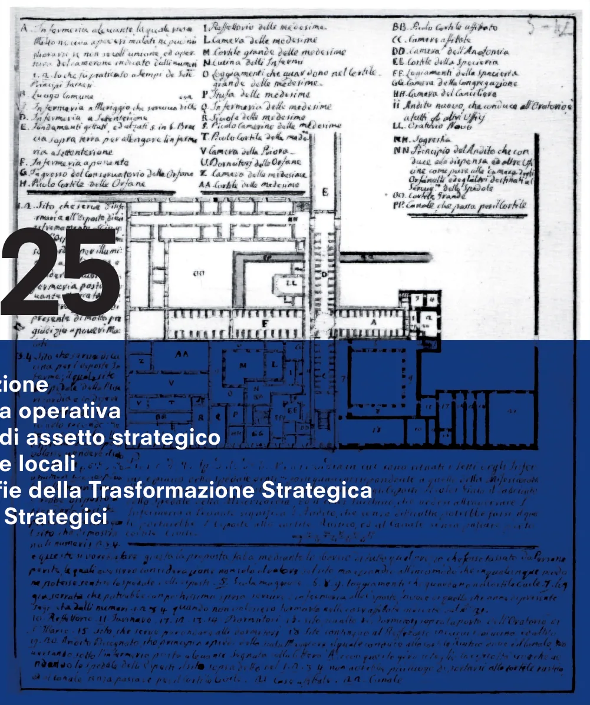
2025
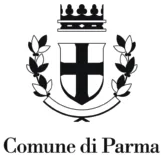
UNLAB
4.0 Introduzione
4.1 Strategia operativa
4.2 Schemi di assetto strategico
4.3 Strategie locali
4.4 Geografie della Trasformazione Strategica
4.5 Progetti Strategici
4.0.1
Strategie locali - Unità Territoriali
Geografie della trasformazione strategica
Progetti strategici
Il Piano Urbanistico Generale PR050 è stato elaborato
e redatto dal Raggruppamento Temporaneo d’Imprese
rappresentato dall’arch. Andreas Faoro - (direttore dell’ufficio
UNLAB) insieme e in collaborazione con l’ufficio di piano del
Comune di Parma.
Sindaco:
Michele Guerra
Assessora alla Rigenerazione Urbana:
Chiara Vernizzi
Direttore Generale e Segretario Generale:
Pasquale Criscuolo
Dirigente del Settore Pianificazione e Sviluppo del Territorio:
arch. Emanuela Montanini
Uffico di Piano Comune di Parma:
arch. Emanuela Montanini, arch. Lucia Sartori, arch. Federica
Zatti, arch. Francesca Carluccio, dott.ssa Maria Beatrice
Corvi, arch. Antonella Fornari, geom. Alessandra Gatti, arch.
Samanta Maccari, arch. Nicole Mariotti, arch. Alessandro
Massera, arch. Bianca Pelizza, arch. Beatrice Peri,
arch. Patrizia Rota, ing. Devis Sbarzaglia, urb. Edy Zatta
Gruppo di lavoro incaricato
Capogruppo:
arch. Andreas Faoro
RTI:
arch. Andreas Faoro (UNLAB), arch. Carlo Santacroce, arch.
Piergiorgio Tombolan (Studio Tombolan Associati), ing.
Alberto Mazzucchelli (MPMA), arch. Luca Pagliettini (Collettivo
di Urbanistica), arch. Raffaella Gambino, arch. Fabio Ceci
(ubi urbs), arch. Federica Thomasset, arch. Paolo Castelnovi,
biol. Luca Bisogni, avv. Roberto Ollari, geol. Francesco Cerutti
(Engeo s.r.l.)
Sistemi informativi Territoriali:
arch. Federico Ghirardelli
Assunzione
Adozione
Approvazione
DELIBERA G.C. N. 241 DEL 12/07/2023
DELIBERA C.C. N. 241 DEL 12/07/2023
DELIBERA C.C. N. 241 DEL 12/07/2023
UNLAB
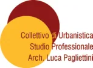
I testi e le immagini presenti nel documento
sono da intendersi come materiale facente
parte del Piano Urbanistico Generale di Parma
“PR050 - Parma 2050”.
https://www.parma2050.eu
Indice
Introduzione generale
4.0
4.0.1
4.0.2
4.0.3
4.0.4
Elenco abbreviazioni
pag.7
Prefazione
pag.8
Introduzione
pag.9
Note per la lettura
pag.11
Strategia operativa
pag.12
4.1
Il progetto delle strategia operativa
pag.14
Misurare e progettare la città contemporanea:
elementi costituenti e requisiti prestazionali
“DECODICO” e “FATE”
pag.16
ROOFTOP, PIANO EXTRA, RIFO
pag.18
RIFO
pag.22
Spazi e progetti strategici
pag.28
Gli scenari e l’Atlante
pag.30
4.1.1
4.1.2
RIMADUC - Rigenerazione MArgini parco DUCale pag.178
RIMAP - RIgenerazione MArgini Parco ex-Eridania,
Falcone Borsellino, Parco della musica
pag.182
RIMAP - RIgenerazione MArgini Parco Martini
pag.186
RIMAP - RIgenerazione MArgini Parco Ferrari
pag.190
RIMAP - Rigenerazione MArgini Parco della
Biodiversità
pag.194
Aree strategiche di nuova urbanizzazione,
rigenerazione e sviluppo infrastrutturale
Nuova Pontremolese (A1 Crocetta) ERS
pag.198
“Parma North Gate”
pag.202
“Campus sud” e “Parma South Gate”
pag.206
“Parco attrezzato per servizi alla collettività”
pag.210
“Aeroporto est”
pag.214
Aree strategiche per interventi di sviluppo e
rigenerazione urbana e ambientale
“Ex scalo ferroviario viale Fratti”
pag.218
“Ex Bormioli”
pag.222
Area “Stazione nord”
pag.226
Area “Ponte nord”
pag.230
“Ex Greci Gaione”
pag.234
“Ex cartiera Bonati” (Parma sud)
pag.238
“Ex cartiera” (Vigatto)
pag.242
“Ex Star” (Corcagnano)
pag.246
“Ex TEP” (Villetta)
pag.250
“Ex Salamini” denominata “Parma East Gate”
pag.254
Area “Via Emilia est”
pag.258
“Ex scalo ferroviario via Reggio”
pag.262
“Cluster Multifunzionale Ex Italgel”
pag.266
“Casello viale delle Esposizioni”
pag.270
Area “via Strobel”
pag.274
“Ex inceneritore” (Cornocchio)
pag.278
“Mulino Soncini” (Porporano)
pag.282
Area “San Pancrazio Nord”
pag.286
“Cuneo verde confluenza torrenti Parma e Baganza” pag.290
“Aree produttive in sponda dx e sn torrente Baganza” pag.294
“Ospedale Maggiore”
pag.298
Interventi di sviluppo strategico
Areali della “Productive city”
pag.302
“Green Tech Corridor”
pag.204
Areali di addensamento lungo le tre direttrici
strutturali della TPL
pag.306
Strategie per la produzione di energia da fonti
innovabili
pag.310
Strategie per le funzioni residenziali ERS
pag.316
Strategie per la desigillazione, deimpermeabiliz-
zazione, demineralizzazione del suolo
pag.320
Strategie per la densificazione
pag.324
Strategie per la riduzione
dell’impronta carbonica
pag.328
Rigenerazione e trasformazione delle aree urbane
interessate da interventi urbanistici non conclusi
pag.330
4.4.A7
4.4.A8
4.1.3
4.1.4
4.1.5
4.1.6
4.4.A9
4.4.A10
4.4.A11
Schemi di assetto strategico
pag.41
4.2
4.4.B
Schema di assetto strategico strutturale
pag.44
Schema di assetto strategico delle trasformazioni
pag.46
Pesi insediativi e premialità nelle aree strategiche
pag.48
Schema di assetto strategico delle correlazioni
e dei servizi
pag.50
4.2.1
4.2.2
4.2.2.1
4.2.3
4.4.B.1
4.4.B.2
4.4.B.3
4.4.B.4
4.4.B.5
4.4.C
Strategie locali
pag.54
4.3
Parma Centro Storico
pag.58
Parma Centro Storico (Oltretorrente)
pag.60
Parma centro quadrante Nord-Est
pag.62
Quartiere S. Leonardo
pag.64
Quartiere Cortile San Martino
pag.66
Quartiere Cortile San Martino (Parma Eco District) pag.68
Quartiere Cortile San Martino (Rurale)
pag.70
Quartiere S. Lazzaro (Urbano)
pag.72
Quartiere S. Lazzaro (Rurale)
pag.74
Quartiere Lubiana (Urbano)
pag.76
Quartiere Lubiana (Rurale)
pag.78
Quartiere Lubiana (S. Prospero)
pag.80
Quartiere Cittadella (Area Montebello)
pag.82
Quartiere Cittadella (Rurale)
pag.84
Quartiere Cittadella (Mariano)
pag.86
Quartiere Cittadella (Porporano)
pag.88
Quartiere Cittadella (Botteghino)
pag.90
Quartiere Cittadella (Pilastrello)
pag.92
Quartiere Cittadella (Marano)
pag.94
Quartiere Montanara
pag.96
Quartiere Vigatto (Campus)
pag.98
Quartiere Vigatto (Rurale)
pag.100
Quartiere Vigatto (Alberi)
pag.102
Quartiere Vigatto (Gaione)
pag.104
Quartiere Vigatto (Carignano)
pag.106
Quartiere Vigatto (Vigatto)
pag.108
Quartiere Vigatto (Panocchia)
pag.110
Quartiere Vigatto (Corcagnano)
pag.112
Quartiere Molinetto (Distretto sud-ovest via Spezia)pag.114
Quartiere Molinetto (Comparto produttivo via Spezia) pag.116
Quartiere Molinetto (Vigheffio)
pag.118
Quartiere Molinetto (Rurale)
pag.120
Quartiere Pablo
pag.122
Quartiere San Pancrazio (Crocetta)
pag.124
Quartiere San Pancrazio (Urbano)
pag.126
Quartiere San Pancrazio (Rurale)
pag.128
Quartiere San Pancrazio (Vicofertile)
pag.130
Quartiere Golese (Aeroporto, Fognano)
pag.132
Quartiere Golese (Rurale)
pag.134
Quartiere Golese (Eia)
pag.136
Quartiere Golese (Expo)
pag.138
Quartiere Golese (Baganzola-Cervara)
pag.140
Quartiere Golese (Vicomero)
pag.142
Quartiere Golese (Viarolo)
pag.144
4.3.1
4.3.1a
4.3.1b
4.3.2
4.3.3
4.3.4
4.3.5
4.3.6
4.3.7
4.3.8
4.3.9
4.3.9a
4.3.10
4.3.11
4.3.11a
4.3.11b
4.3.11c
4.3.11d
4.3.11e
4.3.12
4.3.13
4.3.14
4.3.14a
4.3.14b
4.3.14c
4.3.14d
4.3.14e
4.3.15
4.3.16a
4.3.16b
4.3.17a
4.3.17b
4.3.18
4.3.19
4.3.20
4.3.21
4.3.21a
4.3.22
4.3.23
4.3.23a
4.3.23b
4.3.23c
4.3.23d
4.3.23e
4.4.C.1
4.4.C.2
4.4.C.3
4.4.C.4
4.4.C.5
4.4.C.6
4.4.C.7
4.4.C.8
4.4.C.9
4.4.C.10
4.4.C.11
4.4.C.12
4.4.C.13
4.4.C.14
4.4.C.15
4.4.C.16
4.4.C.17
4.4.C.18
4.4.C.19
4.4.C.20
4.4.C.21
4.4.D
4.4.D.1
4.4.D.2
4.4.D.3
4.4.D.4
4.4.D.5
4.4.D.6
4.4.D.7
4.4.D.8
4.4.D.9
4.5
4.5.1
4.5.2
Progetti Strategici
pag.333
“Bosco Orbitale” e “Cinture verdi”
pag.334
“Oasi Verde-Blu della Biodiversità”
(Cassa di espansione Torrente Parma)
pag.336
Parma Green Ring
pag.338
Parco Verde-Blu: il torrente Parma come corridoio
ecologico per la biodiversità
pag.346
Ciclovia e parco territoriale del Naviglio
(Reggia di Colorno - Parco Ducale/Pilotta -
Rocca di Sala Baganza)
pag.350
“Urban Loops”: tangenziale nord, Semi-Ring,
piste ciclabili e progetto della città pubblica
pag.352
Aree pedonali, zone 30 e zone 20 centro storico
pag.358
Verde Temporaneo: Parma Vivaio Mobile
pag.360
La “Superquadra”: il “bioparco” di Parma
pag.362
Dalla fermata “Alta Velocità” allo
“Smart Mobility Hub”
pag.366
Parma Eco District (PED) e il Parco Centrale
pag.368
Parma Food Port – Nuovo Mercato Agro-alimentare pag.376
Parco lineare Ex-Pontremolese
pag.378
4.5.3
4.5.4
4.5.5
Geografie della Trasformazione Strategica
pag.147
4.4
4.5.6
Aree e spazi strategici
pag.149
Interventi di rigenerazione urbana strategica
RIMAGREEN - RIgenerazione MArgini GREEN Ring pag.154
RIMATAR - RIgenerazione MArgini stadio TARdini
pag.158
RIMACI - RIgenerazione MArgini CIttadella
pag.162
RIMAOS - RIgenerazione MArgini OSpedale
pag.166
RIMAVIL - Rigenerazione MArgini VILletta
pag.170
RIMAPON - RIgenerazione MArgini parco lineare ex
PONtremolese
pag.174
4.4.0
4.4.A
4.4.A1
4.4.A2
4.4.A3
4.4.A4
4.4.A5
4.4.A6
4.5.7
4.5.8
4.5.9
4.5.10
4.5.11
4.5.12
4.5.13
4.0.1
Elenco abbreviazioni
Accordo Operativo
Accordo Operativo Extra
Bosco Orbitale
DEnsità, COmpattezza, DIversità, COnnettività
Disciplina Normativa
Demolizione Ricostruzione
Fotovoltaico, recupero Acque, Tetto terrazza verde, Efficientamento
Green Infrastructure
Livelli Minimi di Coerenza
Livelli Premiali di Efficacia
Legge Urbanistica Regionale
Manutenzione Ordinaria
Manutenzione Straordinaria
Nearly zero-emission building (Edifici Energia Quasi Zero)
Parma Eco District
Piano Urbanistico Generale
Park & Ride
Regolamento Edilizio
Ristrutturazione Edilizia
Regione Emilia-Romagna
RIgenerazione urbanisticacondizionata FOotprint
RIgenerazione MArgini CIttadella
RIgenerazione MArgini parco DUCale
RIgenerazione MArgini Green Ring
Rigenerazione MArgini OSpedale
RIgenerazione Margini Parchi
RIgenerazione Margini parco lineare ex PONtremolese
RIgenerazione MArgini stadio TARdini
RIgenerazione Margini VILletta
Requisiti Prestazionali
Ristrutturazione Urbanistica
Sovracomunale
Superficie COperta
Superficie Lorda
Strategia per la Qualità Urbana ed Ecologica-Ambientale
Parma 2050
Trasporto Pubblico Locale
Territorio Rurale
Territorio Urbanizzato
Tessuto Urbano Intervento Unitario da Tutelare
Tessuto Urbano Intervento Unitario da Preservare
VAlutazione Strategica Ambientale e Territoriale
AO
AOE
BO
DECODICO
DN
DR
FATE
GI
LMC
LPE
LUR
MO
MS
NZEB
PED
PUG
P + R
R.E.
RE
RER
RIFO
RIMACI
RIMADUC
RIMAGREEN
RIMAOS
RIMAP
RIMAPON
RIMATAR
RIMAVIL
RP
RU
SC
SCO
SL
SQUEA
PR050
TPL
TR
TU
TUIUT
TUIUP
VALSAT
4.0.2 Prefazione
In un momento di significative trasformazioni ambientali e di continua incertezza economica, le nostre
priorità sono cambiate. La valuta più pregiata non è più il mattone – il costruito – bensì le condizioni ambientali
e climatiche che le nostre città sapranno offrire ed assicurare ai propri cittadini. La strategia 1 pensata nel
PUG denominato PR050 pensa alla città del XX secolo, ad alto consumo energetico come un modello che deve
essere superato, guardando nuovamente ai principi climatici che hanno segnato lo sviluppo dell’urbanistica
sin dall’epoca classica.
Nella trasformazione dei modelli correnti di sviluppo economico, il Piano Urbanistico Generale inaugura
un nuovo tipo di strumento per il governo del territorio. Denominato PR050 (Parma 2050) il PUG di Parma, nello
spirito della legge 24/17, propone un “set” di strategie e azioni che favoriscono il riassetto del sistema urbano
ed extra-urbano; concorrendo al raggiungimento degli obiettivi prefissati. Infatti, il Piano PR050 introduce
dei nuovi dispositivi ambientali che saranno in grado di mitigare e riequilibrare i rapporti tra i vari sistemi
che compongono la città e il territorio. Oltre la rigenerazione edilizia e urbana, infatti, il piano propone come
progetto prioritario, lo sviluppo dell’infrastruttura verde, che sarà costruita nel tempo attraverso l’attivazione
delle trasformazioni urbane, connesse e correlate alla formazione della città pubblica.
1. “Nell’ elaborare una strategia è importante
riuscire a vedere le cose che sono ancora
distanti come se fossero vicine ed avere una
visione distaccata delle cose che, invece, sono
più prossime” (scrittore giapponese Mymoto
Musashi)
PR050 sviluppa e definisce un sistema di nuovi parchi, indicati come future “piazze verdi”. Predispone
inoltre, il cosiddetto “Bosco Orbitale” (BO) intorno il TU (capoluogo e in alcune frazioni) che sarà in grado
di agire come termoregolatore dei venti caldi della pianura padana e di depurare l’aria dalle particelle più
tossiche.
Allo stesso tempo questo “dispositivo ambientale” oltre a definire una “soglia verde” tra sistemi (Territorio
Urbanizzato e Territorio Rurale), definirà anche il nuovo bordo e limite della città e del Territorio Urbanizzato. Il
PUG, inoltre, propone un sistema di corridoi verdi e blu a partire da una valorizzazione del reticolo idrografico
nella campagna centuriata per lo sviluppo della biodiversità, e propone la “Superquadra” come ambito
di sperimentazione ambientale (un’ampia area racchiusa tra sistemi infrastrutturali complessi) che nel suo
sviluppo potrà definire un paesaggio di nuovo tipo, in cui sperimentare forme di produzione legate alla natura
nelle sue più diverse manifestazioni.
In questo nuovo sistema di valori il costruito va riprogrammato e non solo rigenerato, in sostanza va
ricostruito tenendo presente la necessità della costruzione diretta e indiretta della città pubblica: qualità
imprescindibile della città del futuro. Il PUG - PR050 - predispone una serie di strumenti capaci di attivare
i processi rigenerativi, non solo nelle aree di trasformazione strategica ma anche nelle forme più piccole e
minute riferibili all’unità edilizia. Parma, come del resto altre città in Italia e in Europa, dovrà reinvestire su
se stessa, sul capitale generato nella sua lunga storia anche recente e rigenerarlo, ricostruirlo seguendo
nuovi criteri di valorizzazione, mettendolo in sicurezza e allo stesso tempo rendendolo più efficiente. Dovrà
essere capace di sviluppare nuovi valori di mercato, ma soprattutto di vivibilità, socialità e qualità, partendo
dall’assioma che non vi è rigenerazione senza messa in sicurezza degli insediamenti.
Nel Territorio Urbanizzato (TU) una nuova griglia valoriale legata alle trasformazioni ridefinisce lo sviluppo
della città pubblica attraverso un sistema di correlazioni con le trasformazioni private. Tramite un sistema
di spazi pubblici distribuiti strategicamente all’interno del Territorio Urbanizzato, si assicura continuità tra i
grandi sistemi ecologico-ambientali e quelli interni alla città.
Il Piano Urbanistico Generale PR050 inaugura non solo un nuovo strumento, ma è anche la sintesi di un
percorso che prende atto che l’espansione è finita e lavora su un’idea diversa di città e comunità urbana,
assumendo come principali elementi per la rigenerazione della città quello dell’adattabilità, della resilienza
ambientale, sostenendo allo stesso tempo l’attrattività della città, il bisogno di garantire abitabilità e
inclusione sociale.
4.0.3 Introduzione
La Strategia per la Qualità Urbana ed Ecologico-Ambientale costituisce uno degli elaborati fondamentali
della nuova pianificazione urbanistica prevista dalla Regione Emilia-Romagna e, per questo, viene descritta
e richiamata in numerosi articoli della nuova Legge n. 24 del 21 Dicembre 2017. L’articolo 34 è dedicato
interamente alla descrizione degli obiettivi e dei contenuti che devono essere affrontati all’interno della
Strategia per la Qualità Urbana ed Ecologico-Ambientale. Attraverso la Strategia, il PUG deve “rafforzare
l’attrattività e competitività dei centri urbani e del territorio, elevandone la qualità insediativa ed ambientale”.
La legge indica le azioni da adottarsi nella strategia per perseguire tale obiettivo:
•
crescita e qualificazione dei servizi e delle reti tecnologiche;
•
incremento quantitativo e qualitativo degli spazi pubblici;
•
valorizzazione del patrimonio identitario, culturale e paesaggistico;
•
miglioramento delle componenti ambientali;
•
sviluppo della mobilità sostenibile;
•
miglioramento del benessere ambientale;
•
incremento della resilienza del sistema abitativo rispetto ai fenomeni di cambiamento climaticoe agli
eventi sismici.
Sulla base delle “politiche urbane territoriali perseguite dal piano”, la Strategia deve altresì indicare i criteri e
le condizioni generali, che “costituiscono il quadro di riferimento per gli accordi operativi e per i piani attuativi
di iniziativa pubblica”. In particolare, la Strategia è tenuta a fissare gli obiettivi generali che attengono:
•
i livelli quantitativi e qualitativi del sistema delle dotazioni territoriali, delle infrastrutture per la mobilità
e dei servizi pubblici da realizzare;
•
il grado di riduzione della pressione del sistema insediativo sull’ambiente naturale, di adattamento ai
cambiamenti climatici, di difesa o di delocalizzazione dell’abitato e delle infrastrutture a rischio e di
miglioramento della salubrità dell’ambiente urbano.
Tali obiettivi generali devono essere perseguiti “attraverso l’indicazione di requisiti prestazionali e di
condizioni di sostenibilità”.
Alla Strategia per la Qualità Urbana ed Ecologico-Ambientale vengono più nello specifico assegnati compiti
relativi:
•
alla conferma, al rafforzamento e all’ammodernamento delle opere e delle infrastrutture pubbliche
(articolo 9 “Standard urbanistici differenziati”). La Strategia deve, in particolare, individuare le aree
caratterizzate da maggiore carenza, ove favorire il potenziamento delle dotazioni, e quelle che non
presentino ulteriori esigenze, per le quali può prevedere anche dotazioni minori rispetto a quelle
minime previste dal DM n. 1444 del 1968. L’articolo 34, ai commi 5 e 6, specifica inoltre come la Strategia
debba indirizzare gli atti di programmazione dei lavori pubblici comunali, sulla base delle priorità delle
azioni che deve definire per l’utilizzo delle risorse pubbliche (articolo 34, commi 5 e 6);
•
alla definizione del fabbisogno complessivo di alloggi di edilizia residenziale sociale necessari in
relazione alle esigenze e alle caratteristiche demografiche del territorio, anche specificando le modalità
con cui possono contribuire gli interventi di riqualificazione e riuso; (tema introdotto nell’articolo 9, e
toccato anche nell’articolo 34, comma 3);
•
alla determinazione del fabbisogno di “Dotazioni ecologiche e ambientali” (articolo 21) e dei requisiti
che le stesse devono soddisfare.
Nel definire quest’ultimo fabbisogno la Strategia persegue specifiche finalità così sintetizzabili:
•
riequilibrio idrogeologico e funzionalità della rete idraulica;
•
miglioramento della qualità dell’ambiente urbano e periurbano nel quale vivere, anche attraverso
azioni per incrementare la biodiversità, tutelare la risorsa suolo e per la costituzione di reti ecologiche;
•
miglioramento delle caratteristiche meteo climatiche locali, per favorire anche la riduzione di inquinanti
in atmosfera;
•
miglioramento del clima acustico;
•
miglioramento delle prestazioni in caso di emergenza sismica.
La Strategia per la Qualità Urbana ed Ecologico-Ambientale fornisce precisi indirizzi per ogni trasformazione
del territorio, sia che si collochi all’interno, sia che si collochi all’esterno del territorio urbanizzato.
Le eventuali trasformazioni da attivarsi all’interno del territorio urbanizzato devono avvenire nel rispetto delle
strategie progettuali e localizzative che, sulla base dell’articolo 34 comma 2, devono essere definite per ogni
areale urbano omogeneo individuato dal PUG nello “Schema di assetto del territorio urbanizzato” (ai sensi
dell’art. 33 comma 2). Il tema della funzione di indirizzo della Strategia circa gli interventi di addensamento
e sostituzione urbana è trattato anche all’interno del comma 1 dell’articolo 8 “Incentivi urbanistici per gli
interventi di riuso e rigenerazione urbana”.
L’articolo 35, dedicato alla “Disciplina delle nuove urbanizzazione”, specifica come la Strategia abbia
un altrettanto importante compito in relazione al territorio extraurbano, costituendo uno dei principali
elementi da prendere a riferimento nella definizione della “Griglia degli elementi strutturali che connotano
il territorio extraurbano”. La Griglia, e di conseguenza la stessa Strategia, costituiscono anche in questo
caso “riferimento necessario per le nuove previsioni”, stabilendone “i limiti, le condizioni e le opportunità
insediative che ne derivano, in conformità agli esiti della Valsat”. Più in generale la funzione della Strategia
come riferimento cardine per verificare la conformità delle trasformazioni proposte, con i diversi strumenti
previsti dalla Legge, rispetto agli obiettivi e alle scelte del PUG viene evidenziata nell’articolo 38 “Accordi
operativi e Piani di iniziativa pubblica”.
Tutte le trasformazioni devono inoltre necessariamente dare attuazione, definendone modalità e tempi, alle
eventuali misure compensative che la Strategia può definire per favorire il “miglioramento ambientale” e
la “mitigazione degli effetti negativi riconducibili ai nuovi insediamenti”, ai sensi dell’articolo 20 “Misure di
compensazione e di riequilibrio ambientale e territoriale”.
PUG “PR050”
“CARTA”
VISION
TEMI
ATLANTE
SCENARI
I TAVOLI E L’ASCOLTO
REGOLE E VALORI
LE IMMAGINI
LUOGHI e PROGETTI STRATEGICI
FIGURE DELLA TRASFORMAZIONE
Parma città della biodiversità
La città e il territorio
via Emilia come “centralità lineare”
Consumo di suolo”0”
(LR n.24/2017) - Recupero urbano, premialità. Tras-
formare la quantità in qualità.
Rigenerazione e costruzione della città pubblica
(DECODICO, FATE e Correlazioni)
Parma “alta capacità”
Urban Loops
Parma città policentrica e dei quartieri
La città e la mobilità
Parma “città produttiva”
Bosco Orbitale e “Green Infrastructure”
Parma città della mobilità condivisa e
sostenibile
Parma Ecocittà
La città e l’agricoltura
Green Ring
Concorsi
Messa in sicurezza del territorio
Riduzione inquinamenti
La Città-parco del XXI secolo
La città e il lavoro
Parma città della cultura e
conoscenza diffusa
Nuovi epicentri urbani
“Living” Parma
La città e la cultura
“Superquadra”:
parco dell’innovazione ambientale
Parma città della qualità dell’abitare e
della cura delle persone
PPP - Pubblico Privato Partnership
Super Parma
La città e la scuola
Trasporto pubblico di alta qualità
Rooftop - Piano Extra - RIFO
Natura espansiva
Parma città, dello sviluppo e
delle opportunità
La città e lo sport
Parma “piazze verdi”
“Productive city”
La città, la salute
e la cura
Parma città dell’agricoltura come
patrimonio, storico-ambientale
e socio-culturale
“Parma Brainport” - Nuovo network diffuso
di scuole aperte alla città
Proliferazione aree verdi
La città verde
Nuove economie urbane circolari
Corridoi verdi e blu
Parma città capitale del cibo e
dell’alimentazione sostenibile
La città e la comunità
Nuovo “arcipelago” di spazi pubblici,
centri civici e infrastrutture sociali innovative
Minimun Grid della mobilità dolce ed elettrica
(network e sistema a rete )
Programmazione e riuso temporaneo
...
La citta e la casa
Parma città dell’energia rinnovabile
Parma città inclusiva e del benessere
La città sostenibile
Parma Food Port (PFP)
Parma Eco District (PED)
VALSAT
4.0.4 Note per la lettura
L’Atlante ha l’obiettivo di definire le strategie operative del Piano Urbanistico Generale PR050. Lo fa
a partire dai principali contenuti degli Scenari1 e le rispettive Azioni. Il presente Documento “ATLANTE”
specifica ed esplicita i contenuti strategici operativi degli elementi strutturali, trasformativi e correlati del
territorio comunale. L’Atlante si compone di sei parti. All’introduzione, prima parte, si affianca la seconda
corrispondente alla spiegazione e articolazione dei contenuti strategici e operativi del piano PR050; la
terza invece è dedicata alla definizione degli schemi di assetto strategico2 (Schema di assetto strategico
strutturale, Schema di assetto strategico delle trasformazioni, Schema di assetto strategico delle correlazioni
e dei servizi), la quarta parte sviluppa le “Strategie Locali” basate sulla suddivisione del territorio comunale
in una sub-articolazione dei quartieri; la quinta sezione identifica le “Geografia delle trasformazioni
strategiche” mentre la sesta illustra i principali “Progetti strategici”. Le parti 4, 5 e 6 si sviluppano
attraverso l’ausilio di schede definite da ritagli cartografici derivanti dagli schemi di assetto strategico delle
trasformazioni e delle correlazioni. Gli schemi di assetto strategico traducono ed esplicitano le strategie
contenute negli scenari e ne definiscono i caratteri operativi. Come indicato precedentemente sono costituiti
da 3 elaborati cartografici principali in scala 1:25.000. 1) Schema di assetto strategico strutturale, 2) Schema
di assetto strategico delle trasformazioni, 3) Schema di assetto strategico delle correlazioni e dei servizi. A
questi 3 “Schemi” la Strategia affianca un ulteriore elaborato che prende il nome: D3 “Disciplina e Strategia:
Incentivi e/o limitazioni transitorie”, la cui versione è inclusa nella disciplina e sostanzialmente declina le
strategie concepite per le trasformazioni dirette in regime ordinario. L’elaborazione D3, assume a tutti gli
effetti il ruolo di schema di assetto strategico rispetto alle trasformazioni dirette e in attesa dell’attuazione
dell’accordo operativo. La “disciplina” include il pensiero strategico legato alle trasformazioni e diventa a
tutti gli effetti il primo livello della strategia. I tre schemi di assetto e la “D3”, quindi, svolgono la funzione
chiave di sintesi e rappresentazione delle strategie operative del Piano. Vi è inoltre, un elaborato denominato
“D4” che individua gli areali soggetti all’applicazione dei coefficenti di sviluppo, individuati dalla strategia,
con possibile sviluppo differenziato nei “lotti liberi” all’interno del TU. Coefficienti insediativi determinati da
una serie di parametri che ne definiscono i pesi e quindi le quantità insediabili (a tale riferimento si veda .La
strategia, inoltre, individua ed elaboora alcune modalità d’intervento incentivanti come il “rooftop”, “piano
extra” e “RIFO” che “consegna”alla disciplina Alle parti grafiche si associano parti testuali, articolate sotto
forma di schede. Di seguito viene data spiegazione sintetica delle 3 parti successive alla sezione dedicata
agli schemi di Assetto, costituenti l’Atlante:
1. Gli Scenari (terzo pilastro del PUG, dopo
Temi e Vision) rappresentano la prima parte
delle strategie (le Macro-strategie). l’Atlante
(quarto pilastro) definisce le “strategie
operative” complessive del Piano. Gli Scenari
e l’Atlante costituiscono nel loro insieme
la SQUEA (Strategie per la Qualità Urbana
Ecologica- Ambientale), così come indicata
dalla LUR 24/17 art. 34;
2. Lo Schema di Assetto del territorio, in
base alla nuova legislazione, deve contenere
l’identificazione delle parti della città che,
presentando caratteristiche omogenee,
richiedono politiche e indirizzi di trasformazione
coerenti con i loro caratteri identitari e le
loro criticità specifiche (art. 33), ma anche
l’identificazione di previsioni e progetti ritenuti
necessari all’incremento della qualità urbana ed
ecologico ambientale nel territorio urbanizzato
(art. 34);
3. Lo schema a lato rappresenta il diagramma
esplicativo del PUG denominato “PR050”
(Parma 2050). I 5 pilastri sono tenuti insieme
dalla VALSAT che costituise l’elemento
trasversale a tutto il Piano.
1. Strategie Locali (ST.SL)
Le strategie Locali vengono rappresentate all’interno di tutto il territorio comunale (TR e TU). La base
cartografica utilizzata è la tavola di “assetto strategico delle correlazioni e dei servizi” corrisponde nella sua
essenza al “masterplan” della città pubblica in cui sono visibili attraverso apposite grafie le progettualità
che ne definiscono i caratteri principali. A questa base si sovrappone la suddivisione del territorio comunale
definita dai quartieri e da una loro sub-articolazione. La ValSAT, ha predisposto a partire dalle strategie locali
un sistema di “Unità Territoriali” composte da elementi omogenei tra sistemi funzionali. I ritagli cartografici
esprimono specifici ambiti che esprimono la cosiddetta geografia delle “Strategie Locali”. A queste
rappresentazioni si affiancano delle parti testuali, organizzate sotto forma di schede, per un totale di 44. Le
schede descrivono gli obiettivi ed i risultati attesi per ciascuna Unità Strutturale del Comune di Parma. In
particolare, ogni scheda inquadra le parti omogenee entro le quali si collocano gli elementi e le progettualità
sia per le parti urbane che rurali. Si evidenziano gli aspetti problematici e critici riscontrati, gli obiettivi da
perseguire, in alcuni casi gli interventi previsti sia puntuali che generali sull’intera area di influenza, l’assetto
delle attrezzature e degli spazi collettivi di livello comunale e sovracomunale, le prestazioni e le azioni
da perseguire, tali da favorire ed elevarne la qualità urbana ed ecologico ambientale. Le varie porzioni
si differenziano per scala e grandezza, alcune rappresentazioni vengono visualizzate in scala 1:20.000 e
riguardano l’urbanizzato sparso, parte del Territorio Rurale e le frazioni, altri in scala 1:10.000 e alcuni 1:5.000
riguardanti le parti urbanizzate.
2. Geografie della trasformazione strategica (ST.GTS)
Le aree evidenziate nella tavola denominata “schema di assetto strategico delle trasformazioni”, vengono
visualizzate in apposite schede in cui vengono elaborate linee guida e di indirizzo per il loro sviluppo e
trasformazione. Esse riferiscono alle trasformazioni attraverso interventi complessi ma allo stesso tempo
alcune di esse si calano all’interno della disciplina. Ogni scheda viene rappresentata da un doppio registro
cartografico. Infatti, allo schema di assetto delle trasformazioni viene affiancato quello delle correlazioni e
servizi. In un certo senso viene visualizzato il risultato, in termini di ricadute, relative ad ogni trasformazione,
nell’evoluzione della città pubblica. In ogni scheda vengono richiamate le Azioni necessarie per lo sviluppo
delle strategie e quindi il raggiungimento degli obiettivi definiti nella “Vision”. Esse, infatti, estendono e
specificano le strategie, contestualizzandole. Questo articolato permette e garantisce il controllo degli
obiettivi individuati nella Vision (le strategie concorrono al loro raggiungimento), e anche quelli più specifici
legati alle prestazioni urbanistico-edilizie richieste. (La sintesi di questi elementi verrà valutata e inclusa nelle
schede predisposte dalla VALSAT). Le elaborazioni e i ritagli cartografici sono rappresentati a scale diverse e
variano dal 1:5.000 al 1:10.000. All’interno delle aree strategiche individuate nel Piano PR050 tutti gli interventi
sono da intendersi strategici. Infatti le aree strategiche definiscono gli ambiti privilegiati di trasformazione,
con effetti su tutta la città e il territorio e non solo riferibili all’area di riferimento.
3. Progetti Strategici (ST.PS)
I progetti strategici vengono visualizzati in apposite schede in cui vengono elaborate linee guida di
indirizzo e le azioni prioritarie da perseguire per il loro sviluppo.
Le schede, quindi, contengono indirizzi alla progettazione più dettagliate al fine di aumentare il livello
di specificità. I progetti strategici sono una diretta emanazione delle strategie e ne diventano, in modo
emblematico, il loro manifesto. Essi vengono definiti strategici proprio per il loro effetto. Infatti, non si riferisce
solo all’ambito di riferimento ma le ripercussioni sono da intendersi ad una scala più ampia con effetti su tutta
la città; per questo vengono definiti strategici. Alcuni dei progetti strategici agiscono indipendentemente
dalle aree strategiche individuate. A queste progettualità il piano affianca progetti pilota e progetti specifici.
I primi sono riferibili a progettualità di carattere quasi sempre temporaneo e quindi reversibile, mentre i
secondi riferiscono a progetti alla scala locale o di quartiere, rivolti al miglioramento di condizioni critiche
riscontrate nelle valutazioni diagnostiche.
4.0 Introduzione
4.1 Strategia operativa
4.2 Schemi di assetto strategico
4.3 Strategie locali
4.4 Geografie della Trasformazione Strategica
4.5 Progetti Strategici
4.1.1 Il progetto della strategia operativa
Dall’espansione urbana alla densificazione, all’intensificazione funzionale
PR050 (Parma 2050) è il nome del nuovo PUG (Piano Urbanistico Generale), al quale è stata associata una
visione strategica per la città Parma definita come entità intensa e multicentrica.
PR050 propone una visione che proietta Parma nel futuro, attraverso una rilettura delle peculiarità del suo
territorio, dello sviluppo dei suoi quartieri, delle frazioni, dei parchi, delle piazze, delle vie alberate e delle
vie di percorrenza e accessibilità ai servizi. La città, quindi, viene rappresentata attraverso 10 “immagini”
(VISION) che sono insieme interpretazione delle condizioni esistenti e proiezioni nel futuro: esse esplicitano
gli obiettivi del piano a cui tendere. La strategia attuata dal piano è il risultato di una interpolazione di
“sintesi” del QC del QCD (come contributo della VALSAT) insieme agli obiettivi prioritari delineati nella LUR
24/2017, dalle agende ONU ed Unione Europea (SDG’s). Il prodotto di questa interazione è stata declinata
attraverso 7 scenari, ossia 7 “figure” che hanno il compito di guidare le trasformazioni per concorrere al
raggiungimento degli obiettivi individuati dalla Vision. Agli scenari vengono affiancate una serie di Azioni che
agiscono da “attivatori” delle strategie stesse.
Il Piano PR050 organizza le strategia attraverso due dispositivi distinti ma collegati: Scenari e Atlante. Essi
sono funzionali alla definizione della strategia nella sua accezione più ampia, dalla scala territoriale, a quella
urbana e locale. Gli elementi strategici individuati, rappresentano una guida per la trasformazione della città
e del suo territorio. La strategia (la LUR chiama SQUEA) è elemento centrale del piano e come tale permea
tutte le componenti a partire dalla “Disciplina Normativa”, ossia, il dispositivo con il quale le trasformazioni
vengono regolate e quindi realizzate. Per questo motivo il piano definisce la Disciplina come il primo livello
della strategia.
Parma negli anni recenti ha cambiato “dimensione” aprendosi definitivamente al territorio. É per
questo che il piano propone come progettualità strategica l’integrazione tra le diverse “patch” e parti che
compongono il territorio urbanizzato, a partire dai quartieri formati intorno alla città di antica formazione, ma
anche dalle frazioni e gli insediamenti sparsi nel territorio comunale e oltre. La logica di espansione estensiva
a macchia d’olio che ha coinciso con la crescita della città, ha prodotto una frangia urbana particolarmente
frammentata con caratteristiche diverse ma, in ogni caso, non curante di trovare delle relazioni significative
con la campagna e il territorio agricolo circostante. Per questo motivo il piano introduce un dispositivo
“verde” di cintura lungo il TU dove si viene a definire un nuovo tipo di “bordo”, vera e propria “soglia
territoriale” capace di mediare tra sistemi “TU” e “TR” e di rispondere in prima istanza al contrasto dei
cambiamenti climatici attraverso lo sviluppo della “Green Infrastructure” (GI). Allo stesso tempo questa soglia
(rappresentata nelle elaborazioni cartografiche di Assetto Strategico) ha la funzione di accogliere, in alcune
sue parti, possibili interventi di completamento. Infatti la strategia prevede interventi di riqualificazione dei
tessuti esistenti, connessi ad eventuali modesti ampliamenti in ottica di completamento e ridefinizione dei
margini e bordi urbani sia nel capoluogo che nelle frazioni in contiguità al TU.
Il Piano PR050 promuove come strategia primaria la riconnessione tra le diverse “patch” che compongono
la città, divise in alcuni casi da infrastrutture primarie, ma anche dalle strade consolari o “radiali”, che nel
caso specifico di Parma, a causa del traffico veicolare, diventano vere e proprie “barriere”, impedendo di
fatto l’attraversabilità da parte degli abitanti e utenti.
L’integrazione tra le diverse “patch” e parti che compongono il sistema insediativo intorno alla città storica,
attraverso un nuovo network, costituito da una trama di percorsi ciclabili e pedonali di collegamento tra i
diversi tessuti è di fondamentale importanza; ne definisce l’accessibilità a tutte le sue parti.
La mobilità riveste sicuramente un ruolo importante per far funzionare tutto il territorio, per evitare che sia
un territorio totalmente dipendente dall’automobile ad esempio. Lo stesso vale per servizi e infrastrutture
sociali innovative. Grazie o a causa del “covid” ci siamo resi conto che non possiamo essere totalmente
dipendenti da un centro, dal “centro” della città, ma che tutte le varie parti, tutti i vari quartieri possano
e debbano avere delle forme di autonomia, e che possano essere legate al commercio, ai servizi e forme
aggregate tra “working & living”.
La strategia del piano muove i suoi passi da alcune considerazioni che sono incorporate nella Legge
Regionale 24/17. Essa infatti indica direttamente e indirettamente le invarianti principali del piano, a partire
dalla preservazione del suolo e la messa in sicurezza degli insediamenti. La strategia proposta dal Piano
PR050, risponde a quanto indicato nella LUR nel TITOLO I “DISPOSIZIONI GENERALI SULLA TUTELA E L’USO
DEL TERRITORIO” CAPO I “Consumo del suolo a saldo zero”; Art. 5 “Contenimento del consumo di suolo”,
attraverso una serie di dispositivi legati alle possibilità trasformative che consentono, non solo di preservare
tale risorsa, ma di “guadagnare” suolo attraverso la rigenerazione della città costruita.
La crescita con “guadagno” di suolo, richiede di riformulare il patto tra città e natura, tra la città e i
suoi cittadini. A tale riguardo, Parma, a differenze di molte altre città, non solo emiliane, può contare su
una presenza importante di aree verdi, parchi, ma anche di ambienti naturali di attraversamento come i
torrenti e per la presenza della stessa agricoltura intorno al TU insieme a tutte le forme con cui la natura si
manifesta. La riduzione delle isole di calore, un rinnovato equilibrio “modale” ossia, muoversi all’interno
della città con mezzi non inquinanti sia privati che pubblici, fanno parte di un percorso di transizione che è
sicuramente un percorso aperto alla negoziazione, che però allo stesso tempo è chiaro nei suoi obiettivi, a
partire dall’obiettivo “0 emissioni” al 20301. Esso è un obiettivo chiaramente definito. Il piano PR050 traduce
e definisce come spazialmente la città si debba riorganizzare affinché questo e gli altri obiettivi dovranno
essere raggiunti.
1. Le 100 città selezionate dalla Commissione
Europea, tra cui Parma, avranno l’opportunità
di iniziare a lavorare per raggiungere
concretamente gli obiettivi di transizione
ecologica, diventando degli hub di innovazione
sostenibile nella loro trasformazione sistemica
verso la neutralità climatica entro il 2030.
Per maggiori informazioni il link al sito della
Commissione Europea: https://ec.europa.eu/
info/files/eu-cities-mission-meet-cities_en.
La Legge regionale, indicando il “consumo 0” di suolo (se non nella percentuale consentite del 3%)
definisce di fatto il limite di crescita della città, formalmente rappresentato dal TU (Territorio Urbanizzato) e ci
pone di fronte alla questione di come poter crescere senza consumare risorse o quantomeno crescere avendo
cura di consumarne il meno possibile. A questa domanda il PUG risponde con uno strumento e una strategia,
ossia, favorendo lo sviluppo “centripeto” della città attraverso la “densificazione sostenibile”. La definizione
del TU infatti indica una doppia logica: da una parte esplicita il limite della città e dall’altro indica il potenziale
sviluppo interno o “centripeto”, ponendo l’attenzione sulla qualità degli insediamenti.
Si tratta di un elemento centrale, una risposta concreta all’esigenza di frenare la dispersione ed
espansione (orizzontale) degli insediamenti e correggere, laddove necessario, relazioni spaziali inefficienti. Lo
sviluppo di Parma come città “intensa” e “multicentrica” mira a favorire una maggiore densità insediativa non
solo da un punto di vista quantitativo ma anche e soprattutto qualitativo. Densità significa infatti densità delle
attività umane che possono interfacciarsi in un determinato luogo e spazio urbano e la capacità di interazione
funzionale e aggregazione di servizi (di prossimità) tali da permettere una sorta di autosufficienza.
Le aree, ma anche i luoghi che si prestano - per posizione, conformazione e vicinanza a infrastrutture
esistenti o pianificate - saranno in grado di accogliere non solo nuovi abitanti ma anche servizi, usi del suolo
e luoghi di lavoro. Il PUG individua aree e luoghi strategici dove perseguire la concentrazione, attraverso e
a partire, da una esplicita valorizzazione degli spazi aperti e aree verdi (parchi) esistenti e potenziali, (asset
strategico di Parma) congiuntamente ad operazioni di riordino dei margini e alla loro capacità relazionale.
L’aumento mirato delle possibilità edificatorie viene bilanciato da elementi qualitativi potenziali da
sviluppare, legati ad esigenze specifiche e contestuali. Solo attraverso una qualificazione degli “ambiti verdi”
di riferimento vengono consentiti gli interventi d’intensificazione insediativa.
La priorità d’azione va posta alle “riserve” legate alle parti sotto sviluppate e poco sfruttate, al
rinnovamento della sostanza edilizia vetusta e obsoleta, alla riconversione delle aree dismesse e alla
riqualificazione urbanistica dei quartieri più deficitari di servizi e attrezzature.
Tutto questo dovrà essere in grado di valorizzare i contesti e introdurre aspetti qualitativi dati dalla somma
e l’interazione di molteplici fattori: la rete di spazi e funzioni d’interesse pubblico, l’equilibrio fra gli spazi vuoti
e l’edificato, le funzioni degli edifici e il rapporto con lo spazio pubblico, la conformazione delle strade e la
mobilità lenta.
In questo insieme di fattori, particolare importanza rivestono gli spazi verdi come sfogo ed equilibrio
rispetto alla maggiore intensificazione edilizia e umana indotte dallo sviluppo multicentrico. Gli spazi verdi
quindi non più come risultanza della pianificazione dei volumi degli edifici e delle infrastrutture, ma, al
contrario, come elementi chiave per lo sviluppo policentrico. In quest’ottica particolare, la salvaguardia degli
spazi verdi esistenti significativi e l’individuazione di regole pianificatorie e progettuali che sia gli enti pubblici
sia i privati sono chiamati a rispettare contribuiranno a concretizzare l’obiettivo della qualità insediativa.
Il PUG persegue lo sviluppo attraverso concentrazioni discrete e intensificazione sensibile degli
insediamenti come strategia per migliorare la qualità dei tessuti urbani e del paesaggio urbano a beneficio
dell’ambiente, dell’economia e della società, attraverso un uso più efficiente del suolo. Per migliorare la
qualità di chi vive, lavora e passa il suo tempo libero a Parma e nel suo territorio.
Se una densità insediativa è possibile ed auspicabile come contributo ad una evoluzione urbana
sostenibile, la domanda da porsi è: quale densità realisticamente è sostenibile? Non esiste chiaramente una
risposta univoca e dal carattere universale. La vera questione in essere non è più chiedersi se densificare o
meno, ma è dire dove e come.
In passato le esigenze di sviluppo insediativo venivano soddisfatte prioritariamente creando nuove
zone edificabili: ciò ha condotto nel tempo ad espandere in maniera importante le superfici da destinare
all’edificazione, creando, soprattutto nelle zone esterne il centro storico, un fenomeno estensivo e di
dispersione che compromette la qualità di vita e la funzionalità dei territori insediati. Basti pensare, per
esempio, al traffico veicolare, ai costi delle opere d’urbanizzazione e all’uso frammentato del suolo.
Un utilizzo consapevole, razionale ed efficiente del suolo finalizzato alla concentrazione degli insediamenti
e alla valorizzazione degli spazi liberi contribuisce a riportare qualità sul territorio e un rinnovato equilibrio tra
azioni antropiche e natura.
Lo sviluppo multicentrico mira a favorire una maggiore concentrazione di forme aggregate di funzioni
legate al “working and living” nei luoghi strategici (nodi del trasporto pubblico, dello svago, dei servizi e
del commercio), tali da permettere spostamenti limitando l’uso dell’auto privata, incrementando la qualità
del tessuto costruito e la rete di spazi liberi accessibili a tutti, nel rispetto dell’identità, nonché delle tracce
storiche e culturali dei luoghi e dei quartieri.
4.1.2 Misurare e progettare la città contemporanea
Elementi costituenti e requisiti prestazionali “DECODICO” e “FATE”
Lo sviluppo urbano all’interno del TU, proposto da PR050, è stato misurato e progettato da quattro
parametri urbani “DECODICO” (DEnsità, COmpattezza, DIversità, e COnnettività) e da quattro di tipo
ecologico-ambientale “FATE” (Fotovoltaico, Efficientamento involucro, Tetto/Terrazza verde, recupero e
riuso delle Acque). Insieme portano a un’idea unica di città, quando si considerano le distribuzioni spaziali
potenzialmente in modo virtuoso, rispetto al consumo di risorse, alle opportunità economiche, all’integrazione
sociale e alle prestazioni ambientali.
La densità è il parametro più comunemente utilizzato nella pianificazione per poter gestire il tipo di
intorno urbano che si vuole realizzare. Però non è sufficiente la sola densità a descrivere la forma urbana:
è necessario integrarla con la compattezza del tessuto, definita come relazione tra lo spazio occupato
dall’edificato e lo spazio libero.
Questi due parametri permettono di misurare gli ambiti urbani in base alle loro caratteristiche formali,
stabilendo tra di essi relazioni, che sono state inoltre utilizzate nel progetto della strategia (localizzazione
delle aree suscettibili a incremento di densità, conservazione di aree a bassa urbanizzazione come corridoi
verdi etc.). Densificare assume oggi un valore diverso dal passato. La densificazione esplicita oggi lo
sviluppo delle città in modo centripeto, verso l’interno: quindi intendendo bloccare l’espansione del costruito
verso “il fuori”, ma utilizzando le aree interne al TU, realizzando nuove forme di urbanità, progettando e
sviluppando insediamenti compatti. Il piano PR050 associa al concetto di densificazione quello contestuale
di riduzione della superficie coperta dal nuovo edificio o insediamento. Quindi, aumentare la densità del
costruito e, al contempo, diminuire l’occupazione del suolo significa in altre parole: densificare aumentando
lo spazio permeabile, in altre parole “guadagnare suolo”. Densificare il costruito all’interno della città per
fermare l’espansione illimitata che si è perpetrata negli anni passati, non è un’opzione ma una necessità, con
lo scopo di rendere più efficiente il sistema urbanizzato e il metabolismo della città nel suo complesso.
A questi due principi sono stati associati quello di diversità e connettività, elementi che garantiscono
flessibilità e interazione tra funzioni, uso efficiente del suolo e produzione diversificata di programmi e attività.
Il concetto di diversità si riferisce alla distribuzione di funzioni e programmi a favore della mixitè. Esso
si basa sulla variazione di funzioni, tipi di abitazioni, scale, residenti, utenti, iniziatori, spazi pubblici. Una
trama urbana variegata che ospita una varietà di funzioni e scale edilizie, programmi e tipologie abitative,
residenti e utenti, spazi pubblici/verdi e, soprattutto, offre spazio per la sperimentazione. La connettività è
un parametro che riferisce e contribuisce non solo alla realizzazione della cosiddetta città della “prossimità
(chiamata anche città dei 15 minuti), ma anche al concetto di accessibilità, “percolazione” e attraversabilità,
vale a dire potersi muovere all’interno del quartiere e della città in modo più efficace e senza l’ausilio
dell’automobile.
La densificazione proposta dal Piano PR050 è rappresentata da un’immagine semplice e da una altrettanto
semplice definizione schematica: l’aforisma per cui “le superfici costruite, con le persone che le abitano,
fanno la città”.
Densificare non vuol dire aumentare l’indice di edificabilità. La legge regionale 24/17 stabilisce la
disciplina regionale in materia di governo del territorio e all’art. 1 viene dichiarato il concetto base dello
sviluppo futuro della città, ovvero: “contenere il consumo di suolo quale bene comune e risorsa non
rinnovabile che esplica funzioni e produce servizi ecosistemici, anche in funzione della prevenzione e
della mitigazione degli eventi di dissesto idrogeologico e delle strategie di mitigazione e di adattamento
ai cambiamenti climatici”. Il piano PR050 esplicita quanto indicato dalla legge, promuovendo lo sviluppo
centripeto degli insediamenti, preservando e aumentando la qualità abitativa adeguandola e realizzando
insediamenti compatti. In questo senso il Piano PR050 vede nella densificazione non più uno strumento ma
una vera e propria strategia. La densificazione significa nel Piano PR050 aumento delle qualità ambientali in
generale (a partire dalla permeabilità). Questo perchè non è più un concetto singolo, ma correlato ad altri
principi capaci di creare suolo e qualità ecologiche ambientali con benefici per tutta la comunità.
La densificazione mira in particolare a promuovere un uso misurato del suolo e uno sviluppo sostenibile,
favorisce insediamenti di qualità e individua soluzioni coordinate che integrino insediamenti, mobilità e
ambiente in modo da preservare lo spazio non costruito per l’agricoltura e lo svago, valorizzando il paesaggio
in quanto bene comune.
Densificare significa, rispetto alle attuali normative, a partire dal DM 1444 del 1968, non solo poter
aumentare sensibilmente le altezze degli edifici, ma anche, e soprattutto, permettere una maggiore
compattezza dell’edificato. Significa realizzare edifici in terreni ancora liberi interni al TU, oppure resi liberi
dalla demolizione di edifici esistenti. Significa costruire all’interno del TU in aree provviste di servizi e di
facile accesso ai trasporti pubblici. La densificazione è un tema che implica importanti questioni essenziali:
progettuali, urbanistiche, architettoniche, anche sociali. Per questo motivo ogni operazione di densificazione
deve essere preceduta da un’attenta analisi volta a stabilire il perimetro da densificare e ad esaminare la
struttura e le funzioni degli edifici, delle infrastrutture e degli spazi esistenti, tenendo conto di aspetti quali
la morfologia, l’organizzazione spaziale, le tipologie e le modalità di sfruttamento. Altrettanto importante
è l’esame delle proporzioni della ripartizione degli edifici nel perimetro da densificare; il perimetro di
osservazione deve essere più ampio del perimetro da sviluppare, con cui è in correlazione. Un’analisi di
questo tipo deve menzionare le caratteristiche dei manufatti esistenti, il loro valore contestuale nonché le
qualità, le peculiarità, il carattere e le proprietà distintive esistenti. Questo consente in seguito la necessaria
concretizzazione degli obiettivi di sviluppo.
La densificazione in linea generale richiede l’AO, ma in ogni caso va messa in atto rispettando l’esistente,
cioè agendo con la dovuta cura, ad esempio, rispettando il senso e la morfologia insediativa che era alla
base della progettazione di alcuni interventi soprattutto di carattere unitario. A ciò si aggiunge che vanno
comunque imposti “standard” qualitativi molto elevati per le nuove opere.
Sulla base di scelte precise che il piano PR050 definisce, localizza in via prioritaria le potenziali aree di
densificazione. Tale classificazione è stata operata valutando questi elementi: aree non densificabili (centro
storico); densificazione possibile a determinate condizioni (RIFO); possibilità di agire liberamente nel limite
delle disposizioni di legge. La differente possibilità delle aree selezionate è leggibile nella seconda sezione
dell’atlante, ossia, nelle “Geografie delle trasformazioni strategiche”.
Nelle aree sensibili nell’ottica di tutela dei caratteri identitari e urbani, il potenziale di densificazione va
verificato tramite modelli tridimensionali di estensione superiore alla zona di densificazione vera e propria
attraverso la stesura di un MASTERPLAN. Solo in questo modo è possibile valutare gli effetti della densità
edilizia, dei salti di livello e di scala, delle cubature, delle tipologie costruttive e di altri fattori. Quando si
procede a una densificazione, occorre preservare l’integrità dei singoli oggetti, nonché l’armonia compositiva
e la coerenza interna degli insiemi, garantire che i nuovi volumi tengano conto delle proporzioni esistenti ed
accertare che i nuovi edifici si integrino nel patrimonio tramandato. Dato che una densificazione di qualità
deve rispondere a elevate esigenze pianificatorie, costruttive e sociali, la collaborazione interdisciplinare
è indispensabile. Il ricorso a procedure qualificate è fortemente raccomandato. Siccome i diversi interessi
pubblici sono in linea di principio di pari grado, le esigenze specialistiche dei diversi attori assumono la
stessa valenza.
I piani (siano essi particolareggiati - PAIP - o AO con il masterplan) che verranno redatti per garantire la
trasformazione qualitativa non servono a legittimare le operazioni di densificazione (in quanto tale), ma a
garantirne la qualità e a dimostrare che la pianificazione soddisfa i criteri di qualità richiesti.
La densificazione è soggetta a limitazioni, dato che essa non è più intesa come strumento quantitativo, ma
come vera e propria strategia di sviluppo sostenibile. Questa consapevolezza favorisce la qualità.
Quello della densità è un parametro urbanistico e geografico rilevante, centrale nella sua semplicità
aritmetica, come altri parametri, tipo: il costo al mq o quello al mc di un edificio. Riesce tuttavia molto utile per
sintetizzare in una cifra la conoscenza di fenomeni più complessi. Può indicarci, per esempio, quante persone,
hanno a disposizione quanti mq di pavimento riscaldato o riparato dalla pioggia, abitano una certa zona di
una città o di un quartiere, se vi siano sufficienti mq di aule scolastiche per abitante, o di aree verdi. C’è la
densità edilizia, di popolazione, l’accentramento, l’affollamento, di attività, di funzioni e così via.
Il Piano PR050, correla il tema dell’addensamento (così come indicato dalla LUR) con quello sulla qualità
degli ambienti urbanizzati nei quali viviamo. Acquista dunque, rilevanza centrale quando vogliano discutere
dell’uso intelligente che si dovrebbe fare del suolo del quale si dispone per abitare. Suolo che la LUR 24/17
considera, al pari di altre che pure lo sono, una risorsa finita da preservare. Dunque, a fronte di quanto
indicato nella legge oggi non dovremmo più rispondere alla domanda se densificare o meno, ma capire dove
e come farlo. A questo, il Piano PR050 risponde correlando allo sviluppo insediativo la contestuale riduzione
dell’uso del suolo. La regola introdotta dal Piano è collegata ad un valore imprescindibile, ossia il “guadagno
di suolo” a fronte di un sensibile aumento volumetrico e delle altezze. La strategia declina il concetto di
“recupero del suolo” in regime ordinario con l’introduzione di un dispositivo denominato RIFO (RIgenerazione
urbanistica condizionata FOotprint) ossia, uno sviluppo in demo-ricostruzione, condizionato alla riduzione
dell’impronta dell’edificio. Si vuole affermare la possibilità di risviluppare la città con uno strumento
(RIFO) che agisce nell’ordinario, mentre, con l’accordo operativo, (AO) si realizzano i progetti strategici e
complessi, attuando strategie quali-quantitative, in aree identificate negli schemi di assetto strategico delle
trasformazioni e correlazioni, segnalate come aree di possibile Accordo Operativo (AO).
Il Piano, declina il concetto di “addensamento” e densificazione. Si lega alla densità non solo il concetto
di “sfruttamento” (rapporto tra la superficie costruita e l’area costruibile), ma a quanto questo sfruttamento
sia in grado di generare qualità in tutte le sue forme, a partire dal “guadagno di suolo”, anche considerando
altri aspetti positivi, ossia il fatto che si risparmia sulle reti urbane, sul trasporto, sulle strade, in generale su
risorse pubbliche che possono essere diversamente impiegate, la possibilità di vivere in comunità invece che
nell’isolamento sociale prodotto da altri modelli abitativi.
A ben guardare i nuclei storici di molte città sono caratterizzati da densità elevate. Densi sono i quartieri
ottocenteschi delle città europee, il centro di Parigi, di Milano o di Madrid, ma anche Siviglia, Eindhoven e
Padova.
Il concetto di densità che PR050 propone implica necessariamente quello di qualità, quindi di come
trasformare la quantità (in questo caso edificatoria) in qualità. Costruire densamente non è una operazione
facile, per questo vanno ripensate anche le modalità di presentazione dei progetti su tali aree a partire da un
modo di guardare tridimensionale la città.
Gli interventi di “densificazione” o addensamento (indicati nella LUR) sono stati identificati in ambiti
specifici (perimetri dei parchi esistenti e di nuova formazione, nelle aree strategiche dentro e fuori il TU)
cosi come indicati nella carta di assetto delle trasformazioni strategiche. Essi concorrono a definire le nuove
centralità di Parma 2050 e ricoprono un ruolo centrale nello sviluppo della città futura. Gli stessi interventi
devono essere in grado di generare e qualificare gli spazi verdi di riferimento, attivando un rapporto
simbiotico di relazione e correlazione legata alla trasformazione stessa. Gli interventi di densificazione non
sono riferibili solamente ad una dimensione quantitativa (volumetrica o di SL), ma anche a elementi funzionali,
qualificanti e di relazione con il contesto di riferimento. Intorno alle dotazioni e ai servizi esistenti e di nuova
formazione è consentito, a fronte di un masterplan volumetrico, di aumentare il carico insediativo purché
in grado di generare e qualificare la dotazione di riferimento senza appesantire il sistema infrastrutturale
esistente. Allo stesso tempo, il masterplan dovrà essere in grado di valutare in modo compiuto e di stabilire
il perimetro da densificare, esaminare la struttura e le funzioni degli edifici, delle infrastrutture e degli spazi
esistenti, tenendo conto di aspetti quali la morfologia, l’organizzazione spaziale, le tipologie e le modalità di
sfruttamento. Altrettanto importante è l’esame delle proporzioni della ripartizione degli edifici nel perimetro
da densificare; il perimetro di osservazione deve essere più ampio del perimetro da sviluppare con cui è
in correlazione. Un’analisi di questo tipo deve menzionare le caratteristiche dei manufatti esistenti, il loro
valore contestuale nonché le qualità, le peculiarità, il carattere e le proprietà distintive esistenti. Questo
consente in seguito la necessaria concretizzazione degli obiettivi di sviluppo. L’obiettivo della densificazione
(addensamento) come categoria di intervento è quello di creare degli insiemi strutturati e strutturanti della
città in divenire, ricchi di coerenza e qualità. Una sorta di urbanità di nuovo tipo “magneti urbani” quindi,
capace di generare insediamenti innovativi con mix di abitazioni per tutte le generazioni, un housing sociale
connesso ad altre attività (nuove o esistenti) scolastiche, commerciali, culturali, che ricostruiscano in modi
nuovi – anche sperimentali – una socialità solidale. Nella densificazione diventa prioritario l’inserimento di
servizi anche privati ad uso pubblico e di quote di ERS incrementali1.
1. Per quanto riguarda il fabbisogno di Edilizia
Residenziale Sociale ed Edilizia Residenziale
Pubblica, il Quadro Conoscitivo (QC) ha
evidenziato una situazione chiaramente
caratterizzata da una media pressione
abitativa, soprattutto per quanto riguarda
l’Edilizia Residenziale Pubblica. Presente
è, naturalmente, la domanda di Edilizia
Residenziale Sociale propria di una realtà
territoriale, fortemente dinamica da un punto di
vista economico, quale è Parma.
Se i parametri urbani sono stati individuati con DECODICO e serviranno per guidare tutte le trasformazioni
sia in regime ordinario che in Accordo Operativo (AO), ogni trasformazione dovrà anche rispondere in modo
adeguato e progressivo ai FATE. I parametri “FATE” dovranno essere associati alla trasformazione in modo
da renderla più performante in termini di efficienza ambientale e quindi favorire la sostenibiltà dell’intervento
stesso.
4.1.3 ROOFTOP, PIANO EXTRA, RIFO
Dall’incentivo alla rigenerazione: indirizzi specifici di qualità urbana ed
ecologica-ambientale per gli interventi di trasformazione
La strategia del Piano PR050, come enunciato in precedenza, attraverso una serie di misurazioni, stabilisce
e indirizza gli interventi di trasformazione in regime ordinario quanto in quello “straordinario”, ossia,
attraverso l’ausilio dell’AO.
Il piano infatti, declina una serie di principi fondativi e allo stesso tempo introduce una serie di strumenti,
associati sempre a prestazioni incrementali, incentivando la rigenerazione edilizia, urbana e ambientale.
Il DECODICO e FATE sono elementi costituenti il principio di sviluppo della città che non si espande più ma
cresce attraverso la sua rigenerazione.
A tale scopo viene predisposta una “palette” di possibilità trasformative capaci di rigenerare la città
adeguandola a livelli prestazionali di più alto livello e profilo.
A livello pratico gli interventi trasformativi principali che il piano PR050 introduce sono individuati a partire
dalla possibilità di aggiungere un “PIANO” (PIANO EXTRA) o una porzione di esso (denominato ROOFTOP)
su edificio esistente purchè venga riconosciuta e certificata la conformità strutturale e antisismica. A questi
si unisce un terzo dispositivo denominato RIFO, ossia, “RIgenerazione urbanistica condizionata FOotprint”,
strumento che consente di aggiungere fino ad un massimo di 3 piani previa demolizione e ricostruzione
a condizione di applicare in modo progressivo il restringimento dell’impronta dell’edificio da ricostruire
(liberando suolo permeabile) e quindi provvedendo all’applicazione dei requisiti fondamentali individuati
DECODICO e FATE. Questo strumento è soggetto a limitazioni di altezza massima evidenziata nello “schema
di assetto strategico delle trasformazioni ordinarie”.
Perchè è necessario iniziare dal “Rooftop”? Perchè il “rooftop” o tetto (piano di copertura) è “suolo”
disponibile per “espandere” la città. Il PUG “PR050” sviluppa una strategia trasformativa che ripensa il
ruolo dei tetti nella città. Parma come del resto ogni città affronta un numero di importanti sfide a cui si
dovrà rispondere. Alcune di queste hanno a che fare con i cambiamenti climatici, ma anche alla nuova
“composizione” della città, più inclusiva, più salubre e più vivibile. Lo sviluppo di unità abitative sui tetti
(soprattutto piani) introduce un concetto di densificazione alternativo all’uso del suolo biologicamente
attivo come quello agricolo o verde. Utilizzando i tetti (ROOFTOP), piani ma non solo, attraverso una nuova
concettualizzazione dell’espansione “verticale” si vuole sottolineare l’importanza della cosiddetta “quinta”
facciata, ossia un elemento importantissimo per quanto riguarda la dispersione termica complessiva
dell’edificio e il benessere abitativo. Estendere sul tetto un appartamento (attico) oppure, una o più unità
abitative, significa non consumare suolo, ottimizzare le risorse e aprire il mercato immobiliare verso nuove
soluzioni.
La casa su lotto si trasforma in “casa su tetto” e l’attico con la vista può diventare uno spazio di nuova
concettualizzazione: “Il tetto come nuovo suolo” disponibile alla trasformazione.
Schemi a lato:
Utilizzare il tetto come “suolo” edificabile significa apportare molteplici benefici a partire dal fatto
che non si costruisce a discapito di suolo vergine e allo stesso tempo si ottengono benefici economici e
funzionali. A questo, e agli altri tipi di intervento, va sempre associata l’applicazione dei FATE (Fotovoltaico,
Efficientamento, Tetti e Terrazzi verdi, recupero delle Acque) cioè tutti quei parametri ambientali che portano
al miglioramento delle performance dell’edificio nel suo complesso a partire dall’utilizzo del fotovoltaico,
del tetto e terrazza verde, sistemi di recupero delle acque nonchè una migliore coibentazione dell’edificio.
In Europa si stanno realizzando diverse forme di “ROOFTOP” cioè di abitazioni sul tetto circondate da spazi
verdi (terrazze), aprendo una vista sulla città non più ostacolata da elementi o barriere visive. Il “ROOFTOP”
rappresenta una delle possibili trasformazioni che la strategia individua per rigenerare la città. Consiste nella
possibilità di aggiungere un vano o volume il quale definisce una porzione di piano.
1. Benefici finanziari: quando si trasforma il tetto
anche solo con un tetto terrazza verde il valore
dell’edificio aumenta. Nel caso di aggiunta di
densificazione sul tetto potrebbe generare profitti
da reinvestire nell’efficientamento dell’edificio o
nell’area di riferimento aumentando per esempio
la quantità e qualità del verde a livello strada;
2. Benefici Funzionali: aggiungere funzioni sul
tetto produce molti benefici funzionali non solo
all’edificio ma anche all’isolato e/o quartiere.
In Emilia Romagna la volontà di non consumare suolo e risparmiarne di nuovo, deriva dalla lungimirante
scelta del legislatore regionale. In alcuni casi in Europa, per esempio, la scelta di risparmiare suolo deriva,
invece, da precise necessità derivanti dalla ridotta disponibilità di tale elemento. (ad esempio nei Paesi
Bassi).
La strategia di PR050 definisce la possibilità di trasformazione alla quale associa un serie di requisiti
ambientali capaci di favorire lo sviluppo performantivo dell’insediamento. I quattro parametri ecologico
ambientali di riferimento denominati FATE devono essere garantiti per ogni trasformazione rigenerativa con
aumento volumetrico dell’immobile.
Il principio rigenerativo che sviluppa il Piano PR050 è quello di incentivare la sostituzione di edifici obsoleti
o a fine ciclo vita garantendo un sensibile aumento in termini volumetrici (fattibilità economica) capace di
produrre effetti positivi non solo riferibili all’edificio, ma a tutta la città, grazie ai FATE e DECODICO. In un
certo senso questi parametri e principi riescono di per sè a promuovere uno sviluppo sostenibile.
Per questo motivo viene indicato e specificato il senso di utilizzare il “PIANO” (inteso come “piano
volumetrico”) come elemento di misura e progetto della rigenerazione. Esso diventa il paradigma quantitativo
con il quale si valuta la trasformazione e rigenerazione degli edifici.
Di conseguenza, il numero dei piani è il numero di tutti i livelli dell’edificio che concorrono, anche
parzialmente, al computo della superficie lorda (SL) (n. 33 delle DTU) e base per il calcolo del volume.
La strategia individua quindi il PIANO come paradigma quali-quantitativo e “misura” con il quale valutare
la trasformazione e rigenerazione degli edifici.
Il “RIFO” (RIgenerazione urbana condizionata FOotprint) è lo strumento più potente che la strategia mette
a disposizione per la rigenerazione della città e consente a seguito di riduzione dell’impronta dell’edificio
esistente l’aggiunta di più piani, per un numero massimo di 3 piani e il nuovo edificio, con i piani aggiuntivi
conseguente, non potrà mai superare i 6 piani nel suo complesso. A questo va considerato il limite di altezza
stabilito in ogni isolato.
1) Benefici economici e finanziari
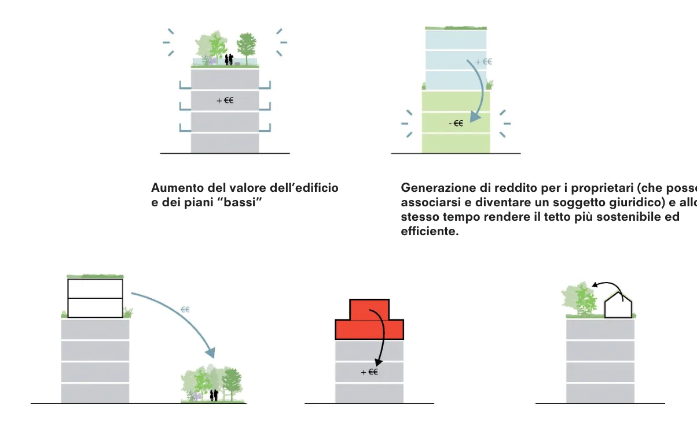
Aumento del valore dell’edificio
e dei piani “bassi”
Generazione di reddito per i proprietari (che possono
associarsi e diventare un soggetto giuridico) e allo
stesso tempo rendere il tetto più sostenibile ed
efficiente.
La sopraelevazione contribuisce alla
realizzazione di più verde da inserire a
livello strada aumentando la presenza
vegetazionale
La sopraelevazione contribuisce
all’efficientamento della parte inferiore
dell’edificio e quindi ad innalzare il
valore patrimoniale dell’immobile
La sopraelevazione contribuisce
all’aumento delle funzioni per la
comunità sul tetto (rooftop)
2) Benefici funzionali
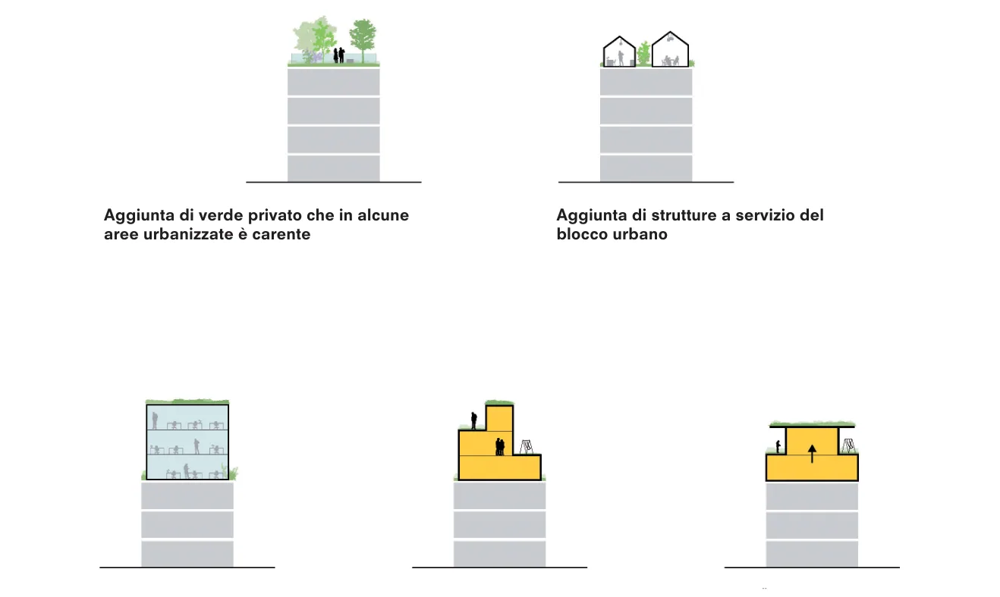
Aggiunta di verde privato che in alcune
aree urbanizzate è carente
Aggiunta di strutture a servizio del
blocco urbano
Aggiunta di altre funzioni con scopo di
sviluppare un quartiere “16 ore”
Aggiunta di nuovi tipi di “housing” a
favore di un quartiere più inclusivo
Espansione verticale di abitazioni per
trattenere le persone nel quartiere
(riducendo il bisogno delle persone di
muoversi)
Schemi a lato:
3. Possibili utilizzi del piano di copertura su diversi
tipi di edifici.
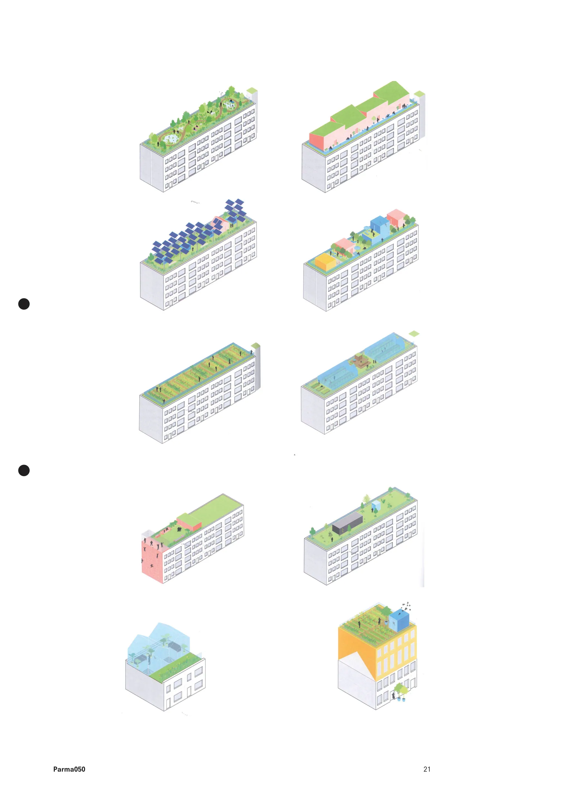
4.1.4 RIFO
“RIgenerazione urbanistica condizionata FOotprint”
Il RIFO, acronimo di RIgenerazione Urbanistica Condizionata FOotprint, è lo strumento più potente che la
strategia introduce nella disciplina ordinaria per rigenerare la città ed è stato introdotto a seguito di una serie
di valutazioni e analisi sui tessuti urbani. Esso infatti rappresenta lo strumento e il dispositivo rigenerativo con
il quale ri-costruire la città del futuro, ossia più sostenibile e resiliente.
Il RIFO rappresenta una possibilità di “SVILUPPO CONDIZIONATO”, ossia una modalità di intervento
che permette di aumentare il numero di piani e quindi di volume, ma garantisce allo stesso tempo l’aumento
di spazio permeabile all’interno del TU. Quindi in poche parole i principi fondativi del piano: densità e
compattezza vengono correlati e “progettati”.
I RIFO prevedono sempre la demo-ricostruzione e bonus incrementali espressi in “piani aggiuntivi” al
raggiungimento di determinati obiettivi prefissati, tra cui imprescindibile è la riduzione dell’impronta del
fabbricato preesistente, con recupero del suolo (aumento di superficie permeabile e quindi di suolo). Inoltre il
RIFO dovrà rispondere anche a tutti i requisiti ambientali denominati FATE.
Gli interventi RIFO si attuano su edifici non soggetti a tutela in:
•
tessuti residenziali o misti da qualificare del Capoluogo (R2C), ad esclusione degli immobili del
quartiere Cittadella e cosi come evidenziati nella rappresentazione cartografica “Schema di
Assetto strategico delle trasformazioni ordinarie”;
•
in maniera prioritaria nei tessuti urbani per le politiche di riuso e rigenerazione urbana (tessuti
urbani misti e tessuti urbani realizzati anteriormente al 1974 con rapporto di copertura superiore al
40% dell’isolato.
Lo scopo della LUR è soprattutto orientato alla limitazione dell’uso del suolo, pertanto i RIFO concedono
bonus incrementali, in termini di [1]un piano aggiuntivo o [2]due o massimo [3] tre piani aggiuntivi, a fronte
del riduzione percentuale e progressiva del footprint; detto anche impronta o “Superficie Coperta” (SCO).
La riduzione del footprint è la condizione caratterizzante il bonus, che consente lo sviluppo urbano all’interno
del TU del capoluogo secondo il concetto di compattezza (indicato nel DECODICO). Quindi il principio che
va valutato è legato a un diverso tipo di densificazione, “autoregolativo” e propedeutico all’aumento della
superficie permeabile. (Il guadagno di suolo come nuovo parametro qualitativo).
Gli interventi di RIgenerazione urbanistica condizionata FOotprint (RIFO), costituiscono una ulteriore forma
di incentivazione per la rigenerazione dei tessuti urbanizzati, definita in applicazione dei criteri di cui agli artt.
7 (comma 4, lettere a e b) e 8 della LUR.
I RIFO, nascono da una analisi dei tessuti, avvenuta a partire da uno studio incrociato di elaborati
prodotti nel Quadro Conoscitivo e Diagnostico, che ha portato all’individuazione di elementi utili a definire la
disponibilità alla trasformazione degli insediamenti all’interno del TU del capoluogo. Analisi che caratterizza
la città attraverso:
•
un medio-alto elevato rapporto di superficie coperta/densità (occupazione di suolo dell’edificato);
•
una contestuale bassa intensità urbana (cioè la quantità di costruito, ossia l’indice di
sfruttamento);
•
un’altezza media degli edifici di soli 2,5 piani (capoluogo e frazioni) mentre per il capoluogo è di
3,07 piani.
Il PUG punta ad invertire i rapporti di cui al comma precedente (copertura/intensità/numero di piani)
per rigenerare nel senso auspicato dalla LUR, cioè rigenerare il costruito in modo sostenibile, rispettando i
quattro criteri della qualità urbana (DECODICO):
•
Densità: intesa come mq. di superficie costruita
•
Compattezza: grado di occupazione del suolo
•
Diversità: in termini funzionali della città
•
Connettività: il rapporto fra spazio aperto (privato e pubblico) e spazio costruito. La cessione
gratuita al Comune di parte del lotto che consenta una maggiore connettività nell’isolato o
comparto specifico e con le aree circostanti (ad esempio: per realizzare percorso pedonale
o ciclabile o porticato), o aumentare la sezione stradale. Da prevedere nel masterplan che si
presenta al Comune.
Gli interventi RIFO si attuano con “intervento edilizio diretto”, tramite “permesso di costruire
convenzionato”, accompagnato da un “masterplan” che renda espliciti le connessioni e gli impatti sull’isolato.
Gli interventi previa demolizione e ricostruzione dell’edificio/edifici interessati, dovranno avvenire nel
rispetto delle altezze massime stabilite dalla Disciplina.
Rimane ferma per i RIFO la necessaria presenza - in aggiunta alla riduzione della SCO (Superficie Coperta
o footprint o impronta) anche dei requisiti che seguono, cioè nonché almeno 4 (quattro) dei SEGUENTI criteri
prestazionali a favore della qualità ecologica-ambientale denominati “FATE” e che costituiscono insieme ai
DECODICO i parametri di riferimento fondamentali per ottenere “bonus” volumetrici:
•
tetto verde, cioè la soluzione alternativa alle coperture tradizionali per ottenere vantaggi in termini
di comfort, efficienza energetica e sostenibilità ambientale
•
raccolta acque piovane per il riuso delle stesse;
•
installazione dei pannelli fotovoltaici sulle intere superfici di copertura, congiuntamente al tetto
verde;
•
coibentazione dell’involucro edilizio per diminuire la dispersione del calore ed aumentare la
performance energetica complessiva, con il raggiungimento almeno della Classe A4.
La domanda di Permesso di costruire Convenzionato deve essere accompagnato da un “masterplan” che
renda espliciti gli apporti qualitativi e generali dell’intervento, nonchè le connessioni e gli impatti sull’isolato
di riferimento.
Gli interventi “RIFO” e “ROOFTOP” sono possibili previa la positiva valutazione di “ammissibilità
urbanistica” degli interventi in relazione a tutti gli specifici FATTORI DI IMPATTO, che di seguito si indicano:
•
impatti sulla mobilità e sul traffico;
•
impatto sull’ambiente sonoro;
•
impatto dei rifiuti;
•
rischio inquinamento da rifiuti;
•
rete e impianti idrici, energetici e del gas;
•
riduzione del rischio sismico e micro zona sismica;
•
inquinamento elettromagnetico generato dalla presenza di antenne e impianti per la telefonia;
mobile e a servizio di nuove tecnologie di trasmissione strumentali.
Di seguito, nella pagina seguente, alcuni diagrammi esplicativi di applicazione del RIFO. Con la demo-
ricostruzione e il restringimento del “footprint” o impronta viene aggiunto un piano. Ad ogni restringimento
e quindi ad ogni aggiunta progressiva viene richiesto l’applicazione dei DECODICO e FATE. Quindi la
ricostruzione dell’edificio oltre a rispondere in maniera adeguata a “standard” prestazionali, sarà in grado
di occupare meno suolo e quindi ottenere più superficie permeabile e/o verde. Quindi, la strategia consente
attraverso l’applicazione del DECODICO di poter “guadagnare suolo” e in sintesi sviluppare l’intervento
a favore della qualità urbana (misurata e progettata dai 4 criteri individuati dalla strategia), ai quali si
aggiungono quelli per la qualità ecologico-ambientale “FATE”.
Schemi esemplificativi di applicazione RIFO:
10 m
10 m
Il RIFO si applica in alcune parti del tessuto
R2C (in via prioritaria nel tessuto identificato
nella strategia ante 1974 e con IC maggiore di
35%), attraverso la demo-ricostruzione. Con
il restringimento progressivo del “footprint” o
impronta dell’edificio vengono aggiunti massimo
3 piani (si veda a tal proposito la definizione
di piano). Ad ogni restringimento corrisponde
l’aggiunta di un piano. Ad ogni aggiunta
progressiva viene richiesta l’applicazione dei
“FATE” (ossia requisiti ecologico ambientali
costituenti e fondamentali) a partire
dall’efficientamento o coibentazione adeguata,
il tetto verde, il fotovoltaico e recupero/riciclo
delle acque. La ricostruzione dell’edificio oltre
a rispondere in maniera adeguata a “standard”
prestazionali, sarà in grado di occupare meno
suolo e quindi ottenere più superficie permeabile
e/o verde. Quindi, la strategia rigenerativa RIFO,
applica i 4 parametri/elementi urbani costituenti
“DECODICO”che consentono di “guadagnare
suolo”, e allo stesso tempo la possibilità di
aumentarne la “diversità” funzionale (cambiando
ad esempio la destinazione d’uso del piano terra).
Come evidenziato nel caso di aggregazione tra
lotti (sotto) o nella pagina a lato si viene a definire
una fascia da cedere ad uso pubblico. Nel caso
sotto come potenziale parcheggio pubblico
e a fianco come spazio porticato pubblico
connettendo in modo diretto l’edificio allo spazio
pubblico e/o strada nell’eventualità fosse richiesto
o necessario.
10 m
10 m
5 m
5 m
Primo piano: 100 mq
IC=25%
Lotto 20x20m= 400 mq
Piano Terra: 100 mq
IC=25%
Edificio su 2 piani
St= 200 mq. IC=25%
Condizione esistente
9,48 m
9,48 m
9,48
9,48
Restringimento 10%
Piano Terra: 90 mq
IC=22,5%
Edificio su 3 piani
IC=22,5%; St: 270 mq
1 piano extra
Primo piano : 90 mq
IC=22,5%
9 m
9 m
Qualora ci fossero piani con dimensioni diverse, si
prende in considerazione la media tra le superfici
dei vari piani per stabilire la dimensione del piano
aggiuntivo. Non vengono computati i piani interrati
o sopraterra con funzioni diverse da abitazione,
tipo garage e/o cantine etc.
9 m
9 m
Edificio su 4 piani
IC=20,25%; St: 320 mq
1 piano extra
Restringimento 10%
Piano Terra: 81 mq
IC=20,25%
Va inoltre ricordato che il RIFO consente di
aggiungere massimo 3 piani. A questo va
considerato il limite di altezza stabilito dalla
Disciplina.
Piano primo: 81 mq
IC=20,25%
8,53 m
Limite H. max 10,50 m
8,53
m
Restringimento 10%
Piano Terra: 72,76 mq
IC=18,19%
Edificio su 3 piani
IC=18,19%; St. = 363,8 mq
3 piani extra
Primo piano: 72,76 mq
IC=18,19%
Isolato urbano
Ipotesi di accorpamento 4 lotti e
applicazione RIFO
4 Lotti da 400 mq (20x20) = 1.600 mq.
4 edifici da 200 mq l’uno (100 mqx2 piani)=
800 mq
IC= 25%
Nell’eventualità ci fossero edifici con altezze
diverse si calcolerebbe la media tra tutti i
piani. A quel punto si stabilisce la condizione
di partenza per l’aggiunta incrementale di
piani.
Edifici esistenti su 2 piani
IC=25%
4 Lotti= 1.600 mq.
4 edifici da 200 mq l’uno= 800 mq
IC= 25%
riduzione footprint 10%
400x0,1= 360 mq
360 x 3 piani = 1.080 mq
IC con riduzione= 22,5%
Fascia pubblica (in grigio, corrisponde
al parametro connettività - parcheggi
pubblici - di DECODICO, che viene
ceduta al Comune)
Edificio su 3 piani
IC=22,5%
1 piano extra
4 Lotti= 1.600 mq.
4 edifici da 200 mq l’uno= 800 mq
IC= 25%
riduzione footprint 10%
360x0,1= 324 mq
324 x 4 piani = 1.296 mq
IC con riduzione= 20,25%
Edificio su 4 piani
IC=20,25%
2 piani extra
4 Lotti= 1.600 mq.
4 edifici da 200 mq l’uno= 800 mq
IC= 25%
riduzione footprint 10%
324x0,1= 291,6 mq
291,6 x 5 piani = 1.458 mq
IC con riduzione= 18,225%
Nel caso specifico esiste per l’area
oggetto di RIFO un limite di H max di
12,50 m. che ne limita lo sviluppo.
Limite H. max 13.50 m
Edificio su 5 piani
IC=18,225%
3 piani extra
Piano Terra
IC=45%
Piano Terra
IC=45%
Primo piano
IC=45%
Primo piano
Sagoma=50%
Edificio su 2 piani
IC=45%
Edificio su 2 piani
IC=45% Sagoma 50%
Piano Terra
IC=40%
Piano Terra
IC=40%
Edificio su 3 piani
IC=40%
1 piano extra
Edificio su 3 piani+PT
IC=40% Sagoma 45%
1 piano extra
Primo piano
IC=40%
Primo piano
Sagoma=45%
Piano Terra
IC=35%
Piano Terra
IC=35%
Primo piano
IC=35%
Primo piano
Sagoma=40%
Edificio su 3 piani
IC=40%
2 piani extra
Edificio su 4 piani+PT
IC=40% Sagoma 40%
2 piani extra
H. max 13,50 m
Piano Terra
IC=30%
Piano Terra
IC=30%
Edificio su 5 piani +PT
IC=40% Sagoma 35%
3 piani extra
Primo piano
IC=30%
Primo piano
Sagoma=35%
Edificio su 3 piani
IC=40%
3 piani extra
H. media 3 piani
Edifici esistenti su 2,3,4 piani
IC=25%
Edificio su 4 piani
IC=22,5%
1 piano extra
Edificio su 5 piani
IC=20,25%
2 piani extra
Limite H. max 13.50 m
Edificio su 6 piani
IC=18,225%
3 piani extra
In rosso gli Isolati all’interno del TU con
superficie coperta (SCO) maggiore del > 35%.
Isolati urbani definiti da densità (superficie
costruita su isolato urbano), Compattezza (Indice
di copertura) e numero di piani
LEGENDA
Intensità (% totale)
Densità (% totale)
No di piani medi (% totale)
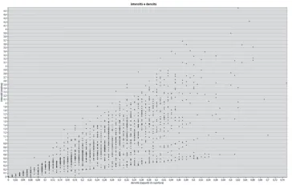
Immagine sopra: Diagramma di ripartizione tra
superficie costruita e isolato di appartenenza,
e densità intesa come occupazione di suolo,
ossia, superficie coperta dagli edifici.
4.1.5 Spazi e progetti strategici
Geografie trasformative
Il secondo livello definito dalla strategia consiste nell’individuazione di spazi (“aree strategiche”)
e progetti strategici¹. Essi s’innestano nella dimensione spaziale su cui è costruito il piano: il PUG ne è
essenzialmente una loro spazializzazione. L’obiettivo è creare le condizioni spaziali per il miglioramento della
qualità ecologico-ambientale della città e farlo in modo correlato alle trasformazioni della “città privata”
promuovendo in generale uno sviluppo più sostenibile della città e del territorio. I “luoghi” e i “progetti
strategici” sono il risultato di un approccio selettivo secondo cui il territorio non è considerato in modo
omogeneo. Infatti la strategia per raggiungere gli obiettivi viene rappresentata a livello spaziale (scenari
e schemi di assetto); lo stesso vale per gli obiettivi (vision). La strategia non considera la città in modo
omogeneo, non sarebbe realistico, piuttosto, seleziona alcuni luoghi strategici per il futuro di Parma per le loro
caratteristiche specifiche, per le loro morfologie, densità, relazioni funzionali e con la città pubblica. All’interno
di questi spazi, tutte le azioni e i progetti devono essere considerati strategici. Il primo “grado” o livello della
strategia è rappresentato dalla “Disciplina” del Piano, essa rappresenta infatti, la strategia applicata alla
trasformazione ordinaria della città e ne diventa la sua manifestazione sotto forma di regole trasformative
(DN).
1. L’individuazione è l’esito di un percoso
cognitivo e di conoscenze che hanno permesso
la definizione di ambiti con valori strategici per
l’intera città e collettività.
2. Il piano PR050 indica attraverso delle
schede redatte all’interno dell’Atlante le
azioni prioritarie e le strategie da considerare
per sviluppare la città secondo parametri e
principi qualitativi e quantitativi. Inoltre con
l’ausilio di linee guida ne definisce gli elemeti
fondamentali a livello programmatico, funzioni
rilevanti e indirizzi normativi; in alcuni casi indica
le misure prioritarie.
3. Le “Azioni” rivestono un ruolo fondamentale
nell’attivare le strategie e quindi realizzare la
“Vision”. Esse incrociano le diverse politiche
della città: del welfare (cultura, salute, sport,
educazione), dell’urbanistica (riqualificazione
e ri-generazione urbana), dei lavori pubblici
(spazio pubblico, infrastrutture stradali,
energetiche...), dell’ambiente e del paesaggio
(manutenzione, salvaguardia…). Le Azioni
attivano la strategia, accompagnano la
realizzazione della Visione e sono alla base
della riuscita del piano.
Gli “spazi strategici” individuati ridefiniscono la struttura urbana di Parma e del suo territorio2. Allo
stesso tempo evidenziano i luoghi cruciali del mutamento. Essi individuano le parti della città che per la
loro importanza possono agire strategicamente per il raggiungimento degli obiettivi e quindi concorrere
alla realizzazione della “Vision”. Questi spazi possono portare nuove dinamiche ed infrastrutture al servizio
della città nel suo insieme. Il grande “fuso” che attraversa il territorio parmense definito dall’autostrada/
AV e dalla via Emilia a sud, evidenzia un ambito di tipo territoriale in cui vi è la più grande concentrazione di
servizi e funzioni alla scala locale e metropolitana. La “spina” urbana tra la via Emilia e la ferrovia, all’interno
del grande fuso, individua la sequenza più rilevante di spazi centrali della città, alcuni di questi collocati
lungo la via Emilia, altri alla ferrovia. Essa rappresenta il luogo di maggiore concentrazione di servizi e
luoghi rappresentativi, ma anche una grande opportunità per ridefinire i rapporti tra i vari sistemi urbani
che la compongono, a partire dal torrente Parma. Il “Green Network”, parte della “Green Infrastructure”, è
costituito dall’insieme di parchi urbani e territoriali, esistenti o da sviluppare, che costituiscono il supporto
ecologico del territorio e di un modo di abitare contemporaneo. Il “Green Ring” ridefinisce i caratteri
dell’anello infrastrutturale intorno alla città consolidata come grande spazio pubblico lineare e delle aree ad
esso adiacenti: da barriera a nuovo elemento di connessione. Il nuovo spazio pubblico “verde-blu” definito
dal segmento dell’alveo del torrente Parma racchiuso all’interno dei viali, punto di contatto fra la città e
gli spazi dell’acqua. La parte di città al di sotto della via Emilia, invece, sarà da “riconnettere” attraverso
la ristrutturazione della mobilità pubblica e “dolce” con l’inserimento di nuove ciclovie in connessione a
“epicentri verdi” e ad una rete di centri civici e di servizio da sviluppare, collocati in ogni quartiere. Seguendo
la logica definita dal piano, gli spazi strategici non sono il risultato lineare delle immagini (obiettivi) e delle
figure (strategie) ma è la risultante di una loro interpolazione. Essi rappresentano considerazioni parallele,
sostenuti dai temi che emergono in una relazione reciproca. Le “figure” allo stesso modo sono alimentate
dalle caratteristiche fisiche dei diversi spazi e dalla loro disponibilità a contribuire a una strategia urbana
di trasformazione. All’interno degli spazi strategici si collocano i progetti strategici, definiti come azioni e
interventi “ad alta priorità”. A questi si affiancano progetti strategici che sono anch’essi riconducibili a una
politica di rinnovamento urbano, intesa nel senso più complesso del termine: trasformazioni puntuali, in
grado di innescare meccanismi maggiori di cambiamento, a livello spaziale, sociale ed economico. Anche per
questo non tutti i “progetti strategici” sono anche “aree strategiche”.
4. Sono immagini di un futuro possibile, le
cui parziali sovrapposizioni costringono a
scegliere le azioni per una politica della città e
del territorio. Insieme questi schemi evocano
la necessità di costruire narrazioni per il futuro
della città, ancorate a “frame” tematici capaci
di esplicitare alcuni aspetti in base ai quali
alcune condizioni possono o non possono
realizzarsi.
5. La VALSAT, con l’ausilio delle tabelle tecnico-
valutative predisposte sarà in grado di definire
i caratteri prestazionali dell’intervento. Questo
permetterà quindi di capire se i criteri qualitativi
introdotti dal progetto di trasformazione
saranno in grado di raggiungere gli obiettivi
prefissati in ogni tessuto e/o ambito di
riferimento.
Le aree strategiche definiscono ambiti territoriali specifici e fondamentali per la realizzazione della Vision
(ovvero il raggiungimento degli obiettivi) e sono definiti da temi comuni e specifici a ciascuno spazio. Il loro
carattere trasversale rispetto alle “figure” (scenari)4 li rende luoghi sinergici, da indagare con maggiore
precisione e da immaginare come operazioni complesse di trasformazione urbana. All’interno di ciascuna
area strategica potranno essere riconosciuti diversi progetti, vale a dire aree nelle quali è possibile
individuare gli attori coinvolti, fissare le linee programmatiche principali e morfologiche strutturanti, i tempi
della realizzazione. Questi progetti godono spesso di grande visibilità e per questo devono essere concepiti
come interventi esemplari, prototipici che avranno un ruolo trainante nella costruzione della Parma del XXI
secolo.
Fra i progetti strategici che il piano indica, alcuni rivestono un ruolo più d’impatto rispetto ad altri come
ad esempio il sistema di nuove “piazze verdi” e “spazi pubblici innovativi”, il “Parma Eco District”, il “Bosco
Orbitale” e il “Green Ring”, per citarne alcuni. Essi diventano occasioni per sperimentare il progetto come
“produttore di nuovi contenuti” e per innescare meccanismi di trasformazione e riappropriazione dei luoghi
da parte dei cittadini di Parma, dei suoi utenti e visitatori.
Infine, oltre ai principali dispositivi “progettanti” del piano sopra richiamati (VISION e SCENARI), nel
Piano Urbanistico Generale di Parma troviamo anche la presenza di tre schemi di ASSETTO STRATEGICO.
Questi ultimi, sono stati definiti per visualizzare e rendere operativa la strategia, applicata ai diversi
tessuti urbani che compongono il TU, relativamente alle trasformazioni che riferiscono direttamente alla
cosiddetta “disciplina straordinaria”, ossia quella governata dagli accordi operativi (AO). Gli schemi
di assetto, identificano le condizioni secondo le quali si definiscono i diversi interventi: isolando alcuni
aspetti e tematiche tra loro connesse, permettono di interrogarsi su come e dove le trasformazioni possono
svilupparsi e allo stesso tempo, poterne misurare gli effetti prodotti 5. Gli schemi di assetto si collocano nel
solco di queste riflessioni e al contempo “supportano” la costruzione degli obiettivi prefissati in modo che
la prefigurazione di proposte progettuali diventi ancora più forte. Le immagini, che vengono illustrate di
seguito, spingono le condizioni (e i condizionamenti) verso ipotesi di sviluppo della città, ma percorribili solo
attraverso l’esplicitazione degli elementi qualitativi che insieme concorrono al raggiungimento degli obiettivi
definiti dal piano ed evocati dalla legge 24/17. L’innovazione del PUG di Parma è in parte riconducibile al
tema dell’immagine come strumento di progetto e non solo di decodificazione spaziale di strutture normative.
Viene ribaltato il rapporto per il quale è “l’immagine” a strutturare le regole e non viceversa. Detto ciò sarà
fondamentale che l’apparato strategico nella sua interezza venga utilizzato a dovere. Di fatto è uno strumento
di negoziazione per la definizione degli AO con l’effetto di ri-costruire la città attraverso i principi qualitativi.
Gli spazi o aree strategiche, alla stregua dei progetti strategici, sono quelli dotati di carattere appunto
“strategico”, ossia, la capacità di innescare cambiamenti non solo nell’area d’influenza, ma di produrre effetti
in tutta la città. Nella loro essenza riescono quindi ad innescare processi tali da poter cambiare senso e valore
all’evoluzione stessa della città e del suo territorio.
Per questo il piano individua e indica una serie di progetti strategici, progetti pilota e progetti generici. I
progetti pilota sono legati ad una dimensione temporale che li rende essi stessi provvisori e/o sperimentali.
Generalmente essi hanno una portata e scala limitata (ma non necessariamente) e come obiettivo dichiarato è
quello di guidare delle scelte e renderle stabili. Essi possono essere di diverso tipo e ricoprire ruoli diversi. A
titolo esemplificativo un progetto pilota può essere la pedonalizzazione temporanea di una strada o il cambio
d’uso temporaneo dei piani terra di un particolare ambito o parte di città.
I progetti generici, invece, riguardano progettualità a carattere generale, di riordino e messa a sistema di
elementi per lo più alla scala del quartiere e con l’obiettivo dichiarato di elevarne la qualità. Infrastrutture,
edifici e spazi pubblici, che necessitano per ragioni diverse, di intervento e manutenzione, volte a ripristinare
il loro aspetto estetico e di ruolo nell’area di riferimento; ad esempio lo sviluppo e/o valorizzazione di itinerari
turistico-ambientali, o il restauro di un edificio o una porzione di esso.
IL CONTRIBUTO STRATEGICO DELLE AREE DI TRASFORMAZIONE
Le aree strategiche di trasformazione individuate, per essere valorizzate, dovrebbero, attraverso la
manifestazione di interesse essere in grado di generare un intervento di carattere unitario (con l’ausilio di
un masterplan anche per stralci funzionali) e che in modo diverso e diversificato trovino soluzioni ai principi
fondativi urbani e ambientali denominati “DECODICO” e “FATE” e allo stesso tempo riescano ad attuare
le strategie e le relative azioni indicate in ogni scheda della quarta sezione dell’atlante “Geografie della
trasformazione strategica”.
I Criteri per l’attuazione degli interventi contenuti nelle schede della quarta sezione riguardanti le
“Geografie della trasformazione strategica” alla voce: 3) Disposizioni urbanistiche ed Azioni, individuano le
modalità di intervento, del fabbisogno delle aree per attrezzature pubbliche e di uso pubblico e/o generale e
le modalità di reperimento, criteri che dovranno indirizzare l’attività progettuale in tutti gli ambiti.
Tuttavia, è proprio negli ambiti strategici che l’apporto di nuovi servizi potrà configurare livelli di eccellenza
comunali e sovracomunali, mentre nei rimanenti ambiti si potrà contare su un apporto più localistico e a
livello di quartiere. Le aree strategiche costituiscono pertanto un elemento di primo ordine, una risorsa
irrinunciabile per tutta la città, anche per la loro elevata estensione e per la loro localizzazione nodale rispetto
alla conformazione territoriale del sistema urbano. Il carattere strategico di questi ambiti diventa l’occasione
per definire i servizi che concorrono ad affermarne il ruolo di polo attrattore nel contesto di scala vasta e
territoriale e qualificano, attraverso attrezzature di eccellenza, i servizi e la attività esistenti. La eventuale
rilocalizzazione negli ambiti di trasformazione di alcune funzioni come ad esempio gli incongrui produttivi,
liberano risorse territoriali o immobiliari nella città consolidata, che potranno essere disponibili per la
riqualificazione di nuovi servizi, incrementando la qualità e la vivibilità dei luoghi e generando nuove polarità
urbane. L’attività svolta prima dai tavoli di lavoro e poi da quelli tecnici hanno rappresentato un processo di
“messa a punto” dei criteri d’intervento.
Un altro sostanziale apporto alla “città pubblica” è rappresentato dall’applicazione di premialità nelle
aree strategiche. I Criteri d’intervento propongono un sistema premiale negli ambiti strategici costituito
da incentivi volumetrici a fronte di una rispondenza ancora più forte rispetto ai 4+4 parametri costituenti
“DECODICO” e “FATE” (e che permeano tutta la strategia trasformativa della città anche in regime ordinario),
ad un incremento aggiuntivo di servizi, rispetto a quanto dovuto in relazione ai pesi insediativi generati
dalle funzioni proposte. La misura dell’incentivo dovrà essere relazionata al valore delle opere aggiuntive
previste dal progetto e dovrà essere parametrato al maggior utile economico per il proponente conseguito
dall’applicazione dell’incentivo stesso. I processi negoziali dovranno stabilire il rapporto economico tra premi
volumetrici e opere aggiuntive; i contenuti dell’accordo operativo dovranno precisare la descrizione delle
opere, il loro valore nonché gli impegni per realizzarle. Si potranno pertanto perseguire obiettivi di qualità
urbana e sostenibilità ambientale, coniugati con la sostenibilità economica delle trasformazioni stesse.
Nelle pagine seguenti viene riportata una sintesi tabellare degli scenari (ST.SC.3.0 - macrostrategie e
Azioni), delle azioni e delle progettualità specifiche di ogni scenario tali da poter supportare la lettura delle
schede seguenti riferite sia alle aree strategiche di trasformazione che ai progetti strategici.
4.1.6 Gli scenari e l’atlante
Attrattività, resilienza e competitività del territorio
Il Quadro Conoscitivo (QC) porta alla strategia una serie d’immagini di un territorio poliedrico,
caratterizzato da una economica dinamica ed oggetto di importanti trasformazioni. La Strategia del Piano
si pone quindi l’obiettivo di sviluppare la struttura insediativa esistente, recuperando, anche in chiave
identitaria, il rapporto, con il territorio rurale e naturale che lo circonda. Gli scenari definiscono 7 macro-
strategie le quali vengono supportate e attivate da una serie di Azioni alcune a carattere specifico e di
indirizzo e generale. Di seguito vengono riportate delle sintesi riguardanti i 7 scenari.
- Scenario 1 - Parma Alta Capacità: sviluppo del sistema della mobilità sostenibile con conseguente
riorganizzazione della città pubblica (zone 30 e 20) e ridefinizione dello spazio per automobile. Lo sviluppo
sostenibile del sistema della mobilità, è stato declinato nella duplice accezione di favorire una maggiore
sostenibilità dell’attuale mobilità pubblica e privata, sia di rendere più sostenibili i possibili cambiamenti
che interesseranno il territorio di Parma con opere strategiche a carattere sovralocale come la via Emilia
bis, la TiBRE, Cispadana, Pontremolese, l’Alta Velocità Ferroviaria e l’aeroporto, devono comportare alta
compatibilità attraverso interventi di rafforzamento delle aree verdi in senso generale e come integrazione
alle previste opere di mitigazione. Lo scenario “alta capacità” identifica inoltre tre linee strutturali nord-sud,
est-ovest e un collegamento dalla stazione ferroviaria all’area Fiere. Esse insieme al “Green Ring”, il Semi-ring
e la valorizzazione della tangenziale nord costituiscono l’assetto infrastrutturale futuro della città di Parma. A
queste si aggiungono interventi sulle consolari favorendo lo scambio mezzo in ingresso alla città e la mobilità
dolce alla scala urbana e territoriale.
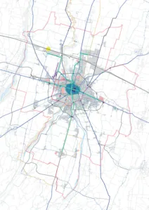
- Scenario 2 - Parma città produttiva: La strategia per lo sviluppo delle attività “produttive”
congiuntamente a nuove forme dell’abitare favorisce insediamenti misti o della “mixitè” con ricadute positive
su aspetti sociali, economici oltre che funzionali. L’incremento della sostenibilità è favorito da strategie legate
ad usi flessibili che a loro volta comportano il miglioramento dell’accessibilità alle aree considerate idonee
ad ospitare nuove aggregazioni tra attività produttive e l’abitare. Lo scenario veicola strategie atte alla
definizione di Parma come “città produttiva” promuovendo forme di sviluppo miste ma compatibili, finalizzate
alla rigenerazione del tessuto produttivo in vicinanza ad insediamenti urbani e favorendo forme innovative di
economie urbane. La strategia sarà supportata da una sostanziale flessibilità nei cambi di destinazione d’uso
tra le attività economiche e dal riconoscimento dell’innovazione come servizio. La necessità di sviluppare
nuove forme di produzione in contiguità al tessuto urbano va di pari passo con la necessità di definire nuovi
spazi e tipi edilizi adeguati. L’abitare e la produzione come condizioni a sviluppare della città contemporanea
e creare le condizioni per l’insediamento di nuove economie locali e globali.
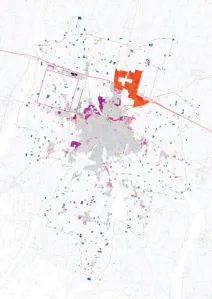
- Scenario 3 - Parma Eco-Città: Lo scenario sviluppa e incrementa le sinergie tra il territorio urbanizzato e
il territorio agricolo. Esso è posto alla base dell’elaborazione del nuovo Piano, prevedendo politiche attive di
recupero, valorizzazione e fruizione del patrimonio storico ed ambientale, ma anche attraverso precisi indirizzi
di controllo sulla localizzazione delle nuove eventuali trasformazioni all’esterno del territorio urbanizzato.
La strategia implementa l’infrastruttura verde urbana (bilancio arboreo, aree verdi, il bordo del TU come
“cintura verde” e rinverdimento degli involucri edilizi) e al contempo definisce misure di mitigazione dirette
alle emissioni, la riduzione dei consumi energetici derivanti dalla regolazione del microclima urbano e la
calmierazione dei fenomeni estremi di calore estivo, garantiti dalle aree verdi e da quelle alberate attraverso
l’evapotraspirazione, l’ombreggiamento e la creazione di brezze derivanti dallo scambio termico tra il verde
e le superfici costruite. Lo scenario “Parma ecocittà” risponde alle richieste della società contemporanea
legate ai temi della qualità, della valorizzazione ambientale, della resilienza e della capacità del sistema nel
suo complesso di mutare al cambiare delle condizioni. La strategia risponde alla capacità del territorio e della
città di produrre energia “rinnovabile” unitamente a nuove logiche per la riduzione dell’effetto isola di calore.
Parma promuove il proprio territorio come ecologicamente attivo e allo stesso tempo con la possibilità di
raggiungere gradi di autonomia e autosufficienza anche alimentare.
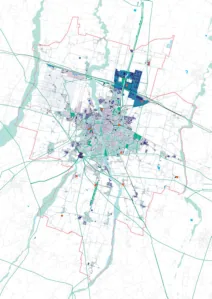
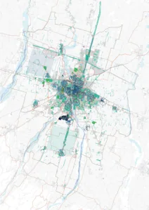
- Scenario 4 - Parma città-parco: Lo scenario sviluppa strategie riguardo la distribuzione dei servizi e
delle dotazioni attraverso la rigenerazione e il consolidamento del territorio urbanizzato in coerenza con il
contesto ambientale ed il sistema dell’abitare. Lo scenario mira a rafforzare e sostenere lo sviluppo di servizi
innovativi e aggregazioni funzionali, congiuntamente ad un adeguamento delle infrastrutture del sottosuolo,
capaci di sostenere i nuovi processi di innovazione economica e nuove forme di aggregazione tra funzioni
specifiche: spazi educativi, sport, salute e dotazioni territoriali, incentivando economie di tipo circolare. Le
forme associate dei servizi e dotazioni (verde, scuole, salute,sport) favoriscono la formazione di “clusters”
di tipo innovativo e rafforzano l’identità dei cittadini e delle imprese. Un utilizzo consapevole, razionale ed
efficiente del suolo finalizzato alla concentrazione degli insediamenti e alla valorizzazione degli spazi liberi
antropizzati contribuisce a riportare qualità sul territorio. Lo scenario sviluppa una strategia di aggregazione
tra le dotazioni e dei servizi esistenti e futuri.
- Scenario 5 - Living Parma: Lo scenario “Living Parma” declina la strategia principalmente per la
definizione di una nuova inclusività e qualità della vita a partire dal fattore di confort ambientale, economico
e sociale. Una città che è in grado di allargare l’offerta dell’abitare e dei servizi per i giovani, studenti ma
anche per le famiglie e per tutte le fasce di età. Una città che garantisce ai cittadini l’accesso a spazi per il
lavoro e infrastrutture sociali innovative. Lo scenario sviluppa strategie atte a favorire la rigenerazione del
territorio urbanizzato e allo stesso tempo a rafforzare l’identità urbana di quartiere. Lo scenario sviluppa
anche strategie a favorire dei processi di rigenerazione ambientale, e favorisce l’accesso alla casa (ERS, ERP)
promuovendo nuove forme abitative e sociali sperimentali. La strategia favorisce la rigenerazione dei tessuti
a partire dagli edifici residenziali e sviluppa azioni per incrementarne le qualità ambientali identitarie a livello
di quartiere.
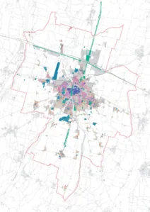
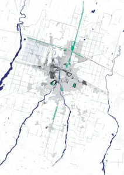
- Scenario 6 - Super-Parma: strategia della grandi aree di trasformazione, densificazione e recupero delle
aree industriali dismesse, la strategia mira a rafforzare gli insediamenti produttivi lungo l’autostrada e le
infrastrutture principali. La strategia risponde alle esigenze di attrattività e alla capacità di Parma di ampliare
l’offerta dei servizi, dell’abitabilità e in generale riguarda la possibilità di Parma di crescere contenendo il
consumo delle risorse e allo stesso tempo quello di promuovere un nuovo metabolismo urbano e territoriale.
La capacità di Parma di attivare cicli virtuosi consente di ripensare e potenziare luoghi e la sua stessa
immagine nel mondo come “piccola” città globale. La strategia prevede la possibilità di addensamento in
alcune aree strategiche capaci di generare nuove forme urbane.
- Scenario 7 - Natura espansiva: propone una strategia per “l’espansione” della Natura con il conseguente
rafforzamento dei servizi ecosistemici forniti dal territorio rurale e l’incremento delle sinergie tra territorio
urbano e rurale. Lo scenario considera il territorio rurale come ambito da valorizzare in sinergia agli
insediamenti sparsi, una sorta di urbanità molecolare che necessita di ripensare il proprio ruolo in relazione
al territorio e agli elementi che la caratterizzano. Lo scenario definisce le strategie per l’infrastruttura verde,
prevedendone l’espansione in varie forme e alle varie scale.
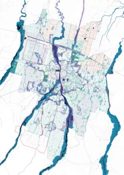
Come anticipato ogni Strategia porta con sè una serie di Azioni che non solo la definiscono e la
caratterizzano ma l’attivano e l’attuano. Le Azioni funzionano come “agenti dinamici” o “attivatori” della
strategia. Grazie all’attivazione della strategia essa concorre al raggiungimento degli obiettivi prefissati e
definiti nella Vision.
I progetti strategici rappresentano quindi la diretta emanazione delle azioni e quindi delle strategie. Essi
vengono definiti strategici proprio per il loro effetto. Esso infatti, non si riferisce solo all’ambito di riferimento
ma le ripercussioni sono da intendersi ad una scala più ampia con effetti su tutta la città; per questo vengono
definiti strategici. All’interno delle aree strategiche individuate nel Piano PR050 tutti gli interventi sono da
intendersi progetti strategici, infatti le aree strategiche definiscono gli ambiti priviligiati di trasformazione,
con effetti su tutta la città e il territorio. Alcuni dei progetti strategici agiscono indipendentemente dalle aree
strategiche individuate, come ad esempio la ciclovia territoriale Colorno-Parma-Sala Baganza, oppure il
“Bosco Orbitale”, o l’oasi della biodiversità nella cassa di espansione del Parma.
A queste progettualità il piano affianca progetti pilota e progetti specifici. I primi sono riferibili a
progettualità di carattere quasi sempre temporaneo e quindi reversibile, mentre i secondi riferiscono
a progetti alla scala locale rivolti al miglioramento di condizioni critiche riscontrate nelle valutazioni
diagnostiche.
3
4
SCENARIO
ATLANTE DEI LUOGHI E PROGETTI STRATEGICI
STRATEGIA
AZIONI
3.1
“Parma alta capacità”
3.1.1
Favorire la proliferazione di
infrastrutture “smart mobility” con
scambio mezzo, soprattutto nei
parcheggi pubblici
3.1.2
Aeroporto da sviluppare in
rapporto sinergico e attento con
la città e le polarità nuove ed
esistenti nell’intorno
3.1.3
“Smart Mobility Hub” come
nuova stazione AV integrata al
sistema Expo
3.1.4
Nuove linee strutturali TPL
(Trasporto Pubblico Locale)
3.1.5
Valorizzazione del sistema dei
viali (come Green Ring), delle
consolari e delle radiali.
3.1.6
Migliorare la funzionalità del
sistema di scambio tra strade di
rango diverso congiuntamente ad
incentivare e rafforzare l’utilizzo
dei P+R (Park & Ride) come hub
della mobilità
3.1.7
Favorire la proliferazione di zone
30 e zone 20
3.1.8
Favorire opere di mitigazione
ambientale per ridurre l’impatto
di infrastrutture stradali molto
frequentate, riabilitando gli spazi
interclusi
3.1.9
Estendere e potenziare il sistema
e la rete di TPL in riferimento alle
frazioni
3.1.10
Estendere, implementare e
gerarchizzare la rete ciclabile
urbana e territoriale, favorendo
corsie dedicate
3.1.11
Favorire la ridefinizioni dello
spazio carrabile a favore di mezzi
non inquinanti e congiuntamente
aumentarne la sicurezza e
l’accessibilità universale
3.1.12
Incentivare il trasporto pubblico
e privato elettrico, dotando
parcheggi con servizi di ricarica e
cambio mezzo e modalità.
3.1.13
Promuovere l’alta qualità
del TPL e sviluppare linee di
collegamento strutturali a livello
territoriale
Lo scenario sviluppa strategie
rivolte al riassetto delle
infrastrutture e alla mobilità
sostenibile. Un sistema di traffico
efficiente e inclusivo abbraccia
gli aspetti positivi di ciascuna
modalità, mitigandone gli effetti
negativi. La strategia aiuterà
a costruire un cambiamento
tangibile nel sistema di trasporto,
fornendo ai cittadini maggiori
opzioni di mobilità. Parma
aggiornando il proprio apparato
infrastrutturale sarà in grado
di aumentare l’accessibilità
diminuendo il carico veicolare e
quindi la possibilita di ripensare
la strada da infrastruttura di
connessione a spazio pubblico,
da barriera tra parti di città a
elemento di ricucitura. Accorciare
i tempi di spostamento a piedi o
in bicicletta, con sezioni stradali
pensate per una mobilità più
inclusiva, significa infatti ridurre
le distanze sociali verso una città
multicentrica e di prossimità
allo stesso tempo, in grado di
valorizzare i suoi quartieri e le
persone che la abitano.
4.1.1
Ridefinizione delle sezioni stradali incrementando la capacità dello
spazio stradale verso tutte le nuove forme di mobilità e al contempo la
definizione di nuovi spazi pubblici (progetto della città pubblica).
4.1.2
Potenziamento di un asse strutturante di mobilità pubblica nord-sud
(Parma Eco District - Parma North Gate - Stazione bus e ferrovia -
CAMPUS)
4.1.3
Sviluppo e potenziamento dell’asse strutturale di mobilità della via Emilia
Parma West Gate - Parma East Gate (ex-Salamini)
4.1.4
Realizzazione di un asse di mobilità veloce AV-FIERE-Aeroporto-
Mercato agroalimentare/FoodPort-Stazione ferroviaria con la
realizzazione di corsie preferenziali della mobilità dedicata.
4.1.5
Addensamento urbano (volumi e funzioni) attorno alle fermate TPL asse
nord-sud strutturale da Parma Eco Disctrict (PED)- Campus
4.1.6
Densificazione urbana (volumi e funzioni) attorno alle fermate TPL asse
est-ovest strutturale, via Emilia (S. Prospero-S.Lazzaro)
4.1.7
Densificazione urbana (volumi e funzioni) attorno alle fermate TPL asse
diagonale strutturale (Stazione ferroviaria-Aeroporto-Fiere)
4.1.8
Progetto “Green Ring”: ridefinizione della sezione stradale e
introduzione di nuove alberature nell’anello dei viali che circoscrive
il centro storico definendo un nuovo spazio pubblico attraverso
l’eliminazione delle superfici a parcheggio, introducendo nuovi spazi di
socialità e nuovi spazi per la mobilità dolce.
4.1.9
Progetto “Semi-Ring”: definizione di un nuovo collegamento che
attraversa l’arco sud del tessuto urbano collegando diversi segmenti
viabilistici in cui ridefinire la sezione stradale, offrendo priorità agli spazi
ciclo-pedonali dei quartieri attraversati da intersezione via Mantova a via
Cremonese.
4.1.10
Progetto delle isole 30: definizione di aree della città (in integrazione con
il PUMS vigente) in cui attuare prioritariamente “zone 30” nella viabilità
ordinaria. In queste aree l’intervento sul codice della strada introduce
la possibilità di disegnare una strategia sulla strada da ridefinirsi come
nuovo spazio pubblico secondo la logica della “minimum grid” attuabile
su tutto il territorio comunale.
4.1.11
Progetto delle “isole 20”: definizione di aree all’interno del Centro
Storico come spazio in cui attuare zone con viabilità limite dei 20 km/h
4.1.12
Progetto di progressiva pedonalizzazione delle aree più centrali del
Centro Storico intorno a P. Garibaldi (Castrum romano).
4.1.13
Progetto di nodi d’interscambio modale in corrispondenza delle
intersezioni tra strade e viabilità di rango differente.
4.1.14
Progetto della rete ciclabile: incremento dei percorsi ciclabili sull’intero
territorio comunale creando una vera e propria infrastruttura ramificata e
capillare in modo da servire efficacemente tutti i cittadini.
4.1.15
Progetto sovralocale ciclovia di area vasta: Reggia di Colorno- Parma
Pilotta-Parco Ducale - Rocca di Sala Baganza.
4.1.16
Progetto di potenziamento dell’hub aeroportuale migliorandone
l’infrastruttura, i servizi, il collegamento con la città attraverso
l’introduzione di collegamenti viabilistici e nuove linee di TPL soprattutto
con l’area Fiere.
4.1.17
Progetto di progressiva diffusione in tutta la città, specialmente in
prossimità delle aree a parcheggio di stazione di ricarica elettrica e
diffusione in modo capillare di stazioni di sistemi di stallo e punti di
ricarica per veicoli e biciclette elettriche.
4.1.18
Progetto della nuova stazione “AV - Smart Mobility Hub” in prossimità
del sistema fieristico e connessione con TPL strutturale.
4.1.19
Progettualità delle opere infrastrutturali previste dalla pianificazione
vigente e sovraordinata.
3
4
SCENARIO
ATLANTE DEI LUOGHI E PROGETTI STRATEGICI
STRATEGIA
AZIONI
3.2
“Parma città produttiva”
3.2.1
Favorire processi di mixitè
con articolazione funzionale e
sperimentare nuove forme di
“working & living”
3.2.2
Favorie la rifunzionalizzazione di
edifici obsoleti
3.2.3
Favorire la piccola produzione in
aree urbane
3.2.4
Sostenere i processi di economia
circolare e cicli virtuosi
3.2.5
Favorire l’insediamento di aziende
innovative e promuovere centri
dell’innovazione
3.2.6
Favorire l’insediamento diffuso di
attività economiche potenziando
le aggregazioni funzionali
innovative
3.2.7
Implementare le funzioni
insediate contribuendo al loro
rafforzamento promuovendo
interventi di mitigazione e
desigillazione
3.2.8
Favorire mix funzionali e
tipologici in prossimità dei tessuti
residenziali
3.2.9
Favorire una logistica urbana
sostenibile
3.2.10
Favorire e sperimentare nuove
forme di riuso temporaneo e
gestione delle attività
produttive e commerciali
3.2.11
Favorire flessibilità burocratiche
per sviluppo di dispositivi a favore
dell’ambiente e all’efficientamento
degli edifici produttivi e
commerciali.
Lo scenario promuove
strategie atte a favorire lo
sviluppo di Parma come “città
produttiva”, incentivando
forme di sviluppo sostenibile,
finalizzate alla rigenerazione
del tessuto produttivo e alla
produzione di forme innovative
di economie urbane. La
strategia sarà supportata da
una sostanziale flessibilità nei
cambi di destinazione d’uso
tra le attività economiche e dal
riconoscimento dell’innovazione
come servizio. La necessità
di sviluppare nuove forme di
produzione va di pari passo con
la necessità di costruire nuovi
spazi adeguati. L’abitare e la
produzione come condizioni della
città contemporanea. Il processo
di interazione tra economie
locali e globali, macro e micro
strategie, ripensare e stimolare la
produzione all’interno della città,
può aprire a nuove opportunità di
combinazioni, interazioni sociali
e urbanità. La strategia concorre
agli obiettivi di resilienza ed
attrattività.
4.2.1
Progetto area SPIP come “Parma Eco District” (PED) distretto
produttivo d’eccellenza dell’industria parmigiana.
4.2.2
Progetto FoodPort: riconversione dell’area compresa tra Strada dei
mercati, Strada Cornocchio e Tangenziale Nord in un nuovo “cluster”
innovativo per l’industria alimentare (rinnovo del mercato agro
alimentare)
4.2.3
Progetto di valorizzazione ed estensione di tutte quelle aree a forte
“mixitè” funzionale presenti in città verso una trasformazione in quartieri
“vibranti” in cui la prossimità e/o l’integrazione fra la dimensione
residenziale e la dimensione lavorativa siano generatori di qualità
urbana.
4.2.4
Estensione dell’area SPIP incentivando l’innovazione e la sperimentazione
di nuove forme produttive, adeguando le infrastrutture viarie e di sosta.
4.2.5
Incentivare la produzione agricola e animale secondo criteri di sostenibilità
e innovazione dei cicli di economia circolare. (produzione di bio-gas da
scarti animali)
4.2.6
Rigenerazione urbana mirata ad una crescente diffusione di riuso e
utilizzo di spazi (anche in forme temporanee) per nuove economie
dell’industria creativa e della cultura.
4.2.7
Definire un sistema di spazi pubblici connessi fra loro che connettanno i
principali poli culturali della città. (Spazio alla Cultura)
4.2.8
Incentivare l’utilizzo dei piani terra per attività commerciali, potenziando
e completando i fronti urbani commerciali.
4.2.9
Favorire una capillarizzazione dei servizi commerciali nella città in ottica
di promozione del multicentrismo.
4.2.10
Produzioni in serra e lo sviluppo di nuove forme di agricoltura
favorendo l’insediamento di “green port” e strutture autosufficienti
energeticamente.
3
4
SCENARIO
ATLANTE DEI LUOGHI E PROGETTI STRATEGICI
STRATEGIA
AZIONI
3.3
“Parma Eco-città”
3.3.1
Desigillazione, deimpermeabiliz-
zazione, demineralizzazione dei
suoli impermeabili e antropizzati
3.3.2
Favorire processi di regolazione
e mitigazione dell’effetto “isola di
calore”
3.3.3
Introduzione di misure finalizzate
all’adattamento climatico degli
edifici
3.3.4
Mitigare l’esposizione agli
inquinanti, anche acustici, e a
ridurre i rischi antropici
3.3.5
Promuovere e incentivare diverse
forme di efficientamento
energetico
3.3.6
Rendere accessibili i servizi
energetici a basso impatto
ambientale
3.3.7
Sviluppo di reti di distribuzione
locale di energia elettrica da fonti
rinnovabil
3.3.8
Riuso, riciclo e stoccaggio dei
materiali da costruzione e di
scavo incentivando l’uso in loco
dei materiali derivanti da eventuali
demolizioni.
3.3.9
Favorire il riciclo e la diminuzione
di rifiuti
3.3.10
Favorire lo sviluppo dei
sottoservizi tra cui banda larga
e disporre nuovi sistemi per la
ricarica elettrica dei mezzi di
trasporto
Lo scenario “Parma ecocittà”
risponde alle richieste della
società contemporanea legate
ai temi della qualità, della
valorizzazione ambientale, della
resilienza e della capacità del
sistema nel suo complesso
di mutare al cambiare delle
condizioni. La strategia risponde
alla capacità del territorio e
della città di essere in grado di
produrre e approvigionare energia
“rinnovabile” unitamente a nuove
logiche per la riduzione dell’effetto
isola di calore. Parma promuove
il proprio territorio come
ecologicamente attivo e allo
stesso tempo con la possibilità di
raggiungere gradi di autonomia e
autosufficienza anche alimentare.
Lo scenario guarda alla
possibilità di Parma di crescere
contenendo il più possibile il
consumo delle risorse e allo
stesso tempo di essere in
grado di promuovere un nuovo
metabolismo urbano e territoriale.
4.3.1
Progetto ”Parma Eco District”: la SPIP come Eco Distretto, ovvero
come luogo privilegiato per l’applicazione di strategie orientate
all’ecosostenibilità: tetti verdi, raccolta delle acque reflue, installazione
pannelli fotovoltaici, desigilillazione dei suoli, mobilità elettrica, centri di
produzione di energia sostenibile a servizio dell’area e della città.
4.3.2
Desigillazione delle aree a parcheggio: le aree impermeabili delle
superfici a parcheggio si configurano come aree privilegiate per
l’intervento pubblico di desigillazione dei suoli.
4.3.3
Piantumazione di alberi ad alto fusto nelle aree a maggior rischio “isola
di calore” ad eccezione del centro strorico.
4.3.4
Installazione di alberature mobili/temporanee nelle aree del centro
storico (promuovendo il progetto“vivaio mobile”)
4.3.5
Favorire la raccolta delle acque piovane nello spazio pubblico attraverso
“giardini della pioggia” e riutilizzabili per usi irrigui.
4.3.6
Riconversione degli impianti di produzione energetica verso l’utilizzo di
fonti rinnovabili o comunque attraverso un processo di “diversificazione”.
4.3.7
Progetto in cui viene prevista l’istallazione di impianti fotovoltaici in
aree “residuali” comprese fra le infrastrutture: in particolar modo tra la
linea ferroviaria TAV e l’autostrada del Sole A1, all’interno degli svincoli
autostradali e in prossimità delle aree degradate lungo la carreggiata.
4.3.8
Sviluppo in città dell’infrastruttura delle acqua con aree e spazi pubblici
da utilizzare per l’invarianza idraulica.
4.3.9
Progetto delle coperture dei corpi edilizi: le superfici dei tetti si
trasformano in superfici verdi e per il recupero delle acque piovane e
come nuovi elementi di efficientamento del sistema edificato.
4.3.10
Progetto di suolo connesso alla costruzione della nuova città con
particolare riguardo ai suoli antropizzati
4.3.11
Riconversione e diversificazione delle reti energetiche dei servizi e dei
sottoservizi più efficienti e più sostenibili.
4.3.12
Favorire la formazione di “comunità energetiche” ovvero favorire
associazioni tra cittadini, attività commerciali, pubbliche amministrazioni
locali o piccole e medie imprese che decidono di unire le proprie
forze per dotarsi di uno o più impianti condivisi per la produzione e
l’autoconsumo di energia da fonti rinnovabili.
SCENARIO
ATLANTE DEI LUOGHI E PROGETTI STRATEGICI
STRATEGIA
AZIONI
3.4
“Parma Città Parco”
3.4.1
Garantire la diffusione di una rete
equilibrata di attrezzature e servizi
3.4.2
Implementare programmi funzionali
insediati
3.4.3
Implementare la rete dei sotto
servizi potenziando le
infrastrutture digitali
3.4.4
Favorire il ridimensionamento e
miglioramento delle infrastrutture
sotterranee congiuntamente ad
interventi di trasformazione edilizia
3.4.5
Favorire l’aggregazione funzionale
per la realizzazione di cluster
funzionali innovativi tra: scuole,
parchi, sport, salute
3.4.6
Qualificazione e ridefinizione delle
dotazioni, esistenti e proposte.
3.4.7
Le scuole come centri di quartiere
3.4.8
Promuovere e favorire la
proliferazione di infrastrutture
sociali innovative - nuovi centri
civici
3.4.9
Favorire la riqualificazione e la
realizzazione delle dotazioni
territoriali
3.4.10
Supportare la diffusione degli
spazi della cultura anche in
forme temporanee e strutture
miste
3.4.11
Potenziare il sistema sanitario
diffuso e di cura alla persona
3.4.12
Sviluppo di percorsi ciclo
pedonali, sentieri e ippovie alla
scala territoriale
Lo scenario mira a rafforzare
la crescita e qualificazione dei
servizi e delle reti tecnologiche
sostenendo il trend relativo alla
crescita demografica. Promuove
aggregazioni tra i servizi e
dotazioni, congiuntamente ad un
adeguamento delle infrastrutture
del sottosuolo. La strategia
sostiene i nuovi processi di
innovazione e nuove forme di
working and living, incentivando
le economie a carattere circolare.
Le forme associate e aggregate
dei servizi e dotazioni (verde,
scuole, salute,sport) favoriscono
la formazione di cluster di tipo
innovativo e rafforzano l’identità
delle aree, dei quartieri, dei
cittadini e delle imprese. Un
utilizzo consapevole, razionale ed
efficiente del suolo finalizzato alla
concentrazione degli insediamenti
e alla valorizzazione degli spazi
liberi antropizzati contribuisce a
riportare qualità sul territorio. Lo
scenario sviluppa una strategia
rivolta alla valorizzazione del
patrimonio identitario, culturale e
paesaggistico, delle dotazioni e
dei servizi esistenti e futuri.
4.4.1
Aumentare la dotazione dei servizi nelle aree maggiormente scoperte.
4.4.2
Aumentare la dotazione scolastica nelle aree maggiormente scoperte.
4.4.3
Sviluppo dei parchi urbani esistenti e nuovi come centralità urbane, con
relativo incremento della qualità ambientale, volumetrica e funzionale
lungo le aree perimetrali.
4.4.4
Nuovo parco della Tangenziale (a ovest della ex-Salamini)
4.4.5
Sviluppo di aree in vicinanza ai servizi esistenti e di progetto con
possibili addensamenti funzionali e volumetrici.
4.4.6
Nuovo Parco della Biodiversità.
4.4.7
Nuovo Parco della Memoria
4.4.8
Nuovo Parco della Rimembranza (quartiere Molinetto)
4.4.9
Nuovi centri civici in ogni quartiere e scuole innovative, con usi flessibili
in orari diversificati e accessibili a tutti.
4.4.10
Sviluppo del Parco agricolo sud e valorizzazione del tratto di strada
della “Massese” tra il campus e Corcagnano con alberature e pista
ciclabile.
4.4.11
Valorizzazione e implementazione degli spazi pubblici e dotazioni verdi
dei centri minori attraverso cinture verdi di filtro tra sistemi (TU-TR)
4.4.12
L’ospedale Maggiore come quartiere. Sviluppo della struttura
ospedaliera come quartiere innovativo favorendo collegamenti e
attraversamenti con la città e favorire l’integrazione di funzioni a partire
dai bordi urbani prospicenti l’area ospedaliera.
4.4.13
Sviluppo del cluster sportivo quartiere Montanara in sinergia al “cuneo
verde” lungo le sponde dei torrenti Baganza e Parma.
3
4
SCENARIO
ATLANTE DEI LUOGHI E PROGETTI STRATEGICI
STRATEGIA
AZIONI
3.5
“Living Parma”
3.5.1
Favorire i processi di rigenerazione
del patrimonio edilizio, di riuso e
rifunzionalizzazione
3.5.2
Favorire l’aumento di offerta
abitativa sociale innovativa ERS
3.5.3
Sviluppo del Distretto Centrale
ossia, capace di definire il Centro
Storico in una entità urbana
dinamica legata a forme abitative,
di servizi, di produzione culturale
e sociale innovative
3.5.4
Favorire spazi pubblici innovativi
con funzioni infrastrutturali
3.5.5
Favorire l’efficientamento e il
recupero degli edifici e dei suoli
antropizzati
3.5.6
Qualificare gli spazi e le
attrezzature
3.5.7
Completamento delle cortine
edilizie, e valorizzazione degli
“ensamble” o interventi unitari
3.5.8
Favorire misure di miglioramento
dell’involucro edilizio con
particolare riguardo alle aree
comprese nel CS (Centro Storico)
3.5.9
Coinvolgere la cittadinanza nel
processo decisionale con appositi
incontri e attraverso un processo
partecipativo
3.5.10
Favorire l’abitabilità del centro
storico anche a carattere
temporaneo
3.5.11
Preservazione e valorizzazione
degli edifici e del patrimonio
d’interesse storico
architettonico e culturale
testimoniale
3.5.12
Favorire la rigenerazione
attraverso “densificazione
condizionata” da parametrare
al restringimento dell’impronta
dell’edificio.
Lo scenario “Living Parma”
declina la strategia principalmente
rivolta alla rigenerazione urbana
in tutte le sue manifestazioni.
La definizione di inclusività e
qualità della vita a partire dal
fattore di confort ambientale ,
economico e sociale. Una città
che è in grado di allargare l’offerta
dell’abitare e dei servizi per i
giovani, studenti ma anche per le
famiglie. Una città che garantisce
ai cittadini l’accesso a spazi per
il lavoro e infrastrutture sociali
innovativi. Parma città pubblica
e dei servizi. Scenario orientato
al riuso, rifunzionalizzazione e
alla rigenerazione del territorio
urbanizzato favorendo lo sviluppo
dell’identità urbana di quartiere.
La strategia sviluppa azioni
specifiche tali da promuovere
incremento quantitativo e
qualitativo degli spazi pubblici e
infrastrutture sociali innovative.
La strategia quindi tende a
sviluppare azioni tali da apportare
un miglioramento sensibile
del benessere ambientale e
risponde allo stesso tempo ad
un incremento della resilienza
del sistema abitativo rispetto
ai fenomeni di cambiamento
climatico e agli eventi sismici.
4.5.1
Rigenerazione comparti di edilizia popolare
4.5.2
Rigenerazione “Rooftop” e densificazione sui tetti
4.5.3
Rafforzare la connessione tra Pilotta e parco Ducale
4.5.4
Nuovo spazio pubblico da inserire nell’area denominata “Parma South
Gate” in corrispondenza del campus come spazio identitario con servizi
integrati.
4.5.5
Infoltimento e sostituzione dei filari di alberi in ambito urbano lungo
strade con sezioni adeguate
4.5.6
Incremento delle dotazioni complessive di ERS attraverso interventi di
trasformazione in aree strategiche
4.5.7
Realizzazione di sistemi di drenaggio sostenibile e implemetazione degli
spazi pubblici e “piazze verdi” con raccolta e stoccaggio delle acque
piovane in ogni quartiere
4.5.8
Parco lineare verde “Ex-pontremolese” da associare a progetti di
rigenerazione urbana
SCENARIO
ATLANTE DEI LUOGHI E PROGETTI STRATEGICI
STRATEGIA
AZIONI
3.6
“Super Parma”
3.6.1
Sviluppare e definire il ruolo delle
nuove porte di accesso alla città
3.6.2
Completamento delle parti urbane
non finite
3.6.3
Favorire processi di densificazione
a favore dello sviluppo della città
multicentrica
3.6.4
Favorire lo sviluppo della città
centripeta attraverso aggregazioni
e cluster funzionali
3.6.5
Sperimentare nuove forme di
“working & living”
3.6.6
Favorire la diffusione di sistema
di servizi e dotazioni alla scala del
quartiere
3.6.7
Predisporre e costruire una rete
infrastrutturazione adeguata per
ospitare nuove necessità
3.6.8
Adeguamento della rete digitale di
nuova generazione
3.6.9
Sviluppo di attività produttive
innovative nel fuso est tra ferrovia
e via Emilia
3.6.10
Potenziare expo in connessione
con AV (eventuale) e l’area che
scorre lungo l’autostrada lato sud
3.6.11
Rigenerare lo stadio Tardini come
epicentro multifunzionale integrato
alla città
La strategia risponde alle
esigenze di sviluppo sostenibile
e quindi alla capacità di Parma
di crescere ampliando l’offerta
abitativa implementando
strategie di densificazione in aree
specifiche e allo stesso tempo
essere in grado di promuovere
azioni di qualificazione di
dotazioni e servizi esistenti e
introducendone di nuovi. In
generale la stategia promuove il
concetto di città “multicentrica”
alle diverse scale, trasformando
i poli urbani esistenti da sistemi
monofunzionali in sistemi evoluti
di “clusters” ovvero in sistemi
in grado di sviluppare nuove
urbanità polifunzionali integrate e
innovative. La capacità di Parma
di attivare cicli virtuosi consente
di ripensare e potenziare i luoghi
strategici e veicolare l’immagine
di Parma nel mondo come piccola
città globale.
Lo scenario vede Parma in grado
nei prossimi 30 anni di competere
alle diverse scale, quindi in grado
di diventare “più grande ma più
piccola”, riducendo la superficie
di TU e quindi la propria impronta
urbana complessiva.
4.6.1
Sviluppo della “Superquadra” come area strategica di sperimentazione
legata a processi d’interazione tra agricoltura, natura, paesaggio ed
economie circolari.
4.6.2
Progetto di un nuovo cluster multifunzionale nell’ex-scalo ferroviario
lungo via Reggio
4.6.3
Nuova “Porta Nord” all’ingresso autostrada e contestuale riassetto
dello svincolo autostradale
4.6.4
Progetto della “Porta est” (ex-Salamini)
4.6.5
Progetto di un polo sportivo e attrezzature collettive
4.6.6
Progetto della nuova “Porta sud” dell’area campus
4.6.7
Progetto area “ex-scalo ferroviario” viale A. Fratti come “cluster
multifunzionale” con particolare attenzione al possibile insediamento
di “Eco startup” come caratterizzazione del comparto e a nuove
connessioni con la parte nord via Palermo al di là del rilevato ferroviario
4.6.8
Sviluppo dell’area ex-Eridania come cluster multifunzionale “human
smart neighborhood”, ossia un quartiere intelligente con attenzione alla
valorizzazione della “scala” civica dell’area a partire dal polo scolastico
a nord del Parco.
3
4
SCENARIO
ATLANTE DEI LUOGHI E PROGETTI STRATEGICI
STRATEGIA
AZIONI
3.7
“Natura Espansiva”
3.7.1
Salvaguardare ed implementare la
biodiversità
3.7.2
Sviluppare la matrice ecosistemica
valorizzando la centuriazione
3.7.3
Potenziare l’infrastruttura verde
urbana e a livello di quartiere
3.7.4
Sviluppare e costruire la “green
infrastructure” a livello urbano e
territoriale
3.7.5
Migliorare la qualità delle acque di
falda e quelle superficiali
3.7.6
Limitare e contenere i rischi dovuti
per cause naturali
3.7.7
Supportare la proliferazione di
parchi e piazze verdi in ambito
urbano ed extra urbano
3.7.8
Sviluppare in ambito urbano
una nuova infrastruttura blu ed
ecologicamente attiva
3.7.9
Sviluppare e favorive pratiche
sperimentali di agricolura
estensiva
3.7.10
valorizzazione e qualificazione dei
parchi territoriali
3.1.11
Favorire l’espansione delle aree
naturalistiche protette
3.1.12
Favorire la trasformazione
delle cave in habitat dal valore
ecosistemico attivo
Lo scenario Natura espansiva
mira a sviluppare una strategia
atta alla formazione di una rete
ecologica più forte, e allo stesso
tempo una struttura urbana più
leggibile. La strategia sottesa allo
scenario ipotizza l’espansione
delle aree protette, delle aree
biologicamente di valore e delle
aree boschive fino a lambire o
intersecare le aree edificate, i
corridoi infrastrutturali e le aree
sotto utilizzate. Viene proposto
uno spostamento dal concetto di
“natura” a quello di “infrastruttura
ecologica”.
La strategia quindi mira a
sviluppare le condizioni per un
miglioramento delle componenti
ambientali.
4.7.1
Progetto delle “oasi della biodiversità” riferite alle casse di espansione
esistenti e di progetto
4.7.2
Progetto “Green ring”
4.7.3
Progetto del Bordo tra TU e TR come Parco attrezzato e “Bosco
Orbitale”
4.7.4
Sviluppo del Parco Territoriale Naviglio (da Colorno a Parma)
4.7.5
Progetto e sviluppo di un “Bioparco” (interno alla superquadra)
4.7.6
Progetto di piantumazione “vialare”, arbusti e alberature, lungo le tracce
esistenti della centuriazione presenti nella campagna parmense
4.7.8
Progetto e sviluppo del parco centrale nel “Parma Eco District” e
relativa trasformazione dell’area produttiva in APEA (Area Produttiva
Ecologicamente Attrezzata)
4.7.9
Sviluppo e progetto dei parchi individuati nel piano PR050 e relativa
implementazione dei parchi esistenti in termini qualitativi e di prestazioni
ambientali
4.7.10
Parco “Verde-Blu”: il Torrente Parma, come corridoio ecologico e di
biodiversità
4.0 Introduzione
4.1 Strategia operativa
4.2 Schemi di assetto strategico
4.3 Strategie locali
4.4 Geografie della Trasformazione Strategica
4.5 Progetti Strategici
4.2 Strategie operative: schemi di assetto strategico
Struttura, trasformazioni e correlazioni
La strategia per sua natura permea tutte le componenti che definiscono il PUG - PR050 e prende forma
operativa nei 3 elaborati denominati rispettivamente: 1 - Schema di assetto strategico strutturale; 2 - Schema
di assetto strategico delle trasformazioni; 3 - Schema di assetto strategico delle correlazioni e dei servizi. La
strategia viene a sua volta recepita nella disciplina ordinaria attraverso apposita tavola denominata “Schema
di assetto strategico delle trasformazioni ordinarie” nella quale vengono visualizzate le aree, gli ambiti in cui
la disciplina si articola per favorire le trasformazioni rigenerative che contribuiscano in modo determinante
allo sviluppo della strategia e quindi al raggiungimento degli obiettivi del Piano. I tre schemi sono da
intendersi una scomposizione tripartita di un unica cartografia. Questo facilita e semplifica la presa di visione
di quali siano gli elementi strutturali, trasformativi e correlati dell’assetto strategico complessivo dellla città e
del territorio.
Lo schema strutturale individua l’assetto della città e del territorio in cui si riconosce la matrice ambientale
e il carattere multicentrico e intenso del sistema urbano futuro. Lo schema delle trasformazioni e delle
correlazioni definiscono l’assetto e le relazioni tra le trasformazioni complesse e la costruzione delle dotazioni
territoriali e della città pubblica.
Gli Accordi operativi (AO) o i Piani attuativi di iniziativa pubblica (PAIP), di cui all’art. 38 della LR 24/2017,
attuano le strategie e azioni del Piano stabilendo il progetto urbano degli interventi da attuare e la disciplina
di dettaglio degli stessi relativamente a usi ammissibili, parametri edilizi, modalità di attuazione e alla
quantità di dotazioni territoriali, infrastrutture e servizi pubblici da realizzare o riqualificare. Ad essi compete
l’attribuzione di diritti edificatori. Sono il dispositivo attraverso il quale canalizzare il contributo degli operatori
a favore della costruzione della città pubblica.
La Valsat riferita agli AO, a partire dalla verifica del rispetto delle condizioni di sostenibilità definite in ogni
Azione del Piano, dimostra la sostenibilità del progetto urbano e indica le eventuali misure di compensazione
e di riequilibrio ambientale e territoriale e le dotazioni ecologiche e ambientali.
La strategia per quanto concerne gli interventi diffusi (ossia gi Accordi Operativi Extra) mira ad ottenere
un miglioramento della città pubblica e privata attraverso bonus incrementali correlati a un miglioramento
dell’edificio o della zona su cui insiste (anche attraverso la maggiore connettività) attivando gli stessi principi
trasformativi individuati con i RIFO ossia l’applicazione del DECODICO e FATE. In regime ordinario i RIFO
(con limite massimo di 3 piani) saranno più efficaci se considerano aggregazioni tra lotti confinanti in modo
da favorire una rigenerazione di carattere più urbano che edilizio, con il risultato di sviluppare i fronti in modo
unitario e definire cortine edilizie modulate, con rispetto delle altezze massime presenti nell’isolato medesimo
o nell’immediato intorno e attribuite dal piano.
La verifica della capacità edificatoria e del carico insediativo di un’area appartenente ad un’area di
trasformazione, addensamento e sostituzione urbanistica è da effettuarsi calcolando la differenza fra la
capacità edificatoria complessiva risultante dall’applicazione dei principi di edificabilità indicati nella
disciplina di riferimento all’intero ambito d’intervento e quella relativa alle costruzioni esistenti che insistono
sullo stesso areale. La capacità edificatoria viene attribuita a ciascuna area considerando le dimensioni del
lotto e delle costruzioni esistenti. Il carico insediativo va individuato sempre nel masterpaln e deve essere
calcolato attraverso i parametri individuati1.
1. Il piano PR050 favorisce il superamento
degli “indici” assumendo come parametri
urbanistico-edilizi i seguenti:
1) Densità: intesa come mq di costruito;
2) Compattezza: (riduzione impronta,
permeabilità, per promuovere maggior qualità
urbana in contrasto ai cambiamenti climatici);
3) Diversità: funzioni ammesse; è favorita la
mixitè funzionale (tra funzioni compatibili),
4) Dimensioni del lotto: riferita alle funzioni e
contesto (Capoluogo e frazioni) ;
5) Altezza: in numero di piani, che riferita ai
tessuti definiscono il carico insediativo;
6) Reperimento posti auto pertinenziali
(all’interno delle trasformazioni per ovviare
al fatto che in alcune parti della città nelle
strade non vi è molta disponibilità per cui
questo fattore incide sulla qualità dello spazio
pubblico);
7) Realizzazione/cessione/contributo di
dotazioni territoriali (il contributo alla città
pubblica riferito alle dotazioni di quartiere).
Ogni intervento edilizio deve produrre in modo
diretto le dotazioni attraverso contributo che
consente all’amministrazione di realizzare
una serie di interventi di miglioramento sulla
città pubblica. Il PUG all’interno delle norme
individua la costituzione di un FONDO
collegato ad appositi capitoli di bilancio dove
possono essere collocati questi proventi.
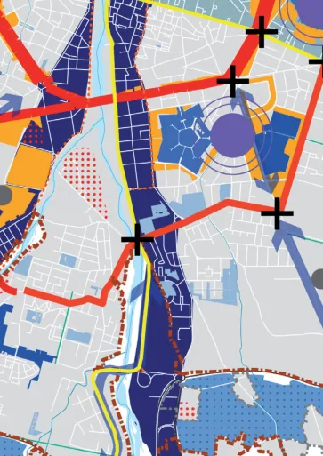
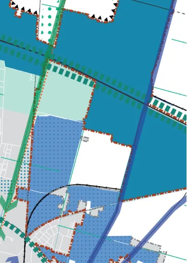
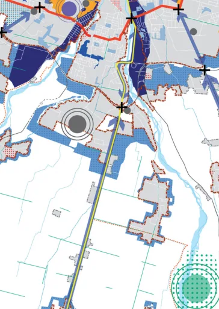
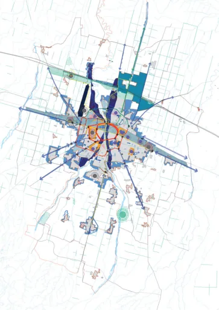
progetto fondativo del PUG. Intorno
ad esso è visibile la “buffer” (anello
verde) lungo il bordo, margine urba-
nizzato. Il reticolo infrastrutturale alla
scala territoriale e urbana definisce la
maglia degli attraversamenti. su que-
sto vengono evidenziate le tre direttri-
ci (SPIP-CAMPUS, S.PANCRAZIO-S.
1. SCHEMA DI ASSETTO
STRATEGICO STRUTTURALE
Lo schema strutturale evidenzia gli
elementi strutturanti la città di Parma
e il suo territorio. A partire dalla ma-
trice ambientale idrica della centuria-
zione e dei torrenti viene evidenziato il
TU (Territorio Urbanizzato), ovvero, il
PROSPERO, e la STAZIONE-AERO-
PORTO-EXPO-AV) che insieme al
semi-ring e al “Green Ring” costrui-
scono le dorsali strutturali.
Sono evidenziati inoltre i fusi lungo
l’autostrada con l’Ecodistrict e quello
tra la ferrovia e la via Emilia. Allo stes-
so modo vengono definite le “spine”
urbane nord-sud, lungo le sponde
est ed ovest del torrente Parma. Lo
spazio della superquadra tra il fuso
ferrovia-via Emilia l’autostrada il Taro
e l’aeroporto: ambito di sperimenta-
zione agricolo ambientale, generativa
di un nuovo paesaggio ibrido.
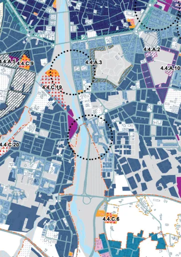
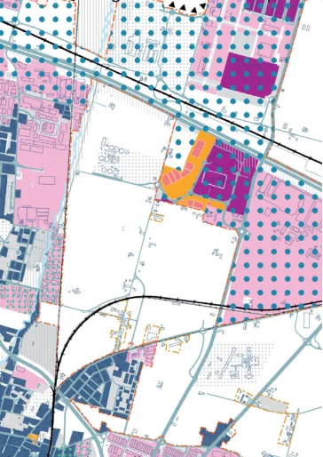
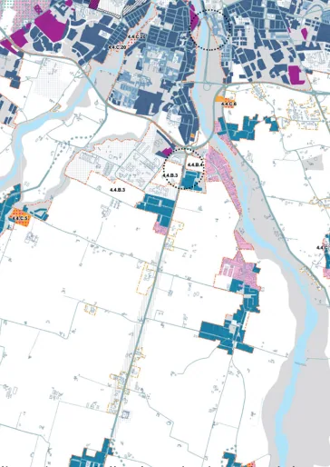
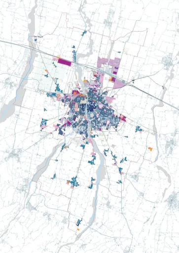
2. SCHEMA DI ASSETTO STRATE-
GICO DELLE TRASFORMAZIONI
Le trasformazioni diffuse e localizzate
dentro e fuori il TU vengono visualiz-
zate nei tessuti urbani evidenziati. La
strategia evidenzia aree di densifica-
zione, addensamento e qualificazione
Il TU viene suddiviso a partire dall’e-
voluzione della normativa antisismica.
(la spazializzazione delle tre soglie
temporali rispetto all’evoluzione delle
leggi antisismiche principali ci restitui-
sce un paesaggio urbano fragile che
necessita di interventi importanti di
ristrutturazione edilizia e in alcuni casi
urbanistica. Il paesaggio della norma-
tiva associato alla categorizzazione
dei tessuti urbani porta alla definizio-
ne di parti urbane che si prestano a
trasformazioni di diversi tipo e inten-
sità. In modo specifico tutte le aree
strategiche identificate (soggette a
trasformazioni complesse) dovranno
essere in grado di contribuire alla rea-
lizzazione delle dotazioni ecologiche
ambientali indicate. Lo stesso vale
per le aree di densificazione e adden-
samento individuate. Per la capacità
edificatoria possibile in tale aree verrà
richiesto di partecipare allo sviluppo
delle dotazioni, parchi e infrastrutture
verdi individuate in tavola 3.
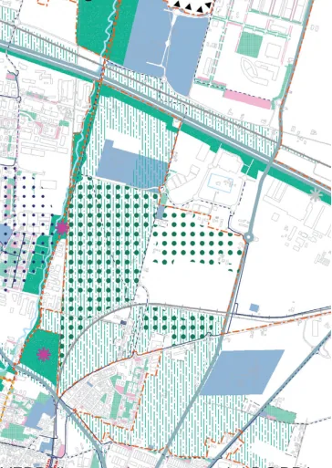
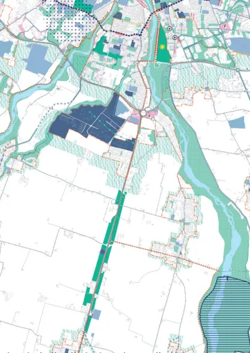
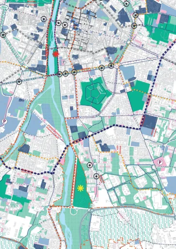
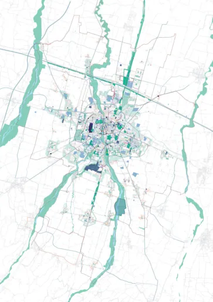
3. SCHEMA DI ASSETTO
STRATEGICO DELLE
CORRELAZIONI E SERVIZI
Lo schema mostra in maniera cor-
relata e associata allo schema delle
trasformazioni le dotazioni territoriali,
ecologiche e ambientali “complesse
e correlate” (DOTE), cioè le dotazioni
territoriali fuori comparto (cioè fuori
della aree di Trasformazione), ma che
sono veri e propri “progetti strategi-
ci” (green infrastructure, piazze verdi
etc.), che tuttavia al loro interno non
prevedono trasformazioni edilizie in
grado di finanziarli. Fanno parte di tali
dotazioni (DOTE) anche le “CINTURE
VERDI”, parte integrante dei BORDI.
A questi elementi viene evidenziato il
sistema di progettualità attinenti alla
costruzione della città pubblica alla
scala di quartiere, alla scala urbana e
quella territoriale. Di fatto, lo schema
rappresenta il “masterplan” della città
pubblica da correlare alle trasforma-
zioni della “città privata”. Lo schema
di assetto strutturale viene utilizzato
come base cartografica delle schede
delle strategie locali e in modo alter-
nato nella geografia delle trasforma-
zione strategica.
4.2.1
ST.SAS
Assetto strategico
Scala
1:75.000
Geografie delle trasformazioni
PR050
SCHEMA DI ASSETTO STRUTTURALE STRATEGICO
Descrizione generale
LEGENDA
L’estensione di Parma oggi coincide con quella del territorio segnato dai suoi sistemi ambientali: una sezione di pae-
saggio definita da un flusso continuo di acque che corre dagli appennini al Po, dal Taro all’Enza, compresa entro il
più vasto ambiente atmosferico della pianura padana e dei suoi movimenti di aria. Un territorio il cui substrato muta
da nord verso sud lungo la “linea invisibile” delle risorgive dove le acque assorbite dai suoli drenanti a ridosso degli
appennini riemergono nella bassa pianura irrigua definita dall’antico assetto della centuriazione.
La continuità ambientale negata storicamente dall’ambiente costruito, che si è sviluppato proprio su quella linea di
confine del torrente Parma, ha oggi l’occasione di essere ricucita grazie alla infrastruttura verde proposta dal piano
e alla sua messa a sistema con i parchi principali dell’area urbana e territoriale. Il sistema del verde urbano a Parma è
oggi articolato in parchi caratterizzati da una grande varietà d’usi e identità diverse, proiezioni di approcci culturali dif-
ferenti nel corso della storia. Oggi la società e i cittadini di Parma si riconoscono in un nuova concezione di parco che
oltre ad essere habitat e supporto per le sue pratiche diviene uno strumento di riequilibro tra uomo e ambiente. Il piano
si concentra sulla costruzione di infrastrutture verdi e blu differenti, connesse tra di loro, il cui obiettivo fondamentale
è quello di filtrare la tossicità prodotta dall’insediamento urbano e correlarle alla trasformazione della città privata. Il
“Bosco Orbitale”, collocato lungo il bordo del TU, sistema altamente frammentato è concepito come un filtro ambien-
tale per l’aria utilizzando specie vegetali autoctone. L’oasi territoriale in corrispondenza della cassa di espansione a
sud lungo il Parma, immerso all’interno della pianura agricola intercetta le acque purificandole attraverso un sistema
di piante acquatiche. Anche i parchi nuovi all’interno del TU, vengono concepiti come filtri ecologici che completano
la collana di identità dei parchi esistenti di Parma costituendo le invarianti ambientali per il progetto di trasformazione
di tutta la città. Lo stesso “KM verde”, del resto,definisce una barriera e filtro per mitigare gli impatti inquinanti che
arrivano dalla viabilità autostradale.
I parchi interni al TU vengono concepiti come le nuove “piazze verdi” della città di Parma. Questo sensibile slittamento
di significato libera orizzonti inediti e stabilisce rapporti tra quartieri storicamente separati tra loro. Un ambiente unita-
rio al cui interno convivono paesaggi differenti, progettati in relazione ai tessuti e ai materiali urbani che li delimitano.
Il sistema Bosco Orbitale vero filtro ecologico con il suo volume verde di alberi definisce un bordo, margine contro
cui il disegno della città si infrange definendo il significato urbano del parco. Lungo il parco orbitale quindi nuovi suoli
minerali e vegetazioni spontanee integrano il parco con il paesaggio urbano che intercettano di volta in volta diffe-
rente. A sud, l’attuale sistema frammentato del verde viene ricomposto in un mosaico di giardini urbani e nuovi servizi
pubblici in continuità e in sinergia con quelli esistenti. Nella griglia urbana una struttura di verde urbano e spazi pubblici
distribuiti strategicamente, si lega alle orditure dei quartieri adiacenti e definisce relazioni di continuità con il contesto
circostante.
Come suggerisce il nome, lo schema di assetto strategico strutturale, è stato concepito perseguendo un’ideale
trasformazione dei modelli attuali di sviluppo economico, puntando a un modello di città che pensa innanzitutto alle
condizioni ambientali e climatiche che è in grado di offrire ai cittadini, ed è una rappresentazione sintetica e ideogram-
matica in cui sono evidenziati elementi strutturali e strutturanti la futura città di Parma. Al sistema multicentrico, alla
scala urbana e territoriale, si evidenziano dei sistemi lineari lungo, e “tra”, le infrastrutture primarie di Parma: lungo l’au-
tostrada e l’alta velocità, il fuso tra la ferrovia e la via Emilia e le “spine urbane” lungo il Torrente Parma e in parte lungo
il Baganza. Questi elementi rappresentano dei sistemi urbani complessi e strategici allo stesso tempo. Insieme alle
aree e dotazioni strategiche individuate dal piano, essi ridefiniscono la struttura primaria di Parma e del suo territorio.
All’interno del TU e dei “fusi” vengono localizzati gli ambiti con relazioni di scala territoriale e carattere strategico. In
particolare viene esplicitato il sistema di multicentralità in cui attivare interventi di riassetto e di aggregazione funziona-
le, addensamento e sostituzione urbana.
Il piano propone come progettualità strategica l’integrazione tra le diverse parti che compongono la città e che defi-
niscono il TU. Il piano infatti definisce tre assi infrastrutturali di TP strutturali (SPIP-CAMPUS, San Lazzaro-Crocetta e
l’area della stazione ferroviaria e bus con la zona Fiere/AV). A queste tre direttrici strutturali si aggiunge il “semi-ring”
che dall’innesto di via Mantova con la tangenziale nord e via Cremonese con la via Emilia attraversa gran parte della
città a sud e i quartieri i quartieri di Lubiana, Cittadella, Montanara, Molinetto e San Pancrazio. Questa infrastruttura è
stata pensata come nuovo tipo di percorso riservato ai mezzi pubblici e percorsi ciclopedonali dedicati. Il sistema delle
infrastrutture definito dalle radiali, dall’autostrada e dalle ferrovie con il sistema di viali che il Piano ripensa come “ring
verde” costituiscono insieme alla “rete” ambientale della centuriazione la matrice portante sulla quale si inseriscono i
nuovi epicentri. I flussi veicolari in entrata e in uscita saranno filtrati in direzione del “ring verde” attraverso un sistema
di P+R capaci di smistare gli utenti e di sgravare il sistema infrastrutturale più interno alla città. Il complessivo rafforza-
mento infrastrutturale passa attraverso l’implementazione e l’estensione dei percorsi ciclabili e pedonali di collegamen-
to tra i diversi tessuti. L’assetto della città futura non potrà più essere totalmente dipendente da un unico “centro”,
(dal centro storico), ma tutte le varie “patch” che compongono il TU, tutti i vari “nuclei” possono e devono possedere
delle forme diversificate di autonomia, da implemetare nel tempo e sviluppare forme evolute di aggregazioni sotto for-
ma di “cluster” multifunzionali, con attività, programmi e servizi, tali da permettere maggiori scambi tra sistemi diversi,
rafforzando le relazioni sociali e l’attratività.
Viene inoltre evidenziata la “buffer” vegetazionale “Bosco Orbitale” che funge da grande parco territoriale capace
di diventare soglia tra sistemi diversi e infrastrutturare i bordi sfrangiati dei margini urbani. Viene indicato inoltre il KM
verde lungo l’autostrada e una polarità territoriale di nuova formazione in corrispondenza della cassa di espansione del
torrente Parma, che oltre alla funzione tecnica di assorbire le acque in eccesso il piano propone di espanderne le ca-
pacità come oasi naturalistica nella campagna parmense. Il piano propone come progettualità strategica l’integrazione
tra le diverse parti che compongono la città e che definiscono il TU, a partire dai quartieri formati intorno alla città di
antica formazione, ma anche dagli insediamenti sparsi nel territorio comunale e oltre. Il piano propone di rafforzare e di
estendere i percorsi ciclabili e pedonali di collegamento tra i diversi tessuti.
Ecodistrict
Fuso autostradale
Spine urbane
Fuso via Emilia-ferrovia
Territorio urbanizzato
Insediamenti sparsi
Ambiti fluviali
Casse di espansione (esistenti e in previsione)
Elementi della struttura centuriata (art.21 PTPR)
Sistema idrografico minore
Bosco orbitale e aree di mitigazione ambientale
Aree strategiche
Parti del territorio senza fattori preclusivi alle trasformazioni e
con opportunità di sviluppo insediativo (art. 35 comma 6 LUR)
Stazione ferroviarie treno ad alta velocità in previsione
Piano di sviluppo aeroportuale
Linea ferroviaria treno ad alta velocità (TAV)
Rete ferroviaria
Viabilità principale
Viabilità principale in previsione
Autostrada
Nuovo collegamento in previsione
Aree di rigenerazione dei margini urbani
Productive city
Kilometro verde e fascia di mitigazione tangenziale nord
Progetti strategici "Green ring" e "Semi ring"
Aree urbane
Ciclovia territoriale Colorno-Parma-Sala Baganza
Direttrice verde Parco del Naviglio
Direttrice in previsione via Emilia-bis
Direttrici principali e strade consolari
Direttrici strutturali del trasporto pubblico locale (TPL)
Nodi urbani
Parcheggi d'interscambio
Superquadra
Parchi di quartiere e parchi relazione
Parchi di riferimento locali
Parchi di riferimento sovralocali
Oasi della Biodiversità
Epicentri a scala territoriale
Epicentri a scala urbana
Comune di Parma (confine comunale)
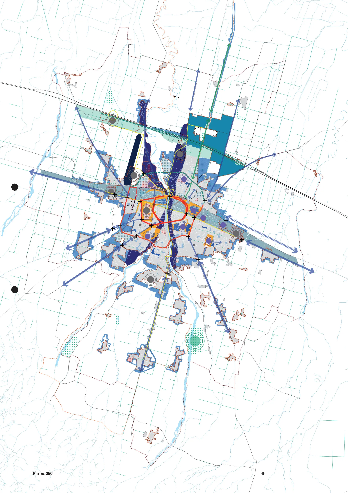
4.2.2
ST.SAS
Assetto strategico
Geografie della trasformazione
Scala
1:75.000
SCHEMA DI ASSETTO STRATEGICO DELLE TRASFORMAZIONI
PR050
Lo schema di assetto strategico delle trasformazioni esplicita la trasformabilità della città di Parma e del suo territorio
attraverso interventi complessi attivando l’Accordo Operativo la cosidetta disciplina straordinaria. Il TU individuato
nello schema di assetto strutturale viene scomposto in tessuti urbani (a tale riguardo si veda lo schema QC.2.2.5 Tes-
suti urbani e forme aperte_la città elementare) ai quali si sovrappone una serie di partizioni. Queste, definiscono ambiti
specifici di trasformazione strategica con ricadute anche nella trasformabilità ordinaria e inserite in disciplina (Tavola
D3) Il PUG di Parma - PR050 - prevede al suo interno la definizione di Aree strategiche, ognuna caratterizzata da una
propria specificità legata ad un set di azioni e strategie, e quindi, di obiettivi da perseguire al loro interno. Tale rappre-
sentazione, oltre a recuperare un ruolo strutturante diventa anche un altro modo di guardare alla città. Non è quello
della necessaria e ineludibile indagine sulle specifiche identità dei tessuti, quanto quello delle potenzialità di alcune
prospettive strategiche di valorizzazione incardinate sui valori fondativi del Piano stesso: fondamenti urbani e ambien-
tali profondi, su una natura relazionale delle azioni progettuali che ricerca l’integrazione morfologica e funzionale.
L’individuazione e descrizione di questi ambiti costituisce quindi un’operazione progettuale dal carattere strategico,
in quanto costruisce “figure” territoriali che selezionano problemi e tematiche da affrontare; il tutto in un’ottica com-
plementare rispetto ai “Tessuti urbani omogenei”, dal valore principalmente regolativo, e rimandando le indicazioni
prescrittive agli stadi più operativi del processo attuativo.
LEGENDA
ELEMENTI INSEDIATIVI
TU - Territorio Urbanizzato (art. 32 LUR)
Insediamenti sparsi
GEOGRAFIE DELLA TRASFORMAZIONE STRATEGICA
RIGENERAZIONE STRATEGICA CON INTERVENTI COMPLESSI
Interventi di rigenerazione urbana
-4.4.A1 RIMAGREEN - RIgenerazione MArgini GREEN Ring
-4.4.A2 RIMATAR - RIgenerazione MArgini stadio TARdini
-4.4.A3 RIMACI - RIgenerazione MArgini CIttadella
-4.4.A4 RIMAOS - RIgenerazione MArgini OSpedale
-4.4.A5 RIMAVIL - RIgenerazione MArgini VILletta
-4.4.A6 RIMAPON - RIgenerazione MArgini parco lineare ex PONtremolese
-4.4.A7 RIMADUC - RIgenerazione MArgini parco DUCale
RIMAP - RIgenerazione MArgini dei Parchi
-4.4.A8
RIMAP - RIgenerazione MArgini Parco ex-Eridania, Falcone Borsellino,
Parco della musica
-4.4.A9
RIMAP - RIgenerazione MArgini Parco Martini
-4.4.A10 RIMAP - RIgenerazione MArgini Parco Ferrari
-4.4.A11 RIMAP - RIgenerazione MArgini Parco della Biodiversità
Aree strategiche di nuova urbanizzazione, rigenerazione e sviluppo infrastrutturale
Parti del territorio senza fattori preclusivi alle trasformazioni e con opportunità
di sviluppo (art. 35 comma 6, LUR)
Gli elaborati “assetto strategico delle trasformazioni” e “assetto strategico delle correlazioni e servizi ” si configurano
come “immagini” da leggere in modo operativo; l’una è complementare all’altra. La sintesi strategica delle trasforma-
zioni spazializza le progettualità che saranno in grado di contribuire alla costruzione delle grandi dotazioni ecologiche
ambientali individuate dal piano e inserite nello Schema di assetto strategico delle trasformazioni e dei servizi.
-4.4.B.1 Area strategica "Nuova Pontremolese (A1 Crocetta) ERS" (Greenfield)
-4.4.B.2 Area strategica "Parma North Gate" (Greenfield)
-4.4.B.3 Area strategica "Campus Sud" e "Parma South Gate" (Greenfield)
-4.4.B.4 Area strategica "Parco attrezzato per servizi alla collettività" (Greenfield)
-4.4.B.5 Area strategica "Aeroporto Est" (Greenfield)
Aree strategiche per interventi di sviluppo e rigenerazione urbana e ambientale
-4.4.C.1 Area strategica "Ex scalo merci viale Fratti" (Brownfield)
-4.4.C.2 Area strategica "Ex Bormioli" (Brownfield)
-4.4.C.3 Area strategica "Stazione nord" (Brownfield)
-4.4.C.4 Area strategica "Ponte nord" (Greenfield)
-4.4.C.5 Area strategica "Ex Greci Gaione" (Brownfield)
-4.4.C.6 Area strategica "Ex cartiera Bonati strada Argini" (Brownfield)
-4.4.C.7 Area strategica "Ex cartiera Vigatto" (Brownfield)
-4.4.C.8 Area strategica "Ex Star Corcagnano" (Brownfield)
-4.4.C.9 Area strategica "Ex TEP Villetta" (Brownfield)
-4.4.C.10 Area strategica "Ex Salamini, denominata PEG Parma East Gate" (Brownfield)
-4.4.C.11 Area strategica Via Emilia est" (Brownfield)
-4.4.C.12 Area strategica "Ex scalo ferroviario via Reggio" (Brownfield)
-4.4.C.13 Area strategica "Ex Italgel cluster multifunzionale" (Brownfield)
-4.4.C.14 Area strategica "Casello viale delle Esposizioni" (Brownfield)
-4,4.C.15 Area strategica "Via Strobel" (Brownfield)
-4.4.C.16 Area strategica "Ex inceneritore Cornocchio" (Brownfield)
-4.4.C.17 Area strategica "Molino Soncini Porporano" (Brownfield)
-4.4.C.18 Area strategica "San Pancrazio nord" (Greenfield)
-4.4.C.19 Area strategica "Cuneo verde confluenza torrenti Parma e Baganza"
-4.4.C.20 Area strategica "Aree produttive in sponda dx e sn torrente Baganza"
-4.4.C.21 Area strategica "Ospedale Maggiore" (Brownfield)
Le aree indicate nello schema a fianco (Trasformazioni) sono deputate a contribuire al “fondo vincolato alla città pub-
blica” (FONDO), per sostenere – in alcuni casi anche in aggiunta al sostegno pubblico - le citate dotazioni territoriali
“complesse e correlate” (DOTE: tavola 3). Il Comune creando un “Fondo Vincolato alla Città Pubblica” (FONDO),
cioè lo strumento in cui confluisce l’apporto economico del privato che realizza l’intervento nelle aree di trasforma-
zione strategiche, in proporzione alla realizzazione dell’intervento, per realizzare le dotazioni territoriali complesse e
correlate (DOTE). Il Fondo è principale strumento di collaborazione del privato alla realizzazione e miglioramento della
città pubblica. Nel detto fondo confluiscono le somme per le indennità perequative e le opere pubbliche di interesse
collettivo, cioè gli importi dovuti dagli operatori che stipulano gli A. O. per le aree di Trasformazione Strategica, con
cui il privato contribuisce a realizzare dotazioni che vadano fuori dell’area di Trasformazione e siano aggiuntive alle
dotazioni territoriali necessarie all’urbanizzazione dell’area su cui interviene.
Lo Schema di Assetto delle Trasformazioni, inoltre, localizza spazialmente attraverso un linguaggio ideogrammatico e
puntuale le aree strategiche di trasformazioni dentro e fuori al TU (greenfield e brownfield) con ipotesi di erosione della
quota 3% amissibile.
La prima indicazione progettuale definita all’interno dello Schema di Assetto delle Trasformazioni è il perimetro del
Territorio Urbanizzato e degli Insediamenti Sparsi.
Lo Schema di Assetto delle Trasformazioni è connesso allo Schema di Assetto delle Correlazioni e dei Servizi, poiché
le diverse categorie di rigenerazione urbana strategica da attuare con Interventi Complessi definiti all’interno dello
Schema di Assetto delle Trasformazioni concorrono complessivamente alla realizzazione della DO.TE. (Dotazioni Terri-
toriali) contribuendo al Fondo vincolato per la costruzione della città pubblica classificata e localizzata nello Schema di
assetto delle Correlazioni e dei Servizi.
Pertanto, lo Schema di Assetto delle Trasformazioni classifica e individua spazialmente le trasformazioni decodifican-
done specifici indirizzi e criteri all’interno delle schede contenute nell’ATLANTE. Tali trasformazioni sono individuabili in
Legenda sotto la voce “RIGENERAZIONE STRATEGICA CON INTERVENTI COMPLESSI”.
Allo schema di assetto strategico delle trasformazioni viene affiancato uno schema riferito alle trasformazioni ordinarie
inserito in disciplina. Attraverso tale elaborato vengono tradotte in disciplina le aree strategiche attraverso apposite
partizioni che si sovrappongono ai tessuti omogenei individuati.
L’INDIVIDUAZIONE DELLE AREE STRATEGICHE DI TRASFORMAZIONE E I PROGETTI STRATEGICI AVVIENE ATTRA-
VERSO RAPPRESENTAZIONE IDEOGRAMMATICA, OSSIA NON INDICA UNA PERIMETRAZIONE CONFORMATIVA.
Interventi di sviluppo strategico
-4.4.D1 Areali della "Productive city"
-4.4.D2 Interventi di sviluppo "Green Tech Corridor"
-4.4.D3 Areali di addensamento lungo le direttrici strutturali del TPL
Edifici dismessi (art. 22, comma 6 LUR)
Aree dismesse (art. 22, comma 6 LUR)
PROGETTI STRATEGICI
4.5.9 Progetto strategico LA "SUPERQUADRA": IL "BIOPARCO DI PARMA"
4.5.10 Progetto strategico "SMART MOBILITY HUB" - "STAZIONE ALTA VELOCITÀ"
4.5.11 PARMA ECODISTRICT PED E IL PARCO CENTRALE
4.5.12 PARMA FOOD PORT - NUOVO MERCATO AGROALIMENTARE
TESSUTI URBANI
Tessuto storico del capoluogo
Tessuti residenziali o misti da conservare
Tessuti residenziali o misti da qualificare del capoluogo
Tessuti residenziali o misti da qualificare delle frazioni
Tessuti specializzati a destinazione prevalentemente produttiva da qualificare
Tessuti specializzati a destinazione prevalentemente
commerciale-direzionale-ricettiva da qualificare
Tessuto dei servizi urbani
ELEMENTI CARTOGRAFICI
Nuove aree verdi PUG PR050 e aree verdi periurbane da valorizzare
(SCHEMA DI ASSETTO STRATEGICO DELLE CORRELAZIONI E DEI SERVIZI)
Aree verdi esistenti e zone sportive, ricreative e culturali
Corsi d'acqua principali
Stazioni ferroviarie esistenti
Stazioni ferroviarie in previsione
Linea ferroviaria TAV
Rete ferroviaria
Nuova linea ferroviaria pontremolese
Autostrada
Viabilità principale
Viabilità principale in previsione
Rete stradale
Piano di sviluppo aeroportuale
Sistema edificato
Comune di Parma (confine comunale)
4.4.B.2
4.4.B.2
4.4.C.14
4.4.B.2
4.4.B.2
4.4.C.16
4.4.B.5
4.4.C.2
4.4.C.13
4.4.C.13
4.4.C.18
4.4.C.12
4.4.C.13
4.4.C.3
4.4.C.4
4.4.A.7
4.4.C.1
4.4.C.15
4.4.A.8
4.4.A.1
4.4.A.6
4.4.B.1
4.4.C.21
4.4.A.4
4.4.A.9
4.4.A.2
4.4.A.5
4.4.A.3
4.4.C.9
4.4.A.10
4.4.C.11
4.4.C.11
4.4.C.19
4.4.C.10
4.4.A.11
4.4.C.10
4.4.C.20
4.4.C.20
4.4.C.6
4.4.B.4
4.4.B.3
4.4.B.3
4.4.C.5
4.4.C.17
4.4.C.7
4.4.C.8
4.2.2.1
ST.SAS
Assetto strategico
Strategia Operativa
PR050
Pesi insediativi e premialità nelle aree strategiche
Uno degli obiettivi prioritari che il Piano intende perseguire è la costruzione di qualità nuove - intese in primo luogo
come qualità urbana in grado di rivalutare le dotazioni verdi, i luoghi della ricreazione, della socializzazione, dell’abitare
e del lavoro e come qualità sociale che si traduce essenzialmente in una città che funzioni e capace di promuove-
re funzioni “qualificanti”. Il Piano, in particolare la Strategia, ragiona nella prospettiva di investire sulla qualità delle
attrezzature e dei servizi, sulla qualità della vita e dell’ambiente urbano, anche mediante l’integrazione di differenti po-
tenzialità ambientali, e di tradurla in regole per la riqualificazione/rigenerazione delle aree strategiche di trasformazione
e sviluppo, quanto per i tessuti consoloditi. Per tale motivo l’Atlante, partendo dalla dis-continuità con gli strumenti
previgenti, costruisce criteri di incentivazione che rendano flessibile e trasparente il processo di pianificazione territo-
riale e urbana.
La città pubblica si realizza in modo perequato, con il contributo, anche patrimoniale, di tutti, quindi anche dei privati,
proprietari della maggior parte della città (la c.d. città privata). Una delle precondizioni per la trasformazione urbana è
la costruzione dell’“infrastruttura verde”, che sviluppa il concetto scalare che va “dal giardino al territorio”, rafforzan-
do la struttura vegetazionale ed ecosistemica della matrice ambientale definita dalla suddivisione del suolo “centuria-
to”, anche in relazione al sistema delle acque, creando una pre-condizione della crescita urbana all’interno del Territo-
rio Urbanizzato. La “città privata” contribuisce in parte alla costruzione della città pubblica, ma nel contempo accresce
anche il valore del patrimonio immobiliare privato. In una città sempre più interconnessa e simbiotica il contributo del
soggetto attuatore alla realizzazione delle grandi dotazioni territoriali fuori dal proprio comparto di trasformazione è
imposto da un approccio sistemico alla città e al territorio, in cui si devono intersecare le prestazioni offerte dalla città
pubblica e da quella privata, che proprio nel loro insieme offrono il quadro effettivo di risposta ai diversi sistemi e
alle criticità rilevate. Tali aree rispondono ai criteri e obiettivi fissati dalla Strategia per la qualità urbana ed ecologico
ambientale, come si ricava dagli schemi di assetto strategico, dai dossier “Atlante” e “Scenari” e dalle Tabelle tecnico
valutative delle “Unità Territoriali”.
Il Piano PR050 propone una necessaria correlazione tra la realizzazione della DOTE (Dotazioni territoriali fuori compar-
to) e la possibilità di trasformazione delle aree strategiche (greenfield o brownfield), secondo quanto indicato nelle
schede “Geografie delle trasformazione strategica” contenute nell’Atlante.
1. Uno degli elementi chiave dei progetti
nelle aree strategiche è senza dubbio
l’assetto funzionale inteso come quel mix di
funzioni capace di dare intensità urbana e
equilibrio, ma anche vitalità per un arco di
tempo significativo. Tali obiettivi sono stati
da perseguire ricercando, da una parte, la
corretta dislocazione innanzitutto delle funzioni
pubbliche e di interesse generale, e dall’altra, le
relazioni tra funzioni pubbliche e private nonché
tra le diverse destinazioni private.
L’Atlante per sua natura si rivolge in primo luogo agli operatori e ai committenti (pubblici e privati). In secondo luogo,
è rivolto ai progettisti, compresi i progettisti delle opere pubbliche che svolgono un ruolo determinante nel generare
la qualità urbana della città contemporanea, come anche, più in generale, a “tutti i cittadini desiderosi di partecipare
consapevolmente ai processi di trasformazione del loro ambiente di vita”. Del resto la sostenibilità quanto la “perfor-
manza” sono diventati sempre più elementi imprescindibili nelle trasformazioni che interessano anche la città costruita,
come peraltro testimonia l’attenzione normativa a questo tema presente nella LUR. La qualità ecologico-ambientale e il
corretto inserimento nel contesto urbano degli interventi non sono più considerati valori aggiunti, facoltativi, ma valori
integrati, necessari, da attribuire a tutti i progetti che incidono sull’evoluzione e sull’aspetto esteriore e prestazionale
dei luoghi. Per questo motivo ogni intervento dovrà essere in grado di rispondere in modo adeguato ai parametri DE-
CODICO e FATE, ossia, di provvedere a interventi compatti capaci di ottimizzare l’utilizzo della capacità edificatoria di
base in modo virtuoso, e provvedere ad edifici ad alta efficienza. Gli stessi parametri, diventano anche premianti in ter-
mini volumetrici se venissero raggiunti livelli prestazionali più alti, come indicato nelle tabelle predisposte nella ValSAT.
La Strategia, quindi, stabilisce a fronte di rilevanti benefici pubblici (aggiuntivi rispetto a quelli dovuti e coerenti con gli
obiettivi fissati), e livelli prestazionali ottimali, una disciplina di incentivazione. Detta incentivazione, riguarda interventi
ricompresi in piani attuativi finalizzati alla rigenerazione urbana e di iniziative di sviluppo di nuova urbanizzazione, con-
sistente nell’attribuzione di volumetrie aggiuntive determinate in funzione degli obiettivi e requisiti prestazionali di cui
sopra e ai quali se ne aggiungono altri di carattere specifico contenuti nella ValSAT e riferiti alle UT. A fronte delle pos-
sibilità offerte dalla nuova legislazione in materia di governo del territorio, sono stati approntati criteri che permettono
di perseguire gli obiettivi di qualità urbana ed ecologica-ambientale, coniugandoli con la sostenibilità economica.
Il criterio di incentivazione prevede che le proposte di Accordo Operativo delle aree strategiche (di trasformazione e di
nuovo sviluppo), possano accedere ad un incentivo volumetrico a fronte di livelli prestazionali ottimali e di rilevanti be-
nefici pubblici coerenti con le strategie, e quindi con gli obiettivi indicati nella VISION, nonchè rispetto alle priorità indi-
viduate nelle schede delle Unità territoriali. Ciò in aggiunta all’obbligo di contribuire alla DOTE attraverso il FONDO.
I valori economici e le modalità di contribuzione al FONDO:
a) possono essere indicati dal Comune, in sede di manifestazione di interesse;
b) sono precisamente individuati in sede di stipula dell’AO o PAIP, ai sensi dell’art.38 della LUR.
Va altresì ricordato che il Piano PR050 con l’introduzione di DECODICO e FATE definisce un sistema sostenibile
“auto-generativo” legato agli interventi di trasformazione. Essi contribuiscono infatti, alla nuova qualità che l’intervento
stesso produce, a partire dal “guadagno di suolo” (o restringimento progressivo dell’impronta).
In sintesi, l’Atlante costituisce il Documento di Piano che “informa” la disciplina normativa e di incentivazione. Le
proposte di intervento potranno essere valutate in sede negoziale e dovranno essere definite ed articolate negli atti
convenzionali. L’incentivo “DECODICO” per la qualità urbana e l’incentivo “FATE” per la “qualità ecologica-ambienta-
le” sono allineati e coerenti alle politiche dell’Amministrazione Comunale tra cui quella energetica, finalizzata al conte-
nimento delle emissioni nell’aria, alla produzione sinergica di energia con soluzioni progettuali innovative (promozione
dell’edilizia bioclimatica e del risparmio energetico) in aggiunta rispetto a quanto previsto dalla normativa vigente.
L’incentivo DECODICO “qualità urbana” e “FATE “qualità ecologico-ambientale” fanno riferimento ad aspetti fondan-
ti della pianificazione del PUG PR050 – descritto nel capitolo “DECODICO e FATE” nell’Atlante – e in particolare a tre
criteri di base:
1) alla compattezza e alla intensità 1, ossia la riduzione dell’impronta urbana e la capacità dello stesso intervento di
generare una densità “efficiente” sviluppando mixitè in grado di attivare e migliorare le connessioni con l’intorno; 2)
alle caratteristiche di qualità delle costruzioni in aggiunta a quanto previsto dalla normativa vigente; 3) alle specifiche
ambientali e territoriali del Comune di Parma, ossia alla disponibilità da parte del richiedente di sostenere l’utilizzo di
fonti energetiche rinnovabili per la produzione di energia elettrica attuando i principi di “Parma Carbon Neutral 2030”
e del PUG PR050.
Ciascun incentivo potrà essere concesso in misura graduale, proporzionalmente al valore economico degli impegni
convenzionali sottoscritti o all’efficacia del raggiungimento degli obiettivi indicati, fino alla percentuale massima
ammessa. Gli incentivi potranno essere applicati in aggiunta alla capacità edificatoria che sarà identificata in sede
negoziale.
Determinazione della capacità edificatoria che sarà identificata in sede negoziale
La capacità edificatoria che sarà identificata in sede negoziale di un AO in Area Strategica è calcolata come prodotto
di alcuni parametri che definiscono un coefficiente di edificabilità. Come per i lotti liberi gli areali strategici evidenziati
nello schema di assetto delle trasformazioni definiscono un poteziale edificatorio che potrà variare a seconda delle
valutazioni parametriche relative al posizionamento del lotto e della sua dimensione, dell’accessibilità alla rete del tra-
sporto pubblico, alla distanza e dalla dimensione dei servizi e dotazioni situate nelle vicinanze. Sostanzialmente viene
utilizzato il “DECODICO” per “misurare”, e poi, progettare il futuro sviluppo A questo si associa anche il parametro
della COmpatezza dell’intervento, ossia, della Superficie Coperta dall’isediamento, anche chiamata “Superficie Com-
promissibile”. La quantità minima equivalente potrà essere maggiorata potenzialmente del 30% se l’intervento fosse
rispondente in maniemra massima ai RP - Requisiti Prestazionali indicati nella VALSAT. L’adempimento degli obblighi
relativi alla realizzazione delle aree DOTE, tramite il FONDO, è precondizione per l’ottenimento degli incentivi, “qualità
urbana” (DECODICO) e “qualità ecologico-ambientale” (FATE). Tali incentivi saranno comunque esigibili solo alla
condizione che la trasformazione delle aree avvenga in modo coordinato, ossia attraverso un Masterplan che evidenzi
fasi di esecuzione a partire dalle infrastrutture pubbliche urbane ed ecologico-ambientali. Qualora fossero presenti,
all’interno delle aree, edifici di riconosciuto valore storico e testimonianza documentale della città (sia di carattere
residenziale che produttivo), l’AO ne dovrà prevedere il mantenimento e la messa in sicurezza o il riuso; una quota
aggiuntiva di edificabilità (pari al volume esistente degli stessi edifici) concorrerà alla determinazione della capacità
edificatoria che sarà identificata in sede negoziale, aggiungendosi alla stessa. Negli AO dovrà essere valutato sia il
progetto che la destinazione funzionale proposta in relazione al mantenimento del valore testimoniale dell’edificio e
definito l’eventuale volume aggiuntivo necessario per la sua rifunzionalizzazione o in alternativa le modalità di messa
in sicurezza/restauro. Il volume necessario alla rifunzionalizzazione sarà considerato aggiuntivo rispetto alla capacità
edificatoria che sarà identificata in sede negoziale, purché la funzione proposta sia riconoscibile come di interesse
pubblico e/o generale e regolata negli atti convenzionali.
Fabbisogno di aree per attrezzature pubbliche nelle aree strategiche
Per quanto riguarda la dotazione di aree per attrezzature pubbliche e di uso pubblico indotte dalle funzioni proposte
all’interno di un AO, anche e soprattutto in relazione alle dinamiche socio-economiche e alle necessità crescenti, ven-
gono considerati quelli indicati nelle rispettive schede, ossia, al punto “3) Disposizioni urbanistiche e Azioni” e quelli
dovuti così come indicati nella disciplina normativa. Insieme definiscono quindi, il nuovo palinsesto di “standards”.
Essi sono la manifestazione dell’idea qualitativa di città, gli elementi non più solo quantitativi che dovranno “conforma-
re” l’intervento di trasformazione.
Modalità perequative nelle aree strategiche di trasformazione
Ogni area di sviluppo strategico indicato come “greenfield” e “brownfield”, indicate nella tavola ST.SAS 4.2.2
“Schema di assetto strategico delle trasformazioni”, sono aree perequative dove la capacità insediativa totale è di
competenza di ogni soggetto, sia pubblico che privato, in misura percentuale alla quota di proprietà. La capacità
insediativa è determinata dal moltiplicatore edificatorio di base e dalle premialità a condizione che tutti i soggetti ne
sottoscrivano i conseguenti impegni, oppure che la maggioranza consegua la disponibilità con le modalità di legge. I
nuovi insediamenti potranno essere realizzati sulla base del migliore disegno urbanistico possibile, indipendentemente
dalla struttura della proprietà; ciascun proprietario disporrà comunque dei diritti edificatori proporzionali all’estensione
della sua proprietà e dovrà sottostare agli obblighi di cessione altrettanto proporzionali.
La sostenibilita’ ambientale per la citta’ in trasformazione
L’Atlante rappresenta il dispositivo principale del piano PR050, che traduce sul territorio le scelte strategiche urbane
e ecologico-ambientali individuate, per uno sviluppo sostenibile e compatibile con le peculiarità del territorio, nell’ot-
tica di un generale miglioramento della qualità della vita. Tali principi fanno anche parte delle linee programmatiche
dell’Amministrazione Comunale e sono parte integrante degli obiettivi del Piano PR050. Questo rende evidente il ruolo
centrale affidato alle aree strategiche di trasformazione e sviluppo, che assumono un ruolo di risignificazione del
“palinsesto” urbano. Veri e propri luoghi entro i quali promuovere e incentivare livelli qualitativi di attività, funzioni e
programmi da estendersi a tutto il territorio anche attraverso la diffusione di maggiori attenzioni ai valori naturalistici e
la creazione di reti e corridoi con funzione eco sistemica (Scenario 7 - Natura espansiva; schema di assetto strategico
delle correlazioni e dei servizi ST.SAS. 4.2.3). Lo sviluppo della città persegue gli obiettivi di sostenibilità ambientale
previsti a partire dall’articolata dimensione predisposta dal Piano PR050, una ricchezza di dotazioni che mira a perse-
guire con i programmi di trasformazione territoriale un vero e proprio risarcimento ambientale per una città fortemente
segnata da importanti infrastrutture di attraversamento, da presidi produttivi che l’hanno resa importante sotto il punto
di vista economico, ma che hanno segnato profondamente il paesaggio urbano e l’ambiente e la possibilità di fruizione
del territorio cittadino. La proposta del grande “Bosco Orbitale” intorno al TU risponde anche dal punto di vista sim-
bolico a questo obiettivo, da accompagnarsi con le altre misure individuate: qualificazioni e recuperi che aumentano le
aree a verde e servizio a disposizione dei cittadini, nuovi percorsi protetti per la mobilità dolce. Si ribadiscono pertanto
gli obiettivi generali che i programmi di trasformazione dovranno perseguire: la qualificazione (ed eventuali bonifiche
di vario tipo e genere) delle aree; la realizzazione di essenziali infrastrutture per una mobilità cittadina più sostenibile;
l’ampliamento e riqualificazione delle aree a verde pubblico; la promozione della qualità architettonica e prestaziona-
le degli edifici e la valorizzazione di aree o complessi di carattere storico e monumentale; il risparmio energetico e di
risorse ambientali per un miglioramento ambientale complessivo anche grazie a misure strutturali quali: la realizzazione
di “corridoi ecologici” di collegamento, all’interno e all’esterno della città; l’espansione di ambienti naturali e delle
alberature; l’aumento della permeabilità dei suoli con la conseguente diminuzione dell’impronta della città; il migliora-
mento del comfort degli spazi esterni.
4.2.3
ST.SAS
Assetto strategico
Geografie della trasformazione
Scala
1:75.000
PR050
SCHEMA DI ASSETTO STRATEGICO DELLE CORRELAZIONI E
DEI SERVIZI
il progetto della città pubblica, dei servizi e delle dotazioni
Rigenerare la città e le sue correlazioni
LEGENDA
Il mutamento delle città e dei bisogni della popolazione deve essere sostenuto da strumenti che facilitino - e che non
siano ostacolo - alle esigenze della popolazione. A quasi sessant’anni dall’entrata in vigore del D.L. 1444 del 1968 che
sanciva gli standard minimi (quantità di superficie per singolo cittadino), questi oggi risultano essere ancora attuali per
garantire un equilibrio equo all’interno delle città, ma allo stesso tempo passati per la mancata contemplazione di tutti i
nuovi servizi, digitali e non, che si sono creati negli ultimi anni.
DOTAZIONI TERRITORIALI CORRELATE
OTAZIONI AMBIENTALI PR050
4.5.1 Progetto strategico BOSCO ORBITALE -
Forestazione urbana e ambiti di potenziamento ecologico-ambientale
Parco Verde/Blu del Centro Storico
Parco del Naviglio
Parco Eco-District
Parco della Biodiversità
Come più volte affermato nella parte precedente, il Piano PR050 ripensa gli “standard”, da aspetti prettamente quan-
titativi, ad una dotazione che tenga maggiormente in considerazione l’aspetto qualitativo. Gli standard attuali devono
essere mantenuti ma allo stesso modo reinterpretati con la capacità di saper garantire una performance di benessere
alla comunità che abita le diverse porzioni di città. Questo è possibile attraverso le prestazioni di nuovi spazi pubblici
di qualità, ma anche spazi privati di uso pubblico. Importante sarà il ripensamento degli spazi aperti pubblici perché
concorrono alla capacità di rigenerare ecologicamente le nostre città: garanzia di salute, benessere psicofisico e di
momenti ricreativi che concorrono assieme a rendere le città più vivibili oggi e pronte in previsione delle sempre più
forti fasi di incertezza future. La scelta del Piano PR050 è quella di indirizzare le trasformazioni verso una maggiore
realizzazione di spazi verdi attrezzati, parchi urbani, piste ciclabili e aree pedonali attrezzate (con wi-fi libero), aree
sportive, aree libere e attrezzate, edifici per servizi di interesse comune nei quali possano integrarsi anche altre funzioni
di pubblico interesse. Infatti il Piano attraverso lo “schema di assetto strategico delle correlazioni e dei servizi” defi-
nisce gli interventi di rigenerazione urbana che devono assolutamente includere al proprio interno nuove tipologie di
dotazioni pubbliche, facendo in modo che esse possano essere, anno dopo anno, implementate o sostituite con altre
attrezzature di nuova concezione. Tale sviluppo deve essere più versatile e dinamico al mutamento delle esigenze delle
persone; capace di portare all’interno degli specifici interventi di rigenerazione la contemporaneità dei servizi e delle
opportunità che si creano all’esterno. Grazie a tale approccio, dinamico e flessibile, il Piano PR050 assicura l’accesso
ai cittadini a luoghi attrezzati da servizi e strutture per svolgere attività al passo con i tempi.
Parco della Memoria
Parco delle Rimembranze
Parco della Comunità
Parco lineare ex-pontremolese
Parco di mitigazione Campus-Corcagnano
Parco lineare "KM verde"
Aree verdi periurbane da valorizzare
4.5.2 Progetto strategico OASI DELLA BIODIVERSITÀ
4.5.4 Progetto strategico PARCO VERDE-BLU
4.5.8 Progetto strategico - VERDE TEMPORANEO - PARMA VIVAIO MOBILE
4.5.13 Progetto strategico - PARCO LINEARE EX PONTREMOLESE
Parchi principali esistenti da valorizzare
Struttura del verde esistente
Aree di forestazione urbana (Kyoto Forest) e verde di mitigazione
Corsi d'acqua principali
PAZIO URBANO E MOBILITA' PR050
4.5.3 Progetto strategico PR050 GREEN RING
4.5.5 Progetto strategico CICLOVIA E PARCO TERRITORIALE DEL NAVIGLIO
4.5.6 Progetto strategico "URBAN LOOPS" - SemiRing
4.5.6 Progetto strategico "URBAN LOOPS" - Anello ciclabile
Lo schema di assetto strategico delle correlazioni e dei servizi individua le dotazioni territoriali “complesse e correlate”
(DOTE), cioè le dotazioni territoriali fuori comparto (cioè fuori dalle aree di Trasformazione), ma che sono veri e propri
“progetti strategici” (green infrastructure, piazza verde etc.), che tuttavia al loro interno non prevedono trasformazioni
edilizie in grado di finanziarli. Fanno parte di tali dotazioni (DOTE) anche le “CINTURE VERDI” (capoluogo e frazioni),
parte integrante dei BORDI.
Il “Fondo vincolato alla città pubblica” (FONDO), serve per finanziare (in alcuni casi anche in aggiunta al sostegno
pubblico) e realizzare le dotazioni territoriali nominate ed individuate (DOTE), strategiche e correlate con le aree di
trasformazione ma fuori da esse.
Detto fondo è lo strumento in cui confluisce l’apporto economico del privato che compie l’intervento nelle aree di
trasformazione, in proporzione alla realizzazione dell’intervento, per realizzare le dotazioni territoriali complesse e corre-
late (DOTE).
Lo schema individua anche le infrastrutture e servizi pubblici che, ai sensi dell’art. 39 comma 7 LUR, sono necessaria-
mente correlati all’intervento di grandi trasformazioni (aree strategiche, progetti strategici ed aree di addensamento).
Queste sono coerenti alle schede riferite ai Quartieri ed alle aree di trasformazione contenute nell’Atlante e con le
azioni cui essi rimandano, nonché con la Tabella tecnico valutativa degli ambiti “Unità Territoriali” (TABELLA VALSAT).
Infrastrutture e servizi pubblici sono finanziati in prevalenza con fondi pubblici e con l’apporto del privato, se oggetto
di accordo.
Il bordo del TU definisce un sistema territoriale caratterizzato da forti criticità di relazione. Definito come ambiente
“rurbano” (rurale e urbano), il bordo non è solo luogo dell’insediamento del Bosco Orbitale ma anche dove ci potran-
no essere estensioni urbane di completamento che potranno essere computate all’interno del 3%.
Aree impermeabili da desigillare
4.5.7 Progetto strategico - Aree stradali di potenziale pedonalizzazione
4.5.7 Progetto strategico - Aree stradali di possibile implementazione di viabilità "Zona 20"
4.5.7 Progetto strategico - Aree stradali di possibile implementazione di viabilità "Zona 30"
Rete ciclabile esistente
Rete ciclabile da realizzare
Stazione ferroviaria esistente
Stazioni ferroviarie in previsione
Nuovo tratto ferroviario
Linea ferroviaria TAV
Rete ferroviaria
Autostrada
Viabilità principale
Viabilità principale in previsione
Rete stradale
Parcheggi d'interscambio
Parcheggi in struttura
Piano di sviluppo aeroportuale
ROGETTI GENERALI E LOCALI
Parti del territorio senza fattori preclusivi alle trasformazioni e con opportunità
di sviluppo (art. 35 comma 6, LUR)
Linea elettrica da risanare
Incroci stradali da mettere in sicurezza
Interventi di messa in sicurezza su strada trafficata
Fronti urbani da potenziare
Aumento integrazione spaziale e funzionale
Assi viari da riqualificare
ERVIZI PR050
Il bordo quindi è un ambito progettuale, da ripristinare, aree irrisolte e/o incomplete e dove sperimentare nuove
spazialità urbane innestate in un sistema verde di nuova generazione. Il margine del TU ricopre un ruolo fondamentale
nella continuità geografica e morfologica del territorio sia urbano che periurbano, così da poter essere considerato
protagonista formativo di nuovi assetti spaziali della città futura. ll margine del TU della città di Parma individua quindi
un ambito privilegiato dove attuare e attivare trasformazioni urbane finalizzate a delineare forme di integrazione e com-
mutazione tra ambiti diversi. Il progetto del margine del TU si confronta non più con un bordo inteso come semplice
linea di divisione/passaggio senza una propria identità, ma come spazio con un suo spessore in alcune parti abitabile
e quindi con una propria indipendenza figurativa, dove dar vita all’integrazione dei differenti paesaggi.
Aree urbane in cui potenziare il sistema dei servizi
Aree urbane in cui collocare nuovi servizi
Servizi e attrezzature di interesse comune
Salute e sanità
Istruzione, università e ricerca
Aree e attrezzature sportive, ricreative e culturali
Territorio Urbanizzato (TU)
Insediamenti sparsi
Comune di Parma (confine comunale)
Il “Bosco Orbitale” intorno al TU definisce un sistema variabile nello spessore e nelle possibilità di essere completato
da un punto di visto urbano attraverso interventi capaci di costruire migliori relazioni tra il TU e il TR e allo stesso tempo
capaci di definirne un carattere identitario. Un sistema verde che è in grado di costruire paesaggi differenti, un sistema
composito, che a nord crea – grazie agli alberi – un filtro ecologico con la città esistente compresa tra la tangenziale
e l’autostrada (dove incontra il KM verde, mentre a sud ricompone il verde oggi frammentato in un mosaico di giardini
urbani e nuovi spazi e servizi pubblici. Il grande parco orbitale è dunque concepito come una grande connessione
ecologica che implementerà la continuità tra i sistemi “verdi” di Parma.
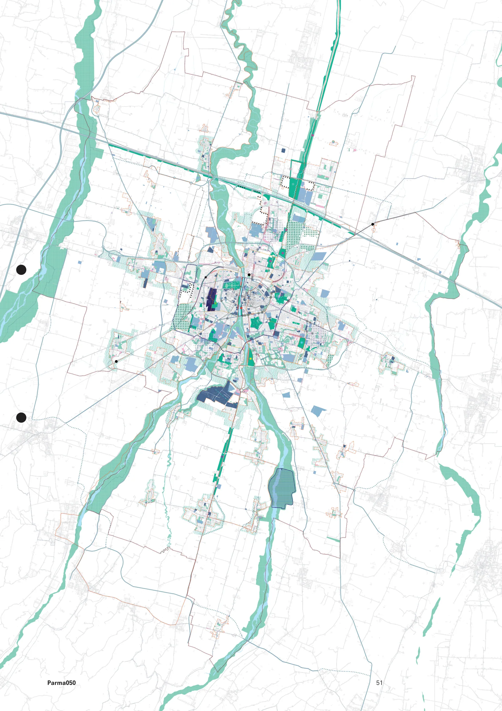